Afkortingen:
| RO = | rechterlijk archief Oisterwijk |
| NO = | notarieel archief Oisterwijk |
| SA = | rechterlijk archief Moergestel |
| sH = | rechterlijk archief 's Hertogenbosch |
| RANB= | rijksarchief Noord Brabant |
| GAT = | gemeentearchief Tilburg |
| NA = | nationaal archief |
Noten:
-
RO, inv.nr. 349, folio 23 verso. Het transport volgt op een openbare verkoop, die op 15 april 1655 is geregistreerd bij de schepenen van Oisterwijk, zie RO 631,f.63v-65r (70v-72r).
- Idem, f. 24 recto. Het stuk grond in Berkel grenst aan het erf van de weduwe en kinderen Michiel Jans van der Sande en de kinderen Peeter Goijaerts van der Schoor; met het ene einde aan het erf van Wouter Jan Wouters en de andere zijde aan dat van Jan Jansen van der Pasch. Het perceel in Udenhout grenst aan het erf van de kinderen Huybert Adriaen Berthens aan de ene zijde en het erf van de weduwe en kinderen Peeter Ariens Vermeer aan de andere zijde. Het Aschots broek zal bij de Aschotsche steeg gelegen hebben: van de Groenstraat in noord-westwaartse richting. De Asschot te Udenhout wordt al in 1447 genoemd in het hertogelijk cijnsboek.
Voor meer informatie over deze percelen klik hier
- RO 300,f.72v.
- NO 5,f.105r(428).
-
Het geboortejaar is afgeleid uit de leeftijdsvermeldingen uit 1625 en 1626. Voor de getuigenis over oorlogsschade door Cornelis Michiels alias Roos in 1625 zie het notariële archief van Lambrecht vanden Hoevel, NA 1, III,f.63 Voor zijn vermelding als inwoner van Kerkhoven bij Oisterwijk in 1626 zie NA 1,III, f.73.
Voor meer informatie over deze percelen klik hier
Generatie I
I Michiel Cornelissen
Gestorven voor 9 mei 1631.
Bron: RO 325, f. 43 scan 47.
Zijn erfgenamen dragen op 4 mei 1655 voor schepenen van Oisterwijk, meierij van ’s‑Hertogenbosch, een stuk akkerland van vier lopensaet gelegen te Berkel, omtrent de Hoolstraat, over aan Peter zoon van wijlen Peeter Goijaerts vander Schoor (de westelijke helft plus een voet) en Jacob Adriaen Jacobs.1
Het betreft "Peeter en Anthonis gebroederen, soonen wijlen Cornelis Michiels Roos", Adriaen Jansen Vrients als voogd over zijn vrouw Henrixken, "dochter weylen Cornelis Roos", Adriaen Aert Neuten, voogd over de kinderen van Adriaen Cornelis Roos, en Lambert Anthonis van Roij als voogd over de kinderen van Laureys Anthonis van Roij en Ida Cornelis Michiels Roos. Ook betrokken bij de verkoop is Andries "sone wijlen Anthonis Michiels Roos". Het perceel is belast met de helft in 14 stuivers jaarlijkse hertogcijns.
Dezelfde personen transporteren die dag ook een "stuck weijvelt ofte broeckvelt" van tweeënhalve lopens in Udenhout, in het Aschots broek, aan Adriaen zoon van Laureijs Joosten en Jan Janse Huenen. De akte vermeldt als mede-eigenaar Goijaert zoon van wijlen Adriaen Lamberts "daer moeder aff was Aleijd dochter wijlen Michiel Roos, soo voor sijn selven als mede hem stout ende sterck maekende voor den andere kijnderen ende klijntkijnderen van Arien Lamberts ende Aleijd voorschreven voor soo veel elck daerinne gerechticht is." Het perceel is belast met een jaarlijkse cijns van 2 stuivers 3 oert aan het Bisdom van 's-Hertogenbosch. 2
De regeerders en ingezetenen van Udenhout en Berkel leggen op 8 feb 1659 vast welk dorp welke percelen in het grensgebied fiscaal mag aanslaan, nadat hierover een geschil was ontstaan. Udenhout mag belasting heffen over een perceel van drie lopens en 48,5 roeden "toebehoort hebbende Michiel Cornelis Roosen [...] gelegen in de Seshoeven". In deze regio gingen 50 roeden in een lopensaet.
Bron:RO 353, f. 107v, scan 111.
Een perceel in Berkel met exact dezelfde omvang komt voor in een eigenarenlijst opgesteld in februari 1627: "Michiel Cornelis" bezit de "Vuchtse acker gebruikt bij Huijbert Ariaens", groot drie lopens en 48,5 roeden.
Bron: Dorpsbestuur Berkel 114, f. 23v, scan 27.
Zeer waarschijnlijk identiek met Michiel soone Cornelis Michiels, getrouwd met de voor 21 feb 1604 overleden Ida, dochter van Anthonis Symons Matheeus bij Aleydt Vuchts. De kinderen uit dit huwelijk (Cornelis, Anthonis, Aleyd en Willemken) erven grond in Berkel en Udenhout uit de nalatenschap van hun grootouders van moederszijde.
In 1606 bijvoorbeeld erven ze de helft in een lopens beemd in de parochie Oisterwijk "int Broeck aldaer aen d'Aschot", grenzend aan het erf van Huybert Adriaen Bertens.
De overeenkomst met het hierboven genoemde stuk broekveld in Udenhout ("int Aschots broeck" en grenzend aan het erf van de kinderen Huybert Adriaen Berthens, is zeer opvallend. Deze "Michiel soone Cornelis Michielss" leeft nog in december 1606, als hij voor schepenen van Oisterwijk verschijnt uit naam van zijn kinderen.3
Kinderen:
- Cornelis Michielss Roos volgt II-A
- Anthonis Michiels volgt II-B
- Aleijd Michiels
Op 10 april 1655 draagt "Aleyt dochter Cornelis Michielssen [sic] alias Roos ende nagelaten weduwe Goyart Adriaens wonende te Carchoven [..] sieck ende catijvich" de helft onverdeeld in twee lopens land te Berkel "ter plaetse genoempt inde Sesshoeven", haar "bij doot ende aflijvigheyt van haeren sustere aengekomen", over aan haar zoon Goyart en dochter Percken, die haar in haar ouderdom bijstaan en haar "den cost doen winnen" zonder enige vergoeding. Ook aanwezig bij de overdracht zijn Mayken en Lamberden haar andere kinderen. Getuigen zijn Gerit Wouter Rijsbroeck en Jan Peters van Esch, die de akte tekenen – Rijsbroeck met een molenmerk.4Getrouwd Oisterwijk 11 feb 1603 met Adriaen Goijerts Lamberts alias Knol. Getuigen: Michiel Cornelissen & Joost Jan Joosten. Uit dit huwelijk onder anderen: Ida Adriaen Goyaert Knol, gedoopt (RK) Oisterwijk 18 dec 1603 met doopheffers Christiaen Gijben en Jenneken Cornelis Gielen.
Waarschijnlijk identiek met "de weduwe Adriaen Goyarts", aangeslagen voor 2 oort in het Kommerboek 1636 voor gebruik van goederen omtrent de Kerkhovense windmolen.
Adriaen Geraerts Knol uit Kerkhoven sterft 31 mei 1615.
- Willemken Michiels
Gestorven voor 10 april 1655. Op 17 april 1608 in Oisterwijk getrouwd met Adriaan Anthonis. Getuigen bij dit huwelijk: Guilielmus Olifiers en Jacobus Claessen. De eerstgenoemde getuige was eigenaar van het goed Spreeuwenborch en kerkmeester van Oisterwijk voor dit jaar 1608. Uit dit huwelijk: Anthonius (gedoopt Oisterwijk 28 feb 1608, getuigen Jacob Claesen & Johanna Henricxen); Maria (gedoopt 21 feb 1610, getuigen Joost Adriaans en Paula Wijnants).
Een uitvoerige omschrijving van Spreeuwenburg, een omgracht 'hoochhuysken,' vinden we in een akte gedateerd 23 augustus 1625:
Eene hoeve lants genoempt d'Oude Hoeve die bij Cornelis Michielsen als pachter gebruijct ende betaelt wort, gelegen binnen de parochie van Oisterwijck ter plaetsche genoempt Carchoven, gelyck deselven geparteert ende afgedeijlt is vande Nieuwe Hoeve oft de Hoeve opte Luer, wesende een steenen huijs genoempt Oliviershuijs met seckeren andere huijsingen, stallingen, heijmselen, heyne en binnen pleijne mitte brugge en watergracht daeromme wesende, mitsgaders een buijten pleijne ende ledige plaetse voor de voorschreven brugge oistwaert ende seeckeren schoone eijken boomen ende heesters daerop staende met eenen hoff en boomgaert rontomme met een doiren hegge omcingelt sijnde t'samen met eenen wech aende sijde suijtwaerts vande buyten pleijne aff ende soe westwaerts op ter straeten waert wtloopende [sic], t'saemen drije loopensaeten ende ses roijen [=roeden] of daeromtrent begreijpende gelegen ter plaetse voorschreven, tuschen den Garstacker ex uno suijdtwaert ende tusschen het eijckvelt ex alio noortwaerts, streckende oostwaerts aenden Hoogenacker, ende westwaerts aende Oude Hoeve.
Bron: sH R.1502,f.322v-323r.
De hoeve was op dat moment eigendom van de erven Willem Oliviers.
Het goed Spreeuwenburg is inmiddels verdwenen, maar de herinnering wordt levend gehouden in de benamingen Oliviersweg en Spreeuwenburgerweg.
Op 18 maart 1626 volgt verkoop van het goed aan Henrick zoon wijlen Lambert Aertss van der Linden, die daar 2420 gulden voor betaalt. Op 3 maart 1629 betaalt hij nog eens 2316 gulden 19 stuivers 2 ½ oort. De hoeve was belast met jaarlijkse erfcijnzen: 12 ½ gulden aan de Lieve Vrouwe Broederschap te 's Hertogenbosch; 9 gulden aan het Zusterconvent achter de Tolbrug te Den Bosch; en een grondcijns van 6 stuivers aan de Hertog van Brabant. De nieuwe eigenaar was in tweede huwelijk getrouwd met Cathelijn Jan van der Hoeven. Zij bewoonde volgens het Kommerboek als weduwe een neerhuys, onderdeel van het goed Spreeuwenburg, terwijl het hooghuis nog altijd door Cornelis Michielssz. Roos werd gepacht (sH 1502, f.53).
Generatie II
II-A Cornelis Michielssz Roos zoon van I.
Geboren rond 1571, overleden tussen 1646 en 1651.
Op 2 apr 1614 ontvangen Anthonis Bernaertssen en "Cornelis sone Michiel Cornelissen" een tolbrief uit handen van de Oisterwijkse schepen Herman Cornelissen van Lieffbergen, bij wie zij tevens de vereiste eed afleggen. Een tolbrief bevatte doorgaans de verklaring dat de bezitter geen andere goederen zal vervoeren dan die van hemzelf en andere poorters van zijn woonplaats.
Bron: Dorpsbestuur Oisterwijk, inv.nr. 117, f.41v scan 12.
het oorlooghsvolck van syne Co.len Ma.t [koninklijken majesteit] nutertijt voor de stadt van Bredae liggende soe daer loopen ende uytlopen vanden selven legers volck als oyck den verscheyde convoyen vanden selven legere naerde stadt van sHertogenbosch marcherende ende remarcherende [et cetera]oftewel langstrekkende troepen van de koning van Spanje. Het leger van de Spaanse generaal Ambroglio Spinola hield Breda sinds 27 augustus 1624 omsingeld en zou de stad, ondanks pogingen tot ontzet door prins Maurits van Oranje en diens broer Frederik Hendrik, op 5 juni 1625 in handen krijgen. Maurits lag met de helft van het Staatse leger bij Roosendaal, Frederik Hendrik streek in augustus 1624 met de andere helft neer bij Waalwijk (zijn hoofdkwartier) en Sprang. De dorpen aan de Langstraat, zoals de weg tussen Geertruidenberg en Den Bosch werd genoemd, hadden veel te lijden van de ingekwartierde troepen, maar ook het Kwartier van Oisterwijk bleef niet gespaard. Roos en de andere ingezetenen verklaren:
Ende alsoo dese Vrijheyt ende parochie van Oisterwijck is palende aende Lange Strate alwaer prins Henrick van Nassauwe met een merckelijcke menichte van oirlooghsvolck te voet ende te perde leger is houdende, ende t' selven oirlooghsvolck dagelijx uytlopende ende uytrijdende op fouragie dat d'ingesetenen der voorschreven Vrijheyt daerdoor ende onder [..] van dyen oyck grotelijck sijn berooft ende beschadicht [..] nyet alleen van fourage maer oyck van henne meubelen, schaepen ende andere bestialen ende behouden dat opten 14 dach der [..] maent februari t' voorschreven legervolck met een grote menichte van wagens is gecomen soe binnen als onder t'begrip voorschreven Vrijheyt [et cetera]
dat die voorschreven Vrijheyt dagelijcx oyck groten last is hebbende ende lijdende van cleynen parthyen van soldaten soe van d' ene als van d' andere syde [....] ende dat daerenboven de voorschreven Vrijheyt dagelijcx seer overlast wordt met siecken soldaten, vrouwen ende kynderen uytten voorschreven leger comende als oyck met verscheydene boden, trompetters, tamborijen, gevangenen ende anderssints [et cetera]
In 1626 nog genoemd als 55-jarige Cornelis Michiels alias Roes, inwoner van Carchoven boven Oisterwijk, in een slecht leesbare akte die waarschijnlijk wederom een getuigenis van oorlogsschade betreft. De akte is tussen 18 mei en 10 november 1626 opgemaakt.5
In augustus 1625 genoemd als pachter van een hoeve met omgracht stenen woonhuis in Carchoven, boven Oisterwijk. Het goed is eigendom van de erven Willem Oliviers van Berckhuysen en wordt ook wel aangeduid als Oliviershuys, "hoochhuys" of de Oude Hoeve. De erven Oliviers verkopen de hoeve op 18 maart 1626 aan Hendrick Lamberts van der Linden. Pachter is dan nog steeds "Cornelis Michiels"Bronnen: sH.R.1500,f.321 de dato 23 aug 1625 ; sH.R.1502,f.53 de dato 18 mrt 1626 ; sH.R.1502,f.109v-117r de dato 9 apr 1626 met verdere financiële bepalingen rond de verkoop van 18 maart.
Het Oisterwijkse Kommerboek, een belastingkohier opgesteld in 1636, vermeldt "Cornelis Michielssz Roos" als pachter van de hoeve van Cathelijn, weduwe van Hendrick Lamberts, genaamd "Spreeuwenburch" in Carchoven (Dorpsbestuur Oisterwijk, inv.nr. 263,f.50v). Hij is gebruiker van de volgende percelen:
[1] de hoeve Cathelijn Henrick Lamberts, te weten huys, schuer en 6 roeden hoeffs, deselve, een driesken en boomgart besijden thuys, 8 roeden.
[2] eenen dries achter de schuere totte middelhegge toe, groot 2 el 4 roeden, 1 ort
[3] de Kuylweye, groot 6 el 27 roeden, hierinne is gelegen omtrent 1 (..) heye ende die heye affgetrocken, blijft 5 el.
[4] bij de Hooge Weye, een driesken tot 10 roeden
[5] een stuck lants genoempt de Hoghe Weye, groot 9 17 roeden.
[6] een stuck ackerlants genoempt Busselstoppelen, 3 el 40 roeden.
[7] een stuck ackerlants in den Hoogen Acker, 5 L 40 roeden
[8] (bij) in den Garstacker, 3 el 25 roeden lants
[9] een driesken bij den Garstacker, 23 roeden
[10] tuelant tot bogart, 39 roeden
 |
Afbeelding 1 Vermelding in het Kommerboek: 'Cornelis Michiels Roos de hoeve Cathelijn Henrick Lamberts wetende huys, schuer ende vij roeyen hoeffs' (Bron: Dorpsbestuur Oisterwijk 263,f.50v). |
Cathelijn Hendrick Lamberts is tussen 18 feb 1647 en 12 sep 1651 overleden (RO 341,f.15 en RO 345,f.104v) De Lijst van Verpondinge van het Kwartier van Oisterwijk vermeldt "Cornelis Michiels" als huurder van een zekere Bogaarts. Deze lijst van belastingplichtigen is eindgedateerd op 1658, maar aangezien Cornelis Michiels voor 1 mei 1655 is overleden, moet het vóór die datum zijn opgemaakt. (NA, Archief van de Raad van State, inv.nr. 2140).
Bogaarts zal Jan Peters van den Bogaert of Bogaerts zijn, getrouwd met Jenneken dochter van Henrick Lamberts en Cathelijn. Deze Bogaerts was namens zijn vrouw voor een vijfde deel eigenaar van Spreeuwenburch. Op 18 feb 1647 draagt zijn schoonmoeder haar vruchtgebruik in het vijfde deel van de erfenis aan hem over. In juni 1651 verkrijgt hij nog eentwintigste deel (RO 341,f.15 en sH.1606,399v de dato 30 juni 1651). Op 12 sep 1651 dragen Bogaarts en diens twee zwagers hun gezamenlijke driekwart in Spreeuwenburch over aan Cornelis zoon wijlen Hendrick van der Linden, die het andere kwart al bezit (RO 345,f.104). In het Oisterwijkse Kommerboek 1652 is Jan Peynenborch de gebruiker van Spreeuwenburch, vermoedelijk is dit de gelijknamige secretaris van Oisterwijk. De Busselstoppelen en de Hoogenacker zijn dan niet langer in gebruik bij Cornelis Michiels Roos, maar bij Laureyns Roeffen (Dorpsbestuur Oisterwijk, inv.nr. 264,f.40v)
Op 14 sep 1651 deelt Bogaarts met zijn schoonfamilie en de kinderen uit Hendrick Lamberts eerste huwelijk enkele percelen grond, waaronder de Cuylweye en de Busselstoppelen, en een huis grenzend aan de gracht rond Spreeuwenburch te Carchoven. De delers spreken af de gedeelde goederen te "aenvaerden als Laureys Roeffen uyt syne pachting sal scheyden". Dit bevestigt de gegevens in het Kommerboek dat Cornelis Michiels Roos op dat moment geen pachter meer was van deze gronden — als hij nog leefde zou hij rond de 80 jaar oud zijn geweest. (RO 345,f.86v).
'Cornelis Michielssen [..] als recht vanden gemael ende slach' staat in een slecht leesbare lijst getiteld Altgeun ten lasten der erffg.en Dierick vanden Wiel. De lijst is ongedateerd, maar een bijgevoegde inventaris van de nagelaten goederen van wijlen Dierick Peters vanden Wiel draagt de datum 22 sep 1646. Ook 'Geraert den molder' en 'Jiken wed. van Cornelis Wouters Rijsbroecx' staan op de lijst. Op 28 sep 1646 volgt een openbare veiling van Diericks boedel. 'Cornelis Michielssen' koopt voor 2 stuivers 'een tonneken' en voor 13 stuivers 'boonen' (f.395v en 397r).
Bron:RO 620,f.387v, scan 403.
In februari 1627 wordt "Cornelis Michielssen" genoemd als eigenaar van een stuk land groot vier lopens en zes roeden, gelegen onder Berkel, tussen de erfenis Michiel Janssen met meer anderen en de erfgenamen Embert Peters aan de andere zijde oostwaarts. In Oisterwijk gingen 50 roeden in een loopensaet.
Bron: Dorpsbestuur Berkel, Schrijfboek der landerijen, inv.nr. 114, f.20r, scan 23. De lijst is opgesteld tussen 2 februari en 1 maart 1627, zo verklaren Lambert de Meijer, Adriaen Leenaert Peeters, Peeter Willem Franssen, Anthonis Arien Sijmen en Cornelis Geritssen.
In 1629 betaalt Cornelis sone Michiel Cornelissen 13 stuivers hertogcijns uit een stuk akkerland van acht lopensaet "op Berckel aende Heycant, aen erve der erffgenaemen Jan Emmen Schoenm[aker]s ex uno ende aen erve Michiel Hendricx van Boxtel ex alio". Naar het zich laat aanzien was Cornelis eigenaar van de helft (zie de eerder genoemde verkoop in 1655), maar betaalde hij de cijns verschuldigd over het totaal van acht lopens, dus ook namens de eigenaar of eigenaren van de andere helft.
Bron: BHIC, Domeinen, archiefnr. 9, Legger van cijnzen Oisterwijk, Haaren, Enschot, Heukelom en Udenhout, 1629-1647, inv.nr. 220, folio 6v.
In 1646 betaalt Cornelis Michiels Cornelissen 13 stuivers hertogcijns uit acht lopens akkerland 'tot Berckel gelegen aenden Heycant', grenzende aan de erfenis van Michiel Jans vander Zande aan de ene zijde en aan dat van Jan Jans vande Pas aan de andere zijde. Uiterlijk 1651 is hij overleden en betalen 'Jenneken weduwe, Peter, Ariaen, Anthonis, Yken en Henricxken kinderen' de cijns.
Bron: BHIC, Domeinen, archiefnr. 9, Legger van cijnzen Udenhout 1646-1661, inv.nr. 221, scan 126.
De Staten der Landerijen voor het dorp Berkel uit 1649 heeft twee gelijkluidende vermeldingen: de erffgenaemen Cornelis Michielssen wegens een stuck landts tot Berkcel gelegen wesende 4 lopens 6 roeyen.
Bron: Dorpsbestuur Berkel, inv.nr. 113, scans 22 en 33.
|
|
Afbeelding
2 Kaart van Kerkhoven rond 1636 (reconstructie). De Nieuwe Baan tussen Helvoirt en Tilburg, aangelegd in de jaren 1806-1807 over de Kreiteheide, is omwille van de orientatie nog afgebeeld. |
- RO 366. De hier genoemde Laureijs Anthonie van Roij is waarschijnlijk dezelfde als Laurentius, te Oisterwijk op 31 okt 1610 gedoopt als zoon van Antonis Jan Anthonis van Roy, die een hoeve bezat op Carchoven, bij Emken Marcelis Laureis Eelens. De hoeve werd in 1645 verkocht, zie RO 339,f.39v. Een broer Lambertus werd op 29 jan 1615 te Otw gedoopt, een zus Anna op 10 dec 1601. Anna Anthonis (van Roij) trouwt te Oisterwijk op 12 dec 1633 met Adriaan Daniels. Jenneke Arien Daniel Verhoeven trouwt aldaar op 8 mei 1661 met Gerit Janssen van Santen.
- RO 474,f.82v.
- NO 5260,f.26r. Als getuigen treden op Mattheeus Embert Wijtmans en Marten van Hees.
- Joost Jan Joosten is in 1603 getuige bij het huwelijk van Aleid Michiels Roos, zie I.3. Waarschijnlijk is hij te identificeren als Joost Jan Joosten Daniels, in 1591 genoemd als voogd over Daniel Adriaan Anthonis Symons, de vermoedelijke neef van Cornelis en Aleid Michiels Roos, zie RO 291,f.54r. Op 21 feb 1604 wordt Joost zoon wijlen Jan Joost Daniels genoemd als weduwnaar van Neesken Daniel Jan Martens, zie RO 298,f.55r. Deze vermelding maakt hem een oom van Cornelis Michiels Roos.
- Verhuurcedulle, RO 620, folio en scan 8, met handtekeningen van de getuigen Gerrit Aerts vande Wiel en Adriaen Vercuylen, maar zonder die van de verhuurder en pachter. Voor een mogelijke exacte ligging van de boerderij zie RO 293,f.21v, scan27, de dato 10 apr 1598, waarin Bartholomeeus Ariens de Decker en zijn bij de overleden Heylken dochter Goyaert Stevens van de Biesenrijt verwekte zoon Adriaan een cijns verkopen uit het huis.
- NA, Archief van de Raad van State, inv.nr. 2140.
- RO 361,f.4v.
Getrouwd Oisterwijk 7 sep 1597 met Jenneke Henrick Petersen. Getuigen: Michiel Cornelissen & Ariaen Martens. Op 3 nov 1611 vindt eveneens te Oisterwijk het huwelijk plaats tussen een Cornelis Michiels en Anna Paulus. Dit zal Cornelis zoon van Michiel Cornelis van Iersel zijn, genoemd als pachter in het Kommerboek 1636.
Uit dit huwelijk:
- Peter Cornelis Michiels Roos volgt III-a
- Adriaan Cornelis
Michielssen Roos
Gedoopt Oisterwijk 13 sep 1602 (getuigen: Anthonis Gijsberts en Nelken Jan Martens), overleden voor 4 mei 1655, de dag waarop de nalatenschap van zijn grootvader wordt verdeeld door de erfgenamen; bij die gelegenheid onmondige kinderen vermeld, maar niet met naam genoemd. Hun voogd heet Adriaen Aert Neuten.Getrouwd met Engelken Dierck Mathijssen, dochter van Dierck Matthijs Aerts bij Cathelijn Claes van Engelant. Kinderen :
- Cathalijn Adriaan Roosen
Geboren circa 1644. Vermeld als inwoonster van Udenhout in 1702, inwonend bij haar broer Cornelis Adriaen Roosen. (Dorpsbestuur Udenhout inv.nr. 104, f.16r). De 52-jarige [Cornelis] Adriaan Roosen en de 60-jarige Cathalijn Adriaan Roossen, beide wonend in Udenhout leggen bij de Oisterwijkse notaris Abraham van Rotterdam op 17 november 1704 het gebruik van een stuk land in Udenhout (Winkelkwartier) vast ten behoeven van Embert van Strijthoven en Adriaan Cornelis Schoenmakers (NA 5291,f.29). - Maria Adriaan Roosen
Gestorven voor 24 december 1695, als haar broer Cornelis haar achtergelaten goederen opgeeft voor een belasting, de 20ste penning: 'een slecht huysken ende daeraen gelegen stuxkjen lande groot een loopen vijfentwintich roeden gelegen onder deser dingbanck van Oosterwijck tot Udenhout opt Winckel getaxeert op 20 gulden' (RO 92, scan 138-139). - Cornelis Adriaan Michiels Roosen
Geboren circa 1652, begraven Udenhout 22 okt 1725. Genoemd in 1702 als inwoner van Udenhout, zie de bronnen bij zijn zuster Cathalijn.
Klik hier voor afstammelingen.
- Cathalijn Adriaan Roosen
- Ida Cornelis Michiels Roos
(Yken) Gedoopt Oisterwijk 11 dec 1605. Getuigen: Adrianus Rogerius en Joanna Matheus. Getrouwd met (zie noot 1) Laureijs Anthonij van Roij.Waarschijnlijk pachtte hij rond 1643 een boerderij in Laag-Heukelom. Op 4 jan 1644 verhuurt Jenneken weduwe Cornelis Martens van Buedel haar stede in Laag-Heukelom "gelijck Laureys Anthonissen des selven in pachting gehadt heeft" voor vier jaar aan Cornelis Willems van Buel.
Bron: RO 620, scan 202.Peter Cornelis Roos en Lambert Anthonie van Roij worden op 14 april 1655 voor schepenen van Oisterwijk tot voogden aangesteld over de onmondige kinderen van Laureijs Anthonie van Roij en "Iken Cornelis Michiel Roos". Bij de erfdeling van Lambert Anthonij van Roij op 22 juni 1672 worden "Heijliger en Jenneke broeder en suster" genoemd als kinderen van Laureijs Anthonis van Roij, met nog een derde kind, "Anthoniske hunne suster".6
Andere erven zijn onder anderen Daniel Ariens Verhoeven, zoon van Anneke, dochter Anthonis van Roij. Cornelis van Eijck lost voor schepenen van Oisterwijk op 12 juni 1685 een schuld af aan de erven van Jenneke dochter Laureijs Anthonis van Roij en aan Teuniske Laureijs van Roij, de welcke uytlandigh is. Het betreft Jan Teunis Roose en diens zuster Joostie; Teunis Janse van Roij, Jenneke Arien Daniel Verhoeven (gehuwd met Gerrit van Santen), Daniel Adriaen Verhoeven, Maijcken Jans van Roij (weduwe Jan Arien Schubben) en Lijske Jans van Roij (weduwe Peeter Mathijsse). Op 6 jan 1667 had Van Eijck voor schepenen van Oisterwijk de schuld opgenomen ten laste van de kinderen Laureijs Anthonis van Roij.7
Uit dit huwelijk:
- Heijliger Laureijs van Roij
- Jenneke Laureijs van Roij
- Teuniske (Antonia) Laureijs van Roij
- Anna Cornelius Michaelis
Gedoopt Oisterwijk 20 jan 1609. Doopgetuigen: Adriaan Anthonis & Wilhelma Adriaans. - Hendrixken Cornelis Roos
Overleden na 4 mei 1655 en voor die datum getrouwd met Adriaen Jansen Vrients, zie noot 1.Uit dit huwelijk:
- Adriaen Adriaenssen Vrients
Op 31 juli 1686 bekent Adriaen Adriaenssen Vrients aan Daniel Verhoeven (zie II-A.3) schuldig te zijn alle penningen die sullen comen te procederen van Teunis Janssen van Roy, zie NO 5282,f.9 (354). Hij is blijkens deze akte betrokken bij een erfkwestie tussen de erven van Ida Cornelis Michiels Roos en Laureijs Anthonie van Roij. Op 16 januari 1694 wordt nog een Anna Janse van de Wiel, vrouw van Adriaan Adriaan Vrients genoemd, zie NO 5289,f.66. Dit echtpaar was te Oisterwijk op 28 feb 1677 (NH) getrouwd, de RK-akte geeft 27 februari als huwelijksdatum. Getuigen bij het RK-huwelijk: Joannes van Broeckhoven en Nicolaus Robben (deze zijn getuigen voor meerdere huwelijken deze zelfde dag). Bij de doop van hun dochter Johanna (Oist. 5 maart 1678) treedt zekere Henrica Adriaensen als meter op, wellicht de grootmoeder van het kind; Arnoldus Jansen van Nuijs was peter.
- Adriaen Adriaenssen Vrients
- Anthonis Cornelis Michiels
Roos
Gedoopt Oisterwijk 11 nov 1614 (getuigen: Adrianus Henricus & Catharina Joannis). Verkoopt de ouderlijke erfenis met zijn broer Peter in 1655. Op 28 april 1656 huurt Antonis soone Cornelis Michielssen Roos als pachter een stede met huis, akkerlanden etc als Jenneken weduwe Peter Marcelissen denselven tot noch ten tijt toe in haer pachtinge en gebruyck heeft gehadt voor vier jaar van Aert Peter Verhoeven, nagelaten weduwnaar van Dirken sijne huysvrouw. Deze treedt op namens zijn zwager Antonis Henrixen.8 De plaats wordt niet nader omschreven. Het Kommerboek geeft een Aert Peter Verhoeven als gebruiker van het leengoed Ten Dovelo, het noordoostelijke deel van Kerkhoven.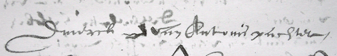
merck > van Antonis pachter onder de huurakte uit 1656. Handmerken gingen doorgaans over van vader op oudste zoon. Jongere zonen voegden ter onderscheid een aangepast merk.
Getrouwd met Maijken vanden Pasch, dochter van Adriaen zoon van Jan Adriaen vanden Pasch bij Meriken (Maria) dochter Peter Jan Martens bij diens vrouw Joostken dochter Aert de Meijer. Bron: RO 352, f.26v-28v de dato 9 april 1658, waarin hij Anthonis sone wijlen Cornelis Michielss alias Roos wordt genoemd. In deze akte wordt tevens zijn onmondige dochter Joostken genoemd, die bij testament mede-erfgename is van haar oud-tante Eirken, dochter van Joostken Aert de Meijer bij haar eerste man Aert Wouters. De minderjarige Joostken valt bij loting een huis toe, met schop en de helft in een akkerland genoemd Den Hoogen Acker in Udenhout, beide geleden in De Santcant; aanleiding voor deze erfscheiding is de dood van Eirkens broer Anthonis Aert Wouters, halven broeder vanden voorschreven Marien huysvrouw Adriaens voorschreven.
Op 5 mei 1670 deelt Anthonis Cornelis Roesen namens zijn vrouw Maijken Adriaen vande Pasch met anderen (inclusief haar broers Adriaen en Joost) de erfenis van zijn schoonouders. Anthonis valt bij loting een stuk akkerland van 2 lopens in de Biezenmortel, grenzend met een eind aan grond van Joostjen dr. Anthonis Rosen, de grachten en sloten oostwaerts heel ende de sloot westwaarts halff tot deses [..] wegende noordwaarts over het erf van Joostjen dr. Antonis Rosen; en ten tweede een moerveld van anderhalf lopens saet te Helvoirt ter plaatse genaamd Hooghe Heije; belast met jaarlijks 1 vat rogge aan de heer [?] te Leuven, te leveren te 's-Hertogenbosch in een meerdere pacht van thien mud ende een halft. Opvallend genoeg wordt Maijkens moeder nu Meriken dr. Cornelis Aerts genoemd. Bron: RO 364, I, f.45-48.
Op 6 september 1661 verkoopt Adriaen sone Jan Ariens vanden Pasch als man van Meriken, dochter van Peter Jan Martens, een weiveld van 2 lopens te Udenhoute aan de Santkant aan Anthonis Cornelis Bacx. Het perceel grenst aan de ene kant aan land van Anthonis Roosen, zie RO 355, f.43v-44r.
Jan en Joostjen, kinderen van Anthonis Cornelis Roosen bekennen op 2 mei 1685 ten overstaan van de Oisterwijkse notaris Marten van Hees 50 carolusguldens met 3 carolusguldens rente schuldig te zijn aan Anthoni Bacx, zie NO 29,f.16r(131).
Bekende kinderen uit dit huwelijk:

|
|
Gestorven in 1606, uiterlijk 26 december.
Op 26 feb 1629 draagt 'Diericxken nagelaeten weduwe wijlen Anthonis Michiel Cornelissen dochter wijlen Jan Peter Geritsen' een stuk akkerland van vierenhalve lopens in Udenhout 'aen Brabantshoeck' over aan Andries 'haeren eenigen sone'. Het perceel is haar aangekomen na de dood van haar vader.
Bron: RO 323,f.24 scan 31.
Getrouwd met Diericxken Jan Peter Geritsen., dochter van Jan Peter Geritsen bij Joostken dochter Adriaen Geritsen vander Wouwe.
Uit dit huwelijk:
- Andries Anthonis Michiels
Gedoopt (RK) Oisterwijk op 2 dec 1603. Moeder heet Theodorica Janssen. Doopgetuigen: Adrianus Gerardi en Johanna Cornelii. Deelt in 1655 in de erfenis van zijn grootouders (zie boven).Voor bronnen en nageslacht klik hier
- Anthonius Anthonis Michiels
Gedoopt (RK) Oisterwijk op 6 sep 1606. Moeder heet Theodora Joannis. Doopgetuigen: Gisbertus Melis en Hellegundis Adriani. [Noot: Ghijsbert Meliszoon Wouters was getrouwd met Hilleken, een zus van Diericxken].
Generatie III
III-a Peter Cornelis Roos zoon van II‑a.Gedoopt Oisterwijk 31 okt 1599 (getuigen: Joost Jan Joosten & Anneken Ariens), op 6 jan 1667 nog in leven.9
Peeter sone Cornelis Michielssen huurt op 27 april 1623 voor een termijn van zes jaar de stede van Adriaen sone Barthel Adriaens gelegen te Oisterwijk ‘ter plaetse genoempt Carchoven aende Creyte Heye’, met huis, hof, schuur en grond, groot ongeveer vier lopensaet, en nog enkele nader omschreven percelen grond, 'gelijck die voorschreven Adriaen deselve tegenwoordich in sijn gebruyck is hebbende'. Peeter is gehouden het dak van het huis alle jaren te dekken met honderd steen stro en moet het pand onderhouden. Borg staat Cornelis Michielssen, vermoedelijk vanwege de jonge leeftijd van Peter. In een toegevoegd los briefje gedateerd 22 jan 1629 verklaart Adriaen Barthels dit huurcontract voor zes jaren te hebben gecontinueerd.10
Deze informatie sluit aan bij het Kommerboek uit 1636. Volgens deze belastingbron is Peter sone Cornelis Michielss pachter in het westelijk deel van Kerkhoven omtrent de molen van Gerrit Wouter Rijsbroeck. Hij pacht onder meer een huys, schuer en hoff, toebehorende Adriaen Bartholomeeus, groot met sekeren dries, 39 roeden, en eenen hoff ende dries, gelegen over de Strate, bij de Leenacker van de heere van Helvoirt, 1 el 5 roeden. De verhuurder is misschien te identificeren als Adriaen Meeussen de Decker, wonend in Haaren, die volgens sH.R.1498,192v in 1622 grond bezat achter de Kerkhovense molen. Het verpondingskohier Oisterwijk uit 1658 vermeldt Peeter Corn. Roosen als huurder binnen de Vrijheid.11
Peter ontving pacht van de Udenhoutse molenaar Adriaen Jacob Hessels de molder (overleden voor 12 dec 1650), maar het is nog onduidelijk waarvoor. Het schepenbankarchief van Oisterwijk bewaart een afrekening 'tusschen den kinderen Adriaen Jacobs Hessels over de sommen die elck moest bijleggen tot betaelingen der gelijcke achterstellen van pachten', gedateert 8 nov 1651. Op een toegevoegd briefje (f.478) staat:
Item Peter Cornelis Rosen heeft gerekent met de gelijke kinder van sijn [te weten Hessels'] voorlijf soo vant jaer 1649 ende 1650 somen bij den een gerekent vant voorlijf ooft [?] noch xxij hier is ontfangen den 7 [..] Bron: RO 621,f.470-481, scan 476-488.
Peeter Cornelissen en Lambert Anthonissen van Roij werden 14 april 1655 voor schepenen van Oisterwijk tot voogden aangesteld over de onmondige kinderen van Anthonis van Roij (sic) verwekt bij Iken dochter Cornelis Michiel Roos. Op dezelfde dag werden Peeter sone Cornelis Roos en Adriaen Aert Neuten voogden over de onmondige kinderen van wijlen Adriaen Cornelis Roos, "ende dit ter tijt toe de goederen der voorschreven kinderen alsnu ten coope gestelt sullen wesen, vercocht ende gevest".
Peeter Cornelis Roosen verkoopt op 3 mei 1658 per openbare boedelveiling ‘huysraed, soo van ploegh, eysder, karren, als oock een koye’. Deze rode koe brengt het meeste op: 14 gulden van Peter vande Wiel. Geerit Rijsbroeck legt 1 gulden 17 schellingen neer voor een trog. Totale opbrengst: 28 gulden en 11 schellingen (RO 631,f.407v).
Op 6 jan 1667 leent Cornelis van Eijck 40 gulden uit de erfenis van Laureijs Anthonis van Roij, die nu aan diens drie kinderen toekomt. Toezienders daarbij zijn Lambert Anthonis van Roij en Peeter Roosen.12 Van Eijck was vorster van Oisterwijk en borgemeester over het jaar 1677.

|
|
Te Oisterwijk 4 feb 1623 als Petrus Cornelius getrouwd met Elisabeth Anthonissen. Getuigen: Bernard Anthonissen, Adriaan Janssen, Anthonis Bernaerts en Cornelis Michielsen. In 1625 huurde Anthonis Bernarts de hoeve Opte Luer, ofwel de Nieuwe Hoeve, onderdeel van het goed Spreeuwenburg, van mr. Gerard van Someren, als man van Elisabeth Guiliaem Oliviers van Berchuysen; tegen de tijd dat het Kommerboek 1636 werd opgesteld was de pachter Bernart sone Anthonis Bernarts. Anthonis Bernaerts is zeker voor 12 juni 1635 overleden, de moeder van Bernard heet Marie (RO 102,scan34).
In 1656 wordt Adriaen Peter Roosen genoemd als neef en wettige momboir over de 24-jarige Mayken dochter van Elyn Goossens. Met deze vermelding komt vast te staan dat Peter Cornelis Roosen was getrouwd met Elisabeth Anthonissen Bernarts. Mayken Goossens wordt immers op 29 nov 1631 gedoopt (RK) in Oisterwijk als dochter van Elias zoon van Goossen Mathijssen de Backer, die aldaar op 25 sep 1627 was getrouwd (RK) met Anna Anthonisse Bernarts (NO 5,f.135v-1). Deze Elias Goossen Mathijssen wordt in 1641 vermeld als pachter van een hoeve in Heukelom (zie sH.R. 1551,f.163 de dato 17 dec 1641).
-
RO 370, f. 15-17.
Uit dit huwelijk:
- Joannes Petrus Cornelis
Gedoopt Oisterwijk 30 okt 1623. Doopgetuigen: Jan Goijerts & Anna Joosten. - Adriaan Peters Roosen volgt IV-a
- Michiel Peeter Roosen volgt IV-b
- Maey Peter Cornelissen
Michielsen
In de bronnen ook wel Maijken Peeter Roosen, Maria Peeterse en Maijke Peter Cornelis genoemd. Gedoopt Oisterwijk 15 aug 1629, overleden tussen 22 feb 1676 en 6 mei 1688. Doopgetuige: Henricus Anthonius. Als Maeij Peter Cornelissen Michielsen uit Kerkhoven getrouwd Oisterwijk 18 nov 1657 met Cornelis Gerrit Rijsbroeck uit Kerkhoven, zoon van Gerrit Wouters Rijsbroeck bij Mechtel van Beurden, overleden voor 28 apr 1665. Ten tweede maal getrouwd met Adriaen Peter Smouts, wellicht in Oisterwijk op 28 okt 1667. In dat geval zijn de getuigen bij het huwelijk: Jan Timmermans & Jacob Lammers. Smouts hertrouwde als weduwnaar op 6 mei 1688 te Berlicum met Adriaentje Janssen. Het kerkelijk huwelijk volgde 24 mei.Jan Gerit Rijsbroecx en Adriaen Peter Cornelis werden 28 april 1665 aangesteld als voogden over de onmondige kinderen van wijlen Cornelis Gerit Rijsbroecx en Maijke Peter Cornelis, waaronder een dochter Aleyd. Een akte gedateerd 22 feb 1676 vermeldt expliciet de familieband tussen Adriaen Peeter Roosen en Aleyd. 13
Maeyken en haar tweede man hadden op dat moment nog maar één levende zoon, naast eenige kinderen. Adriaen Smouts belooft in deze schepenakte zijn stiefdochter Aeltje te zullen vrijwaren van de schulden bij de voorschreven Mechtelt gemaeckt, voor soo veel Aeltjens part is aengaende.
- RO 100 - deel 1, f.1.
- RO 476, f.145v-148.
- Wilmtjen
(Willemijn) Peeter Cornelis
Roosen
Gestorven voor 25 1689. Adriaan Peeter Rosen en Anthonij Balthussen Versteyen, momboiren over haar drie onmondige kinderen, delen met Jan Jan Cornelis de Bondt op 25 feb 1689 haar erfenis en die van haar overleden man. Na een loting viel de 3 onmondige kinderen toe: een huijske met den hoff daer aen gehoorende gestaen ende gelegen binnen den Vrijheijt van Oisterwijck ontrent de groote Linde Boom tussen de erfenis Peeter Jans de Cort en de andere deler (Jan Cornelis de Bont), met aan de ene kant de stroom en aan de andere kant de gemene straat; een stuk weiveld (4 loopen saet) omtrent de Ban brugge, tussen de erfenis Jan Baptist de Bondt en de weduwe Peijnenborg, met aan de ene kant de gemene stroom en aan de andere zijde de erfenis Embert Smits. (RO 476,f. 145v.) 14 15Op 8 maart 1689 verklaren Adriaen Peeter Rosen en Anthonis Baltus Verstijnen als wettige voogden over de drie onmondige kinderen van Cornelis Jans de Bont en Willemken Peeter Rosen 100 carolusguldens schuldig te zijn aan Jan Jans de Bondt, met vier gulden rente. De vader van de drie kinderen had het geld destijds van zijn broer geleend tot afflossing sijnder schulden (RO 401,f.12v).
Getrouwd Oisterwijk 11 aug 1665 (RK) met Cornelis Janssen de Bondt, zoon van Jan Cornelis Bartholomeus de Bondt bij Jenneken Jan Lamberts. Getuigen bij het huwelijk: Martinus van Hees en Lambertus van Esch.
-
RO 504, 7 dec 1716.
- RO 505, 10 mei 1721.
- RO 85, 20 nov 1717. Zie ook RO 480,f.375v, waarin wordt verwezen naar een uitspraak van de Raad van Brabant op 18 juni 1708, en RO 482,f.81r (1714).
- RO 370, f.312 de dato 9 maart 1676.
- RANB, Raad en Rentmeester-generaal der domeinen, inv.nr.334.
- RO 100, deel 1 - 11v
- Teuniske Peeters
van Ros
Gedoopt Oisterwijk 14 nov 1635, op 24 mrt 1702 nog in leven (zie RO 406, folio 63v). Ook Antonia Peters Roosen genoemd, of Antonetta Peter van Ros. De spelling Loosen uit het huwelijksregister moet nu definitief als een fout worden aangemerkt, zie noot 18. Getrouwd Oisterwijk 6 februari 1667 met Gerardus Baltheser Verstenen (Gerrit Baltus Versteijnen), zoon van Baltus Antonius Verstijnen & Lucia Johannesdr Janssen van der Borcht. Getuigen bij het kerkelijk huwelijk: Franciscus van Berkel en Adrianus Cornelis Janssen. Geerit Baltus Verstijnen was in 1695 borgemeester van Oisterwijk met Andries Herberts de Cort. Hij is voor 24 maart 1702 overleden, zie RO 406, f.63v.Theunisken Peter Roosen weduwe Gerrit Baltus Versteynen koopt op 24 maart 1702 een stuk akkerland van 3 loopens in De Schijf, binnen de vrijheid Oisterwijk, van de vijf minderjarige kinderen van Lambert Versteynen bij Maria Hendricx de Cort, zie RO 406, f.63v. Willem Hendricx de Cort vernadert op 17 augustus 1702 dit stuk akkerland als de momb[oiren] der kinderen Lambert Versteynen overgegeven hebben aan Anthonisken Peter Rosen wed[uw]e Gerrit Baltus Versteynen op 24-3-ll, zie RO 407, f.72.
Andries Herbert de Cort en Antonetta Peters van Ros weduwe van Gerrit Baltus Versteynen zijn in 1708 bij de Raad van Brabant verwikkeld in een rechtszaak tegen Leonard Stockvis, Hendrick vanden Boer en Martinus Verbeeck als auditeuren van recht, alsmede Adolphus Thomasius secretaris van Oisterwijk. De Raad veroordeelt Thomasius tot het vergoeden van alle gemaakte kosten. Bron: BHIC, vonnissen Raad van Brabant inv.nr.831, vonnis 9291 de dato 27 juli 1708.
Een zoon Balthus Gerrit Versteynen (gedoopt Oisterwijk 14 dec 1676) pacht vanaf 24 juni 1714 tot voor 28 okt 1720 de watermolen van Heukelom. 16 Deze molen, afgebrand in de nacht van 29 op 30 november 1713 maar kennelijk weer snel opgebouwd, was destijds eigendom van de in Tilburg wonende jonker Matthijs van Cannart. Een akte uit 1721 noemt Balthus bewoner en gebruyker van ene water en volmolen gelegen Ter Borgt onder de Vryheid van Oisterwijck. 17 Deze molen stond nabij het gelijknamige landgoed aan de Voorste Stroom.
In 1717 spant Balthus voor schepenen van Oisterwijk een proces aan tegen Cornelia Bossers, weduwe Jan Versteynen. De partijen zijn het niet eens over een schuld, gevallen bij de deling van goederen van wijlen Teuniske Peeters van Ros, in haer leven weduwe van Gerrit Baltus Versteynen. 18
Noot bij de doopgetuigen: Christina, dochter van Willem van Beurden en 1640 getrouwd met Adriaen Joachim Jansz. van Esch, was mede-eigenaar van de windmolen Ter Nedervonder te Oisterwijk. 19
Het geslacht Verstijnen telde in de 17 eeuw meerdere molenaars. Henrick Anthonis Stijnen wordt genoemd als molenaar Ter Borch in 1636; Cornelis Hendriks (Ver)stijnen als pachter van de watermolen Ter Borch in 1658 (Verpondingskohier Oisterwijk), 1665 en 1671; Lambert Versteijnen huurde de helft van de waterkoren- en volmolen in Oisterwijk ter plaatse genoemd De Borcht in 1694, 20 en tevens met ingang van 15 juni 1695 de oliemolen gestaen aan den huijse genaemt Weijenberch voor vier jaar van Leonart van Eijs, president schepen van Oisterwijk (Notarieel archief Oisterwijk, inv.nr.5290c, 25 juli 1695); en dan worden nog Anthonij Versteynen en Henrick Lamberts Versteijnen genoemd, beide kinderen van wijlen Lambert Versteynen die volgens een akte uit 1716 als knechten de watermolen van Heukelom hebben bemaald 'om coorn te breecken' (zie noot 9)
| 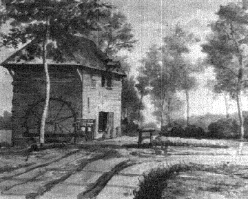 |
Afbeelding 3 De watermolen Ter Borch gezien vanuit westelijke richting op een prent uit circa 1870. |
- Anneke Peters
Roosen
Overleden tussen 19 jan 1685 en 9 juni 1691.Op 5 juni 1665 verklaart Anna dochtere Peter Cornelissen Rosen oudt omtrent twintich jaeren bij de dingbank van Oisterwijk wat zij gezien en gehoord heeft toen Cornelis Martens op dinsdag 26 mei ten huize is gekomen van Adriaen Teuwens, herbergier te Oisterwijk. Martens had stampij gemaakt toen Jenneke Bogaerts, huisvrouw van Teuwens, hem geen bier wilde tappen. Anneke verklaart dat hij Jenneke had uitgescholden en de voorschreven Jenneke bij 't hooft heeft gevadt. Anneke Rosen tekent de akte met kruis (RO 55, scan 217).
De schepenen van Oisterwijk benoemen op 18 juni 1691 Willem Adam Deckers tot momboir en Adriaen Peter Roosen tot toeziender over Maria, Lucia, Peter en Catharina, onmondige kinderen van Adriaen Deckers en Anneken Peter Roosen. 21 Diezelfde dag dient het tweetal bij de schepenen van Oisterwijk een opgemaakte inventaris in van "alle soodanige goederen als te samen met vollen rechten beseeten hebben Adriaen Deckers ende Anneke Roosen sijne overleedene huysvrouw" (RO 519, scan 55-56).
Getrouwd Oisterwijk 12 sep 1673 met Adriaen Adam Deckers, weduwnaar van Maria Cornelis Elias Lammers, zoon van Adam Willem Arien Deckers en Lucia Jacobus Meusen. Getuigen bij het huwelijk: Adam van Hees, Adriaen van Heck, Lambert van Hees en Joanna de Graeff. Adriaen Adam Deckers hertrouwde Oisterwijk 9 juni 1691 met Catalijn Antonius Loostermans. Misschien was dit voor Anneke een tweede huwelijk: op 9 jan 1656 trouwt voor de predikant te Oisterwijk Anneken Peter Cornelissen uit Kerkhoven met Ariaen Jan Ariaens, eveneens uit Kerkhoven.
- RANB, Archief van het Kwartier van Oisterwijk, inv.nr.40, de dato 13 januari 1659: Adriaen Peeter Roosen, borgemeester van Heukelom, Cornelis Anshems (sic) borgemeester van Enschot en Claes Robbert Lamberts borgemeester van Berkel. Opvolgers van Adriaan Peeters Roosen waren onder anderen Willem Mathijssen van Esch (1660), Hieronijmus Jansen van de Biesenrijdt (1662), Anthonij Aert Bartholomeuse (1663) en Gerit Bartholomeuse Vosch (1665). Zie ook de betreffende Rol van de Dingbank van Oisterwijk: RO 2, de dato 15 januari 1659, waarin dezelfde borgemeesterbenoemingen zijn opgenomen.
- GAT, Eden van voogden, inv.nr. 666 en 667, de dato 1 december 1684; NO 5282,f.330, 27 dec 1686
- RO 867, trouwboek schepenen 1648-1656.
- De Brabantse Leeuw 13 (1964) p. 60-61.
- RO 301, f.20.
Generatie IV
IV-a Adriaan Peters Roosen zoon van III‑a.Gedoopt Oisterwijk 26 feb 1625, overleden na 18 juni 1691. Doopgetuigen: Willem Dircks & Anna Anthonissen. Borgemeester over het dorp Heukelom onder Oisterwijk voor het jaar 1659.22 Als inwoner van Heukelom genoemd 1684 en 1686.23
Onder de naam Adriaen soone Peter Cornelis Roos getrouwd voor schepenen van Oisterwijk op 11 februari 1649 met Maijken, gedoopt Oisterwijk 22 aug 1624 als dochter van molenaar
Op 30 nov 1657 verhuurt Jenneke weduwe van Jan Jans Lathouwers met haar zoon Adriaen haar stede met huis en 3 lopens grond in Hoog-Heukelom aan Adriaen Pr. Roesen (kan ook Roeters zijn), zie NO 4, f.1v.
In een ongedateerd document, niet eerder opgesteld dan 1659, verklaart Adriaen Peeter Cornelis 'inde qualiteyt als colateur van den contributie van Huyclum' tien gulden tegoed te hebben van Bernart Anthonissen 'als gewoont hebbende opde goederen van Hendrick van Duurnick', 'voor een halff jaer contributie beginnende cerstmis ende eyndigende St. Jacob', oftewel 25 juni (Bron: RO 102, scan 103).
Ook is Bernart de som van vijf gulden en tien schellingen schuldig die Adriaen hem had geleend 'int lest van den maent april 1654 [..] om te coopen een sack roggen'. Verder heeft Adriaen 'des selven vercocht een vath haver' ter somme van tien schellingen.
Een derde en laatste schuld wordt als volgt omschreven:
Item hebben [ik] den selven Anthonis over negen off thien jaeren gedient als knecht waer van mij noch rest van mijn verdiende huer de somme van iiij gulden
Uit bijgevoegde verklaringen van anderen blijkt het te gaan om Bernart Anthonissen Bernarts uit Kerkhoven, die in 1654 voor de schepenen van Oisterwijk was gedaagd door Cornelia weduwe Adriaen Adriaen Dominicus vanwege een openstaande schuld 'ter saecke van geverftde wolle laeckenen bij den gedaegde van des aenleggers man gecocht' (ibidem, scan 30).
Cornelis Michielssen van Iersel en Peter Adriaens vande Wiel verklaren in 1654 wat de op 17 nov 1652 overleden Gerard van Someren nog tegoed had van Bernaert 'mijnen [sic] gewesen pachter tot Carchoven [..] sedert de doot van mijn schoonvader sal[iger] (ibidem, scan 89). Hiermee komt vast te staan dat het gaat om Bernart Anthonissen, een oom van Adriaan Peters Roosen en pachter van de Nieuwe Hoeve op het Luer in Kerkhoven (zie III-A).

|
|
De schepenbank van Oisterwijk buigt zich op 4 mei 1666 over een zaak tussen aanlegger Huybert Gijsbert de With en gedaagde Adriaen Peeter Roosen: aenlegger eijst 9 gulden 7 stuivers 8 penningen ter saecke ende als reste van gebruyck van des aenleggers hoylant in den jaere 1665 (RO 3, ongefolieerd, scan 307). In de bijlagen van de rol (RO 72-73) is hierover niets terug te vinden.
Op 20 januari 1673 verhuurt Jenneken vanden Wiel, nagelaten weduwe van meester Johan Peynenborch 'in sijnen leven secretaris der vrijheyt van Oisterwijck', voor de termijn van acht jaar aan Wouter Claes Wouters van Haren:
Ene stede te weten huys, schuer, hoff ende boomgaert ende erffenisen bestaende in ackerlanden ende driessen oft weijen daeraen liggende en daer toe behoorende soo groot ende cleyn als de selffen gelegen sijn onder de parochie van Oisterwijck ter plaetse genoempt Huykelom aenden Creytenheye in al sulcken weghen ende grootten gelijck Adriaen Peter Roosen deselven stede tot noch toe in sijn gebruyck oft pachting heeft gehadt.
Bron: NO 26,f.84(91).
Van Haren en de weduwe Peynenborch spreken af dat de pachting van het kruithof en de weiden half maart ingaat, die van het huis en de akkerlanden in mei 1673.
Adriaan is waarschijnlijk molenaar geweest, twee van zijn kinderen noemen zich immers Mulders. Het bewijs hiervoor is nog niet gevonden. Het ligt voor de hand dat hij werkte hij in het molenbedrijf van zijn schoonfamilie, die de Kerkhovense molen in Oisterwijk pachtte van ongeveer 1638 tot 1682. Zijn eigen familie telde ook molenaars: de zoon van Adriaans zuster Teuniske maalde op de watermolen van Heukelom en nog later op de watermolen Ter Borch in Oisterwijk. Adriaans kleinzoon Wouter Jacobs van Haren pachtte van 1710 tot 1714 de oliemolen op het landgoed Weyenberch te Oisterwijk (zie onder).Een borgemeester was de ontvanger van een dorp en was in die functie een jaar lang verantwoordelijk voor de dorpsrekening. Hij moest zorgen dat de inkomsten en belastingen werden opgehaald en dat de schulden van het dorp op tijd werden betaald.
Het laatste kwart van de zeventiende eeuw was een periode waarin De Meijerij veelvuldig door oorlogsgeweld werd getroffen, en veel dorpen verkeerden in een slechte financiële staat. Het kwam er dan ook in de praktijk op neer dat de meest draagkrachtige inwoners als borgemeester de twijfelachtige eer genoten het dorp uit eigen zak te moeten voorschieten wanneer de crediteuren, de fiscus voorop, op tijd betaald dienden te worden. De oorsprong van de naam borgemeester is onzeker, maar plausibel lijkt de verklaring dat hij degene was die een jaar lang borg stond voor de schulden van het dorp.
Heukelom behoorde rechterlijk tot De Enighe van Oisterwijk,
maar wees zelf jaarlijks een eigen bestuur aan bestaande uit één borgemeester
en twee belastingzetters. Bij deze laatste twee functionarissen is er ook wel onderscheid tussen een collecteur der bede en een collecteur der verponding. Hoewel Heukelom geen kerk had, en er nauwelijks sprake was van een dorpskern, gold het gehucht juridisch gezien toch als dorp, met een eigen rekening en zelfstandig beheer van gemene gronden.
Overgenomen uit: A.C.M. Kappelhof, 'De belastingheffing in de Meijerij van Den
Bosch gedurende de generaliteitsperiode 1648-1730,' Bijdragen tot de geschiedenis
van het zuiden van Nederland LXIX (Tilburg 1986)
- Leo Adriaenssen, 'Durendaal als lakenververij,' De kleine Meijerij 49 (1998), p.93-97. Zie ook Gerechterlijk Archief Tilburg inv.nr. 615, 7 maart 1673.
- RO 377,f.2r
- RO 476, f.145v
- RO 368, folio 12r-14r.
- A. van den Oord, W. van Oosterhout, Berkel-Enschot-Heukelom, drie zielen en één bestuurlijk hart (Berkel-Enschot, 1996) p. 49.
- GAT, Eden van voogden, inv.nr.666 en 667.
In een boek over het geslacht Ro(o)zen meldt auteur Ad Roozen dat Adriaen Peter Roosen de zoon is van Peeter Jan Roosen alias Bordens (1592-1680), schepen van Moergestel tussen 1637 en 1666 en Koning van het Schuttersgilde aldaar in 1653. Hij voert geen bewijzen aan voor dit familieverband. Sterker: de in dit werk genoemde Adriaen is begraven te Moergestel op 30 januari 1682, terwijl de Oisterwijkse naamgenoot op 5 januari 1683 voor schepenen verschijnt inzake een geldschuld, hem toekomende van Adriaen Janse van Baest.28 Ook treedt hij in februari 1689 op als voogd bij een erfdeling.29 De auteur heeft vermoedelijk geen kennis genomen van de huwelijksakte uit 1649, waarin de bruidegom duidelijk wordt aangeduid als Adriaen soone Peter Cornelis Roos. De vader kan dus niet Peter Jan Roosen zijn geweest.
De erven van Gerrit Wouter Rijsbroeck delen 15 maart 1674:
Wouter, Jan ende Willem, gebroederen, soonen Gerrit Wouter Rijsbroeck, verweckt uijt Mechtel dogter Jan Tiberius [sic] van Beurden, die voornoemde Jan alnogh ende met hem Michiel Peeter Roosen als wettige aengestelde momboirs van Aeltge dochter Cornelis Gerrit Rijsbroeck, verweckt uyt Maijken Peeter Roosen, hebben t'samen gedaen ende gemaeckt eene erfdeijlinge ende erfscheijdinge van goederen hier beschreven, huer aengekomen bij den rechte van successie wegens henne voornoemde ouders soo sij verclaarden, ende oock bij renunciatie van Adriaen Peeter Roosen, als man ende momboir des Maijken sijne huijsvrouwe, dogter des Gerrits ende Mechtels, voornoemde in reconpensse van t'geene hij voor deses van sijne ouders heeft genoten volgens acte op heden date voor schepenen gepasseert. 30
Adriaan deelt niet in deze erfenis: eerder die dag had hij afstand gedaan van het vijfde deel, hem toegekomen namens zijn vrouw. In ruil daarvoor doen de andere vier delers afstand van 88 gulden als den selven Adriaen tot houwelijcx goet heeft genoten ende in collatie in den gemijnen boedel soude moeten inbrengen. Bovendien wordt hij gevrijwaard van eventuele schulden die op de boedel van zijn schoonouders rusten. Op 22 feb 1676 blijkt dat Adriaan bij mondeling accoord daarnaast nog een merckelijcke somme tegoed heeft van zijn zwagers, zie noot 12.
Achtenhalf jaar later poogt Adriaen alsnog een stuk grond uit zijn schoonouderlijke erfenis in handen te krijgen. Op 18 november 1682 koopt Adriaen Peeter Roosen in een openbare veiling van de verlaten boedel van Jan Gerit Rijsbroeck
‘een stuck weyvelt groodt omtrent twee loopens off daer omtrent begrijpende gelegen inde Vrijheyt voorschreven opde Cleyn Heye tussen erfennis vanden Armen Gasthuyse alhier ex uno, ende tussen erffenis Joost Thomas van Breda ex alio, streckende voor vande straet tot aen den gemeene Rack loop, los ende vrij’voor 134 gulden. Roosen wordt in de koop bevestigd op 25 november 1682.
(Bron: Verkoopcedulle van de geabandonneerde boedel van wijlen Jan Gerit Rijsbroeck, RO 628, scans 87-93).
Op 23 dec 1682 blijkt hij toch achter het net te hebben gevist: het stuk grond is voor 154 gulden aan Abraham Verster toegevallen, zoals blijkt als de eigendomsoverdracht wordt vastgelegd in een transportakte bij de schepenen van Oisterwijk
(RO 376, deel 2, folio 37r).
Op 30 mei 1687 biedt Adriaen Peter Rosen met succes 17 schellingen op een te huur aangeboden ‘loth straaijsel’ in de Haarense gemeijnt ‘over de heij naer Heuclum’, oftewel een kavel strooisel aan de Creiteheide bij Heukelom. Hij voldoet de betaling op de voorgeschreven dag, 12 september. Een algemene bepaling luidt: ‘Den huerder sal sijn gehuerden loth straijsel niet mogen steecken met eenige schoepen off andere gereetschap dan alleenlijck te vlaggen met de corte sijse’.
(RO 690, scans 41-59, met name 53).
Het Reglement op de Politieke Reformatie van 1660 sloot katholieken in beginsel uit van lokale bestuursfuncties, tot zetters en kerkmeesters aan toe. In Oisterwijk woonden echter maar weinig protestanten, zodat het bestuur in de praktijk nog voor een deel uit katholieken bleef bestaan.
|
(N.B.: hiaat in de doopregisters 1638-1657)
- Jan Adriaan Peters Roosen alias Mulders volgt V-a
- Lysken Adriaens Rose
(Elisabeth Adriaens, ook wel Elisabeth Adriani Roosen) Getrouwd Oisterwijk 5 feb 1675 met Jacob Wouters van Haaren. Getuigen bij het kerkelijk huwelijk: Lambertus van Esch en Joannes Vroemans. Beiden woonden op het moment van hun huwelijk te Heukelom, en voor beiden was dit het eerste huwelijk. Een recent werk over de historie van Berkel-Enschot vermeldt de samenstelling van de veestapel van Lijske, weduwe van Jacob Wouters van Haaren in Heukelom. In 1690 bezat zij een zwarte ruin, drie rode koeien, een kalf en 20 schapen. Veehouders hadden in deze tijd in de regel niet meer dan vijf koeien.31Een zoon Wouter Jacobs van Haren uit dit huwelijk pacht van 1710 tot 1714 de oliemolen op het landgoed Weyenberch te Oisterwijk. De omschrijving in het pachtakkoord luidt: "een huyzingen ende neerhuysinge metten slag ofte olimolen, den halven hoff en den geheelen bogaert daaragter nu tot dries gemaackt". Met nog wat aanpalende percelen grond pacht Wouter dit van Leonard van Eijs, koopman en oud-president schepen van Oisterwijk, voor vier jaar tegen 149 gulden. Borg staan Francis Smits en Balthus Versteynen. Het betreft de oliemolen op het landgoed Weyenberch te Oisterwijk
Bron: NA 5291A,f.11 de dato 23 april 1710. - Maria Adriaan Peters Roosen
(ook wel Maria van Ros genoemd) Gedoopt Oisterwijk 28 mei 1660. Doopgetuigen: Egidius Geerts & Catharina Dirricks. De meter was misschien een dochter van Dirick Peters van de Wiel, een oom van Maeijken Gerits Rijsbroeck. Getrouwd te Oisterwijk 1 feb 1688 met Denis Adriaan Gijsberts van den Boer (oud 30 jaar) wonende beiden te Heukelom. Getuigen bij het huwelijk: Cornelis Hendrix en Gertrudis Adriani Roosen. Denis van den Boer was borgemeester van Heukelom in 1695 en 1704, en Belastingzetter aldaar in 1709 en 1711. - Gertrudis Adriaan
Peters Roosen alias Mulders
Gedoopt Oisterwijk 3 dec 1663 (doopgetuigen: Cornelius Peeters & Anna Adriaensen) overleden na 1718. Waarschijnlijk identiek met Geertruij Emme, die begraven werd te Oisterwijk op 28 juni 1732. Getrouwd 1 feb 1688 te Oisterwijk met Cornelis Hendrix Emmen uit Oisterwijk. Getuigen bij het huwelijk: Denis Adriaan van den Boer & Maria Adriaan Roosen. In 1696, 1699 en 1705 vermeld als Gertrudis Mulders. Cornelis Emmen bezat twee hoeven in Heukelom, waarvan één op de Oisterwijkse Hoeve. Omstreeks 1729 ging hij failliet: zijn onroerende goederen werden in 1730 openbaar geveild.Bij de doop van hun derde zoon Adriaen op 27 februari 1693 meldt het RK-doopregister van Oisterwijk de naam van de moeder als Gertrudis Ariaensen van Sundert, en een van de doopgetuigen als Adrianus Peeters van Sundert.
- Jenneke Peters Roos
(ook wel Jenneken Adriaens)
Geboren rond 1650, afgaande van de bij haar huwelijk opgegeven leeftijd. Getrouwd (RK) te Oisterwijk 12 feb 1679 met Gijsbert Hendrik Peters, out omtren 35 jaeren (sic), geboren te Vessem. De bij het huwelijk opgegeven leeftijd van Jenneke was 28 jaar. Beide huwelijkspartners woonden op het moment van het huwelijk in Heukelom. Getuigen bij het wettelijk huwelijk: Adriaen Hendrick Peters broer van de bruidegom en Jan Adriaen Peter Roos broer van de bruid. Getuigen bij het kerkelijk huwelijk: Joannes Peters van Broeckhoven en Anna de Visser.Peter Hendricx van Vessem woonende tot Blayel en Adriaen Peter Roosen woonende tot Heuclum werden door schepenen van Tilburg op 1 dec 1684 tot voogd respectievelijk toeziener benoemd over de onmondige kinderen van wijlen Gijsberts Hendricx daer moeder aff was Jenneken Adriaen Peters.32
Mogelijk is Gijsbert Peters dezelfde persoon als Gijsbert Hendr. Peters, opden Heuvel, op 20 aug 1684 begraven te Tilburg (GAT, archief 15, inv.26, Begraaflijst van Tilburg 1673-1684, Nederduits-Gereformeerde gemeente, aldaar p.171).
- RO 368, f.55r-56v.
- NO 5273,f.74r, 77v, 79v, 79r, 81r.
- NO 5256,f.17v. Zie ook NO 5262f.137v de dato 22 mrt 1659 en NO
5251,f.62v april 1665.
Gedoopt Oisterwijk 5 sep 1627 (getuigen: Adrianus Gerardus & Maria Guillielmus), overleden na 27 dec 1686. Vermeld in 1674 als voogd over Aeltgen, dochter van Cornelis Gerrit Rijsbroeck & Maijken Peeter Roosen. Bij een deling tussen Wouter Geraert Rijsbroecx en diens broer Jan treedt hij op als getuige (zie noot 33). Als voogd vermeld 19 juni 1679 in een boedelinventaris van Aleida, hoewel zijn naam daar wordt gespeld als Michiel Adriaen Roosen.33 Hij treedt in het voorjaar van 1676 veelvuldig op als getuige in notarisakten gepasseerd voor Anthony Beens.34 In 1651 tekent hij als getuige voor Jan Gerits Vromans de Oude bij notaris Marten van Hees met Michgiel Peters Roes.35
Op 26 mrt 1661 huren 'Michiel Peter Roosen' en Cornelis Jan Vendix 'eene weye genaempt de Pertsweye' binnen Oisterwijk 'aen den Baertdijck recht over het bruggsken aldaer' van Margiet van der Borcht
Bron: NO 4,f.33, met handtekingen van Michiel Peter Rosen, Cornelis Vennicx en Maergrijt Dolmans wed.e van der Borcht.
In 1665 aangeslagen in de Verponding wegens een huys met seven roeijen hoofs en van de weduwe Goossen van der Borcht de helft in een weye opde Cleyn Heye (RO 268,f.9).
De handtekening van Michiel Peter Roosen, 20 maart 1674. |
Huwelijk voor de predikant van Oisterwijk, 24 sep 1651. |

Uit dit huwelijk:
(N.B.: hiaat in de doopregisters 1638-1657)
- Lysken Michiels Peeters
Op 19 oktober 1654 maakt Gerit Peter Roeters voor notaris Jan Peynenborch sijn huysken, hoff daerinne hij tegenwoordig is wonende tegenover de pastorye in Oisterwijk over aan zijn natuurlijke dochter Peerken, na te laten aan haar twee kinderen bij Michiel Peters. Het oudste kind, Lysken, krijgt Gerrits beste kist. Voorwaarde is dat Gerrits zuster Cornelia Peters na zijn overlijden twee jaar in het huis bij voornoemde kinderen zal mogen wonen (NO 5,f.99r(422). - Peter Michiel Roosen
Op 20 sep 1682 trouwt te Oisterwijk Peter Machiel Roosen met Jenneken Leenders van Weert, onder getuigenis van Hendrik van de Ven en Hendrik van Aelst. In de huwelijkse voorwaarden heet hij Peeter Michiel Roosen, jongeman, terwijl Jenneke Leenderts van Weerdt wordt vermeld als weduwe van Leendert Lievens; beide echtelieden wonen in Oisterwijk.Op 15 aug 1703 verkoopt Peter Michiel Roosen voor schepenen van Oisterwijk eenen hoff omtrent zeven roeden gelegen binnen de Vrijheyt van Oisterwijck voor 19 gulden 15 stuiver aan Jan Goosen Peijnenburgh (RO 407,f.87).
In 1704 is Peter Michiel Roosen eigenaar van een huis aan het Kerkeind in Oisterwijk, dat grenst aan een huis van Cathalijn Roeters en haar man Jan Maerten Peijnenburgs (RO 407,f.112 dd 3 maart 1704). Op 26 sep 1722 wordt er beslag op gelegd omdat Peter de verpondingen niet heeft betaald (RO 485,f.34v). Bij de uitwinning in december 1722 is sprake van een hof daer een huys op heeft gestaen. De koper wordt Jan Antonie Botermans, die er een huis op laat bouwen. Dit huis was in 1659 eigendom van Leendert van Weert, alias Lenard Ariens Cuyp.
(Bronnen: RO 476 dd 21 jan 1688; GA 243,f.33 anno 1659. Publicatie over pand Kerkstraat 17-19 in De Vrijheid Oisterwijk, 16 nov 2009). - Adriana Michiels Peeters
Gedoopt Oisterwijk 31 dec 1660. Doopgetuigen: Adriaan Peeters & Maria Adriaenssen. - Cornelis Michiels Peeters
Gedoopt Oisterwijk 13 feb 1666. Doopgetuigen: Jan Peeters & Anthonia Peeters.
| 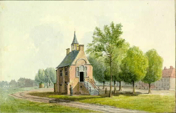 |
Afbeelding 4 "Het Stad- of Raadhuis te Oosterwijk, gezien uit de kamers der Schutters van Boetselaar bij den ontvanger (mei 1831)". Oorspronkelijk stond hier de kapel Onze Lieve Vrouwe ter Linde, die vanaf de 16e eeuw dienst deed als raadhuis. Nadat het vervallen bouwwerk was gesloopt, verrees in 1728 op dezelfde plek het hier getoonde Raedhuys. De regenten van Heukelom, Berkel en Enschot, die sinds 1699 bijdroegen in het onderhoud, gebruikten het als secretarie. Het werd in 1897 gesloopt. Uit: Herinneringen van de haagsche schutterij te velde, Atlas van Stolk, Historisch Museum Rotterdam. |
Generatie V
- RO 401, f.78v-22 feb 1690: Jan Adriaen Peeter Roosen, als in den jare sestien hondert negentachtich geweest sijnde borgemeester der gehuchte van Huyckelum [..] mitsgaders Peeter Goyaertsen Vermeer ende Embert Janssen Pynenborgh, als inde voorschreven jare geweest sijnde regeerders der voorschreven gehuchte. Roosen was overigens niet het hele jaar borgemeester: op 12 jan 1689 had eerst Niclaus Hendrick Emberts bij president-schepen Jacobus Focanus de eed afgelegd, zie RO 8, scan 6. De benoemingen in Enschot (alle onder de naam Jan Adriaen Mulders) vermeld in RO 15.
Regesten uit het notarieel archief van Dirck van Wijk: 'Maria wede Adriaen van Baest wnd Huyckelom aan Willem Peeters van Broeckhoven tbv Jooltje Jan Mulders wnd Udenhout geleende penningen van 125 ka gld. als Jan Jans van Granade borgemeester Enschot 1705 had geleend van haar toen Jan Adriaen Mulders zetter was' (NA 5294,f.35 dd 14 sep 1716); 'Wilm van Broekhoven wnd Udenhout Huybert Jacob Swaens en Wouter van Haren beiden wnd Ow. tbv Joosje Jan Mulders wnd Udenhout op 14 september ll. ten huize van 2de comparant dat hij met Maria wede Adriaen van Baest in discoers in bijwezen van Claes Jan Crijnen over geleend geld' (NA 5294f.46 dd 6 jan 1717); 'Adriaen Jan Buelen oud 6 a 57 jaar en Wouter Cornelisse van Keulen oud 5 a 56 jaar beiden wnd Heuclom tbv hr Johannes van Rotterdam gelaste van Joosje Jan Mulders wnd inden Udenhout
dat Maria wede Adriaen van Baest en Jenneke Adriaen Daendels wede Jan Jan Tijssen van Esch eyge gesusteren sijn
' (NA 5294,f.89 dd 8 jan 1718)
Voor Moergestel zie Archief van het Dorpsbestuur van Moergestel, Resolutiën van het Corpus 1713-1717, inv.nr. 4, f. 111, 7 januari 1717.
- NO 37, f. 330. Notaris Beens noemt Martinus Verbeeck jongeman (ongetrouwd) maar duidt vervolgens Martinus van de Wouw per abuis aan als diens schoonvader. Van de Wouw (begraven Oisterwijk 16 nov 1680), was 17 juli 1667 getrouwd met Margaretha weduwe Cornelis Philips Verbeeck en dus de stiefvader van Martin Verbeeck.
- NO 42, notaris Anthony Beens, f.7. Volgens zijn ondertrouwakte (Oisterwijk 13 jan 1691) woonde Franck Lambert Elias Brocken zelf in Berkel. In 1678 deelt hij op 22-jarige leeftijd in de erfenis van zijn ouders, Lambert Elis Franck Brocken en Jennecken dochter Adriaen Jacobs van Rijswijck (RO 372,f.44 dd 30 sep).
- RO 478,f.23v. De andere ingezetenen van Heukelom zijn Jan Adriaens van Rijswijck, Adriaan Adriaan Gerrits, Jacob Cornelisz, Goyaert Bartholomeusz van Diessen, Willem Wouter Wagemaeckers en Adriaen Petersz van Besouwen.
- RO 504, 23 mei 1718.
- Kwartier van Oisterwijk, inv.nr.241, 20 feb 1690: kopie van de dorpsrekening
van Jan Adriaen Roosen, borgemeester van den gehuchten van Huijckelum.
De bede en de verponding zoals hier genoemd zijn twee typen van hoofdelijk
omgeslagen landsbelastingen. De verkoop van het perceel van Coij wordt beschreven in RO 401,f.78v-79r de dato 22 feb 1690.
De verklaring van Jan Janssen van Esch is te vinden in het archief van notaris Abraham van Rotterdam (NA 5291,1700,f.22)
- RO 642, f.137r en f.139v, 24 juli 1698. De tienden werden jaarlijks in een openbare aanbesteding 'afgemijnt'. De Galge tienden waren eerst op 50 zakken rogge gewaardeerd, maar gingen voor iets meer dan de helft naar Jan Mulders. In dit jaar 1698 was Cornelis Hendrick Emmen pachter van de Cleijne Thiende, Evert van Dall van de Groote Thiende en Adriaen Claes Peters van de Vlas
Thiende, alle onder Heukelom.
- RO 504,f.104r.
- RO 375, f.51r, 28 oktober.
Regesten uit het notarieel archief van Dirck van Wijk: 'Maria wede Adriaen van Baest wnd Huyckelom aan Willem Peeters van Broeckhoven tbv Jooltje Jan Mulders wnd Udenhout geleende penningen van 125 ka gld. als Jan Jans van Granade borgemeester Enschot 1705 had geleend van haar toen Jan Adriaen Mulders zetter was' (NA 5294,f.35 dd 14 sep 1716); 'Wilm van Broekhoven wnd Udenhout Huybert Jacob Swaens en Wouter van Haren beiden wnd Ow. tbv Joosje Jan Mulders wnd Udenhout op 14 september ll. ten huize van 2de comparant dat hij met Maria wede Adriaen van Baest in discoers in bijwezen van Claes Jan Crijnen over geleend geld' (NA 5294f.46 dd 6 jan 1717); 'Adriaen Jan Buelen oud 6 a 57 jaar en Wouter Cornelisse van Keulen oud 5 a 56 jaar beiden wnd Heuclom tbv hr Johannes van Rotterdam gelaste van Joosje Jan Mulders wnd inden Udenhout dat Maria wede Adriaen van Baest en Jenneke Adriaen Daendels wede Jan Jan Tijssen van Esch eyge gesusteren sijn ' (NA 5294,f.89 dd 8 jan 1718) Voor Moergestel zie Archief van het Dorpsbestuur van Moergestel, Resolutiën van het Corpus 1713-1717, inv.nr. 4, f. 111, 7 januari 1717.
De verklaring van Jan Janssen van Esch is te vinden in het archief van notaris Abraham van Rotterdam (NA 5291,1700,f.22)
Gedoopt tussen 1649 en 1660, begraven Moergestel 28 mei 1719. Benoemd tot borgemeester van Heukelom voor het jaar 1689 en van Enschot voor 1699. Belastingzetter in Enschot in 1703, 1705 en 1711. De schepenen van Moergestel stellen 'Jan Adriaen Mulders' op 7 jan 1717 aan tot collecteur der verponding 'en verdere 's landts impositien' in de herdgangen Heizen en Heuvel voor het lopende jaar.36
Het bewijs dat Jan een andere naam droeg dan zijn vader vinden we in een notariële akte. Op 27 dec 1686 bekent Martinus Cornelis Verbeeck voor de Oisterwijkse notaris Beens dat zijn schoonvader Martinus Janssen van de Wouw in 1680 honderd gulden had geleend van Adriaen Peeter Roosen, woonende tot Huijckelum, tegen vijf procent rente. In de linker marge van de akte is op 9 sep 1699 de volgende verklaring toegevoegd:
‘Wij ondergeschreven Jan soone van Adriaen Peter Roosen hier nevens gemeld ende Cornelis Hendrick Emmen als man ende momboir van Geertruijd dochter der voors. Adriaen; de voornoemde Jan oock als momboir der kinderen van Gijsbert Hendricx verweckt uyt Jenneke mede dochter des voors. Adriaen; ende voors. ons fort ende sterck maekend voor Denis van den Boer als man ende momboir van Maria ende voor Elisabeth weduwe Jacob Wouters van Haaren, mede dochters der selver Adriaen; bekennen van de nevenstaende hondert guldens en de borchtocht deses gem. voldaen ende betaelt te sijn, consentende t'sulcx inde cassatie der gelofte ende borgtochte deses.’
De toevoeging is ondertekend door Jan Adriaen Melders en een kruis met de opmerking dat Cornelis Hendrick Emmen heeft verklaard anders niet te connen schrijven. De hoofdakte is mede ondertekend door Michiel Peeter Roosen als getuige.37
Dit briefje, met twee achternamen voor dezelfde persoon, is het sluitstuk van een reeks aanwijzingen uit de doop- en trouwboeken die het bestaan van een aliasnaam doen vermoeden. Geertruijt Adriaan Peters Roosen staat in 1696, 1699 en 1705 als Gertrudis Mulders of Melders in de doopboeken genoteerd. In haar zuster Maria, huisvrouw van Denis van den Boer, herkennen we nu de gelijknamige doopheffer voor Adriaan, zoon van Jan Arien Mulders bij Johanna Denysse van der Lait, die op 28 feb 1697 te Oisterwijk wordt gedoopt.
Verwantschap met de molenaarsfamilie Rijsbroeck blijkt uit de doopakte van Henricus, zoon van Cornelis Henricus Embertis en Gertrudis Adrianus Roosen, op 13 april 1689. Als meter treedt op Maria Gerardus Rijsbroeck, een aanwijzing dat Geertruijt een dochter is van de in 1649 getrouwde Adriaen Peter Cornelis Roosen en Maeyken Gerrit Wouter Rijsbroeck.
| 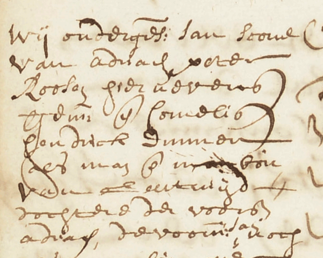 |
| 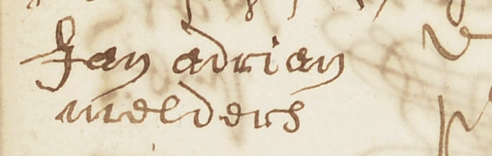 |
Twee achternamen, één persoon: "Jan soone van Adriaen Peter Roosen" (het
fragment boven) tekent op 9 september 1699 enkele regels lager met "Jan Adriaen Melders".
|
Jan Adriaen Meulders woonende tot Huijckelum huurt op 5 feb 1691 een stede grond met huis voor zes jaar van Franck Lambert Brocken.38 De pachtsom bedraagt 20 gulden en negen zakken koren. Waarschijnlijk is dit het jaarlijks verschuldigde bedrag. Als tweede huurconditie belooft Jan jaarlijks het rieten dak van het huis te laten dekken: ende sal mede den huerder alle jaer moeten decken, hondert steen goet gelecht stroy, den decker cost ende dranck te geven met syne dachgelden, mits de dachgelden sullen gecoort werden. Hij tekent met de naam Jan Adriaen Muelders.
| 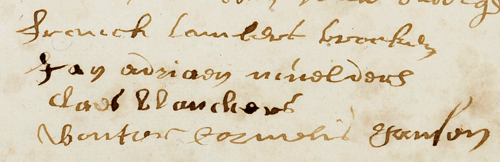 |
De handtekeningen onder de huurakte uit 1691. Franck Lambert Brocken is eigenaar, Claes Blanckers en Wouter Cornelis Jansen zijn getuigen. |
In de jaren hierna blijkt huurbaas Franck Lambert Brocken in augustus 1693 als borgemeester van Berkel te zijn gegijzeld en meegevoerd door Franse troepen "die tot Hamont en Briel waren gecomen om de Meyerye onder contributie te setten off inde assche te leggen". Hij werd als "ostagier" vastgehouden, "eerst op 't casteel van Namen ende naderhandt opt casteel van Dinant en Sedan". In de archiefstukken is te lezen dat Brocken
met twaalf andere is comen te escapperen ende op den derden kerstdach vanden jare 1696 werderom op sijne plaatste van Berckel is gearriveert
Brocken poogt na terugkomst geleden schade te verhalen op de Staten-Generaal. Het dorp Berkel had hem tijdens zijn gevangenschap eerst onderhouden met levensmiddelen "maar naderhandt hare handen gesloten, soo dat des suppliants huysvrouwe daardoor alle sijne goederen heeft moeten beswaren, met opgenome penningen, waardoor sij haar geruineert hebben ende nu met vrouwe en kinderen inde uyterste miserie is gecomen".
Bron: Dorpsbestuur Berkel inv.nr. 692, f. 1.
Berkel, maar ook Heukelom en Enschot hadden zich ingespannen om hem vrij te krijgen. In 1693, kort na de gijzeling, machtigen Jan Adriaan Mulders en vijf andere ingesetenen en ge-erffden van Heuckelum borgemeester Frans Adriaan Bucken en zetter Adriaan van Baast om Franck Lambert Brocken, die op het casteel van Namen ofte onder den troupen van sijne connicklijcke majesteyt van Vranckrijck gehouden werd, vrij te kopen tot laste van de gemeente van Heuckelum. De ingezetenen hadden hiertoe 1500 gulden geleend van Anthony de Hees, burger van 's-Hertogenbosch.39
Tijdens de Negenjarige Oorlog met Frankrijk (1688-1697) werden wel meer inwoners van de streek als gijzelaar door troepen van de vijand gevangen genomen. Bartel van Esch, borgemeester van Oisterwijk in 1693 en 1704 en een zwager van Jan Adriaan Mulders, had van 6 augustus 1693 tot 2 november 1697 als gijzelaar in Frankrijk gevangen gezeten.40
De hoge losgelden drukten zwaar op de dorpsfinanciën, een situatie die nog eens werd verergerd door de regelmatige inkwartiering van kleine troepeneenheden. In september 1683 streek een half regiment van Staatse troepen neer in Enschot. De borgemeester vorderde onder druk een aantal voerlieden om de soldaten naar Arendonk te transporteren. Heukelom moest in mei 1690 het regiment van de prins van Saksen tijdelijk onderdak bieden. Een maand later droeg het Staats bewind alle dorpen in het Kwartier Oisterwijk op om werklieden en transport te leveren voor werkzaamheden in Eindhoven. De borgemeesters van Heukelom sloten leningen af om deze kosten te kunnen betalen. Nog in 1770 betaalden de inwoners van het dorp rente en aflossingen voor schulden gemaakt in de laatste decennia van de 17de eeuw.
De rekening die Jan Adriaen Roosen als borgemeester van Heukelom in februari 1690 inleverde bij de belastingontvanger van het Kwartier van Oisterwijk, is bewaard gebleven. Op het eerste gezicht is daarin nog geen sprake van een door oorlog sterk uitgeputte dorpskas. Mulders sluit 1689 af met een positief saldo van 92 gulden 16½ stuiver. Maar vervolgens trekt de ontvanger daar in zijn naschrift weer 28 gulden 10 stuiver 12 penning van af: achterstallige contributies aan de Fransen, beede, verponding en andere openstaande schulden van het dorp. Op 21 sep 1700 verklaart Jan Janssen van Esch, borgemeester van Heukelom, nog 12 gulden en 15 stuivers ontvangen te hebben van Jan Adriaan Mulders, gewezen borgemeester van Huyclom, die het bedrag nog onder zich had.
De enige noemenswaardige gebeurtenis tijdens Mulders' jaar als borgemeester is de gedwongen verkoop van een stuk land van 10 lopens in Heukelom. De Raad van State had bij resolutie van 21 juli 1689 beslag laten leggen op dit perceel wegens een belastingschuld van eigenaar Adriaen Willem Coij. De verkoop aan Franck Lambert Elis Brocken brengt 171 gulden in het dorpslaatje, maar de afwikkeling van deze affaire kost de gemeente toch nog 78 gulden 3½ stuiver, merendeels deurwaarder-, en veilingkosten.41
In 1698 wordt Jan Adriaen Mulders genoemd als pachter van de Galge tienden onder Heukelom. Hij betaalt hiervoor 26 zakken rogge aan de Eerwaarste heer Prelaet van de abdij Sint Geertruid te Leuven, als eigenaar van tienden onder Udenhout, Berkel en Heukelom. Hendrick Emmen en Cornelis Hendrick Emmen stonden hiervoor borg.42 De Galge tienden zullen we moeten zoeken in de buurt van het Galge ven, dat ten zuiden van de Aa of Voorste Stroom ligt. Dit niet in cultuur gebrachte gebied bestond uit heide- en vengebieden die behoorden tot de Heukelomse gemeint, gemeenschappelijke graasgronden van de inwoners van Heukelom.

|
Verklaring dat Jan Adriaen Mulders op 14 januari 1699 voor schepenen van Oisterwijk de eed heeft afgelegd als borgemeester van Entschot. Zijn collega in Berkel was Cornelis Aert Hamers, die in Heukelom heette Willem Wouter Wagemakers.
|
Op woensdag 10 januari 1703 legt Jan Adriaen Mulders in de raadkamer van Oisterwijk bij Abraham van Rotterdam, stadhouder van het Kwartier van Oisterwijk, en "ten overstaen van alle de schepenen uytgesondert Lippens" de eed af als belastingzetter van Enschot voor het lopende jaar (RO 15, scan 72). Op 14 januari 1705 en 14 januari 1711 legt hij dezelfde eed nog eens af (RO 15, scan 113 en scan 281).
Een akte gedateerd 30 april 1714 vermeldt Jan Adriaan Mulders als ingezetene van Enschot. Met andere inwoners van Enschot en Heukelom doet hij bij de schepenen van Oisterwijk verslag van de miserabele omstandigheden waarin de boeren uit beide dorpen verkeren. Door de nattichheyt des somers des voorleden jaers hadden alle wei- en heilanden onder water gestaan, zodat daardoor het gras onbruyckbaer en het hoij soo vermindert en verargert is geweest, dat de boeren kampten met een gebrek aan veevoer. Zodanig zelfs, dat verschijdene paerden en een menichte van hoorn- en andere beesten daer van zijn gestorven. Met de bouwlanden was het niet veel beter gesteld: het gewasch der ackerlanden is soo slecht geweest dat de rogge die dit jaer gesaeyt is voor de helft niet can opcomen ofte blijven groeyen.43
Deze vermelding sluit mooi aan bij informatie uit de huwelijksakten van Willem en Agnes Jan Mulders. Daarin wordt Enschot genoemd als hun geboorteplaats. Jan moet
rond 1697, het jaar waarin zijn huurcontract met Brocken afliep, naar dit naburige dorp zijn verhuisd. De doopregisters van de parochie Enschot zijn helaas niet bewaard gebleven.
Getrouwd Oisterwijk 26 jan 1687 met
Ten tweede male gehuwd Oisterwijk 13 mei 1696 met
De parochieregisters van Moergestel vermelden dat op 28 mei 1719 aldaar is begraven 'Joannes Mulders maritatus'.
- SA 342, f.185
- SA 316, f.28
- SA 341
- SA 311, f.358v-359
- SA 341
Kinderen uit het eerste huwelijk:
- Maria Jan Arien Roosen
Gedoopt Oisterwijk 14 okt 1687 (GAT, DTB-registers Oisterwijk, inv.nr. 6,f.118r). Doopgetuigen: Bartholomeus van Esch & Lijsbeth Adriaan Roosen - Gijsbert Jan Adriaan Roosen
Gedoopt Oisterwijk 23 aug 1688 (GAT, DTB-registers Oisterwijk, inv.nr. 6,f.125r).
Getuigen: Petrus Henricus & Elisabeth Walterus Petrus. Moeder heet Agnes Adriani van Esch. - Adriaan Joannes Adriaan Roosen
Gedoopt Oisterwijk 31 maart 1690 (GAT, DTB-registers Oisterwijk, inv.nr.8,f.1r). Getuigen: Adriaan Peter Roosen & Ida Dries Stockermans. - Joannes Jan Arien
Gedoopt Oisterwijk 25 okt 1691 (GAT, DTB-registers Oisterwijk, inv.nr.7,f.15r). Getuigen: Cornelis Hendrix Emmen & Anna Ariaens. Moeder heet Agnes Jansen.Op 27 dec 1723 wordt te Moergestel op het kerkhof begraven de ongehuwde Jan Jans Mulders ("solitus sepultus est in caemiterio cum ex equiis cantatis") ; ook vermeld in het protestants begraafboek voor dezelfde dag ("Jan Jans Mulders, jongeman").
- Maria Joannes Ariens
Gedoopt Oisterwijk 26 dec 1693 (GAT, DTB-registers Oisterwijk, inv.nr.7,f.59r). Doopgetuigen: Adriaan Peeters & Ida Bertens van Ees. Moeder heet Agnes van Ees.
Uit het tweede huwelijk volgden:
-
Adriaan Jan Mulders volgt VI-a
- Willem Jan Mulders volgt VI-b
- Agnes Jan Mulders
Gedoopt te Enschot, kinderloos begraven te Moergestel op 20 feb 1767. Getrouwd 4 feb 1725 te Moergestel met Adriaan Willem de Louw, gedoopt Moergestel 5 nov 1696, zoon van Willem Adriaan de Louw & Isabella Jacob Mutsaerts; begraven Moergestel 28 nov 1727. Getuigen bij het huwelijk: Petrus Gerardus Hoevenaers & Adrianus Jan Mulders. De eerste huwelijksgetuige is nader te identificeren: Peter Gerard Hoevenaers trouwde te Moergestel 18 apr 1689 met Cornelia Jacob Claessen Mutsaerts. Hij moet een oom van de bruidegom zijn geweest.Volgens een Transportakte van 29 sep 1766 was Adriaen Jan Mulders, Schepen en Wette alhier een vollen broeder van Agnes Mulders, wat impliceert dat er ook sprake was van halfzusters dan wel halfbroers.45 De laatste wilsbeschikking van Adriaen Willem de Louw werd voor schepenen op 8 dec 1727 vastgelegd.46 Volgens een Transportakte gedateerd 9 maart 1728 deed Aghneeta Willem Mulders afstand van het vijfzesde deel in de goederen van Willem de Louw en Isabella Jacob Mutsaerts, hetgeen door het afsterven van haar man haar was toegekomen. Dit ten behoeve van Margriet Adriaan de Louw, wonende te Antwerpen, en Cornelia Jacob Mutsaerts, wonende te Moergestel.47 Op 2 februari 1729 werd Agneeta Jan Mulders door Goyert van Ostaden voor de Schepenbank gedaagd. De weduwe moest de kosten van een taxatie door Schepenen nog voldoen.48
- Maria Jan Mulders
Begraven Moergestel op 8 april 1740. Getrouwd Oisterwijk 28 mei 1730 met Jan Peter van Baest. Hij kwam uit Berkel en overleed te Oisterwijk op 9 juli 1749, zijn begrafenis volgde op 11 juli. Volgens een Akte van Indemniteit zijn beide huwelijkspartners per 2 april 1732 van Heukelom naar Moergestel verhuisd. In een akte van 8 april 1740 voor Schepenen van Moergestel werd Willem Jan Mulders tot toeziend voogd aangesteld over de drie onmondige kinderen van de kort daarvoor overleden Maria Jan Mulders.49Jan Peter van Baest hertrouwde 6 mei 1741 te Moergestel met Joanna Jan van Ginhoven. Getuigen bij het huwelijk: Willem Mulders en Agnes Mulders. Wegens ziekte van de bruidegom werd het huwelijk ten huize van Van Baest voltrokken. Jenneke Jan van Ginhoven, weduwe Jan van Baest, trouwt voor schepenen van Moergestel op 30 nov 1749 met Willem Jacobus van Roij.
Op 1 mei 1765 verkopen Adriaen Mulders, Jacobus Mulders, Peter Jan van Baest, Peter Peters van Baest, Willem Jan van Ermen getrouwd met Maria Jan van Baest en Johannis van Baest, "hun alle fort en sterk maekende voor den absenten Wouter van Biljouw", een stuk "soo landt, weij als dries aen malkanderen", groot elfenhalf lopens, gelegen onder Oisterwijk te Heukelom, ter plaatse genaamd Hoog-Heukelom; en nog een perceeltje akkerland van een lopens en zestig roeden gelegen als voor, "haer aengekoomen bij successie van hunne ouders en vrouwe ouders respectieve soo sij verklaerden", aan Jan Nicolaes Elings "wonende tot Huijclom". De akte somt de lasten op die op de percelen rusten, waarna de verkopers verklaren dat het om vrij allodiaal goed gaat, en geen leengoed. Elings betaalt 38 gulden voor de grond, 150-12-8 voor de lasten, tezamen 188-12-8. // Aanvulling: Wouter van Biljouw is gedoopt te Oisterwijk 30 dec 1727. Zijn ouders Adriaan Goossen van Biljouw en Jenneke Peter van Baast waren op 22 nov 1722 (RK) te Oisterwijk getrouwd.
Bron: RO 557, Protocol van transporten 1765-1769, f. 23v-25v met handtekeningen van Adriaan Mulders en Jacobus Mulders.Op 31 mei 1769 verkopen Peter Jan van Baest, Johannis Jan van Baest en Willem Jan van Ermen in huwelijk hebbende Maria Jan van Baast, een stuk weiveld van vier lopens gelegen te Heukelom, hun aangekomen bij successie van hun ouders, aan Adriaen Gijsbert van den Boer voor 233 gulden.
Bron: RO 558, Protocol van transporten 1769-1771, f. 18-19.Uit dit huwelijk:
- Johannes Jan van Baest
Gedoopt Oisterwijk 22 okt 1731, moeder heet Maria Meulders. Doopgetuigen: Adriaan Meulders & Aldegondis van Irsel. - Maria Jan van Baest (1732-1786)
Gedoopt Moergestel 16 nov 1732, begraven Enschot 5 feb 1786 als "vidua Wilhelmi van Ermen". Moeder heet bij de doop Maria Joanna Muijlders. Doopgetuigen: Agnes Jan Muijlders & Peter van Baest. Getrouwd (NH) Oisterwijk 19 okt 1760 met Willem Jan van Ermen, jongeman geboren tot Enschot, "beide wonende tot Enschot". Hij is begraven (RK) te Enschot 16 maart 1782, "maritus Maria van Baesten".Uit dit huwelijk:
- Jan van Ermen
Gedoopt Enschot (RK) 7 sep 1761, gestorven Tilburg (Hoeven) op 22 apr 1817, oud 57 jaren. Doopgetuigen: Peter Jan van Baasten en Maria Jan van Ermen. - Adriaan van Ermen
Gedoopt Enschot (RK) 30 sep 1762. Doopgetuigen: Jan van Ermen en Joanna van Ermen. - Cornelia van Ermen
Gedoopt Enschot (RK) 18 sep 1763, aldaar begraven 12 feb 1767. Doopgetuigen: Jan van Ermen en Joanna van Geenhove.
- Jan van Ermen
- Peter Jan van Baest
Gedoopt Moergestel 5 jan 1734, moeder heet Maria Joanna Muijlders. Doopgetuigen: Elisabeth van Baest & Willem Muijlders.
- Johannes Jan van Baest
- W.H.Th. Knippenberg, 'Het Gildezilver in de Kleine Meijerij: 7 - Sint Jorisgilde te Moergestel,' De Kleine Meijerij 27 (1976), p.54-55.
- SA 311, f.274-279.
- SA 341, f.277-278
- RO 555, f.69.
- SA 341.
- SA 312, f.152-153
- SA 315, f.170v en 344, f.96v. Carel van den Eijnden was op 11 sep 1743 door de Raad van Brabant gevonnist wegens een schuld van 2514 gulden plus 20 jaar rente. Op 7 aug 1745 werd beslag gelegd op alle onroerende goederen en effecten die hij bezat als echtgenoot van Elisabeth Bijnen, weduwe en erfgename van procureur Adriaan van Vaarlen. Carel werd op 26 nov 1745 in de kerk van Moergestel begraven.
- SA 346, f.51-54, 6 juli 1767; SA 318, f.26v-33r, 30 januari 1770.
Generatie VI
VI‑a Adriaan Jan Mulders zoon van V‑aVolgens zijn huwelijksakte geboren in Heukelom. Gedoopt Oisterwijk 28 feb 1697 als zoon van Joannes Arien Mulders en Joanna Denysse van der Laet. Doopgetuigen: Denis van der Lait & Maria Denys van den Boer. Begraven te Moergestel 8 aug 1767.
Schepen van Moergestel 1742-43; 1750-57 en 1763-67. Collecteur der verponding voor het jaar 1732. Belastingzetter 1736, 1744-45 en 1748. Borgemeester van De Heijzen en De Heuvel in 1739. Gezworene van De Heijzen en De Heuvel in 1766.
Adriaan Mulders behoorde dankzij zijn grondbezit tot de gegoede ingezetenen van Moergestel. Hij zat meerdere jaren in de schepenbank, twee zoons werden eveneens schepen - van wie één zelfs president - en zijn jongste zoon kon in 1776 gaan studeren in Leuven. Aangezien de tak van zijn broer Willem vrijwel zeker in 1872 is uitgestorven, geldt Adriaan als stamvader van het geslacht Mulders. Hij pacht een boerderij in het gehucht Vinkenberg onder Moergestel van zijn zuster Agnes, de weduwe Adriaen de Louw. Ergens tussen 1751 en 1757 komt hij in het bezit van twee boerderijen in De Heizen, waarvan hij er een bewoont. Zoon Norbert erft dit huis.
 |
Deze handtekening zet Adriaen op 20 maart 1726 onder de akte waarin de boedelverdeling van zijn schoonvaders nalatenschap is geregistreerd. Bron: SA 551,f.143r. |
Waarschijnlijk is Adriaen identiek met de initiatiefnemer van het Dootboeck, uitgeschreven den 2 January 1736 door Adriaen Mulders, een lijst met 204 namen van leden van het Sint Jorisgilde te Moergestel. Een ander werk uit de collectie van het Gilde is het Dootboeck uijtgescreven 1774 door Heer Smittens, pastoor der gemeente van Moergestel, waarin een koningslijst teruggaat tot in de 16e eeuw. Deze lijst vermeldt Adrianus Mulders koning, koning van het handboogschuttersgilde in een onbekend jaar voor 1774. Het koningsschild van deze Adrianus is bewaard gebleven.50
Te Moergestel gehuwd 3 feb. 1726 met
Volgens een borgbrief, op 2 oktober 1730 afgegeven door schepenen van Oisterwijk, zijn Adrianus Johannes Mulders en Margriet Dionisius van Vessum vetrokken van Heukelom naar Moergestel.53 Naar het zich laat aanzien een formaliteit, Adriaen pachtte zoals we zagen al sinds 1726 een huis in Moergestel. Op 17 december 1731 verklaart Jan Janssen Taet, Armmeester over het jaar 1731, ontvangen te hebben van Adriaan Mulders, in huwelijk hebbende Margriet van Vessum, een cappitaelen somme van vijftigh guldens. Op 9 augustus 1722 had Peeter van Vessum het bedrag toegezegd.54
Op 31 januari 1732 draagt Adriaan een schuur, met den gront ende de helft in den hoff met een clijnweyken achter Arnout Lombaers hoff, groot ontrent samen een loopen saet, gelegen binnen dese heerlijkheyt van Moergestel in den gehugten van de Heysen op den Winckenbergh, aldaar de gemeene straet oist, den cooper west en suyt, en erfgenamen van Dirk Jacobs noort over aan Willem Jan Mulders, sijne broer. De schuur kwam uit de erfenis van Denis van Vessum.55
In 1736 bewoont Adriaen Mulders een huis in De Heizen dat eigendom is zijn zuster Agnes, de weduwe Adriaan de Louw; Willem Mulders daarentegen bewoont zijn eigen huis, eveneens in De Heizen. In 1741 en 1746 is deze situatie ongewijzigd, maar Willem en Adriaen zijn daarnaast nog eigenaar van een derde huis, waarin Wilem Claessen woont. In 1751 is de enige wijziging dat Jacobus Mulders nu in plaats van zijn vader Willem mede-eigenaar is van het huis bewoond door Claessen. (Dorpsbestuur Moergestel, inv.nr. 72, scan 8 en 73, scan 10, 74, scan 8, 75, scan 12).
In 1756 is Adriaen Mulders eigenaar van twee huizen in De Heizen. De een bewoont hij zelf, in de ander woont Peeter Vrints. Jacobus Willem Mulders is eigenaar van een huis in De Heizen bewoond door Jan Jansse de Cort (Dorpsbestuur Moergestel, inv.nr. 76, scan 10).
Adriaan Mulders, "regerent schepen", gaat op 9 april 1757 een erfdeling aan met Jacobus, zoon van Willem Jan Mulders. Adriaan verkrijgt een huys, schuer, schop en bakhuys op de Winkenbergh, gekomen van Carel van den Eijnde, aldaar oost en suyt een straatje, west de gemeene straat, noort de erfgenamen Maria Anna Baten naast nog enkele percelen grond. Op 17 november blijkt dat er eenige onminnelijkheede waeren gereesen, de welke te gevoelijkes sijn geweest door het na bloet verwantschap waermede sij malcanderen sijn bestaende. Beide partijen komen er vervolgens toch uit: Jacobus draagt in eigendom over aan Adriaan sekere huys, schuur, schop en backhuys met den hof en hofke daer aan gelegen alhier op den Winckenbergh bij den eerste comparant [Adriaan Mulders] bewoont wordende, oost de straat, west en noort de kinderen Peter Walschots en zuid Denis de Cort.56
De schepenen van Moergestel registreren dat Jacobus Mulders op 17 nov 1757 transporteert aan Adriaen Mulders 'een huijs, schuur, hof en aengelag, gestaen en gelegen alhier' voor de som van vierhonderd gulden; hierover is de veertigste penning verschuldigd (SA 667,f.134).
Op 6 juli 1767 leggen Adriaen en zijn vrouw een laatste wilsbeschikking vast voor schepenen Jacobus van Kelckhoven en Johannis Timmermans. Wegens ziekte van Adriaen vindt de ondertekening van de akte bij hem thuis in de Heizen plaats. De echtelieden benoemen elkaar tot universeel erfgenaam. Nog geen maand later wordt Adriaen begraven. De erfenis wordt een half jaar voor de dood van Margaretha begin 1770 bij loting verdeeld onder de nog levende kinderen: Denis, Norbert, Francis, Adriaantje, Cornelia, Johanna en de minderjarige Jan.57 Tot de boedel behoren dan vier huizen: drie op de Vinkenberg en een aan de Krijtestraat.
Uit dit huwelijk:
- Helena Mulders
Gedoopt (RK) Moergestel 21 dec 1726 als dochter van 'Adriani Joannis Mulders ex Heuckelom et Margarethe Dionisii van Vessum'. Doopgetuigen: Wilhelmus Joannes Mulders (absent) & Maria Dionijsius van Vessem. Op 8 okt 1730 wordt te Moergestel begraven 'een kint van Adriaen Mulders'. Mogelijk is dit Helena, de doopnaam blijft onvermeld. - Jan Mulders
Gedoopt Moergestel 18 sep 1728, aldaar ongetrouwd begraven 30 mei 1749. Doopgetuigen: Emmerentiana Petrus van de Pol namens Joannis Gasparis van de Mierde en Joanna Dionijsius van de Laet. - Adriaantje Mulders
Gedoopt Moergestel 19 aug 1730, aldaar begraven 31 mei 1788. Doopgetuigen: Agnes Jan Muijlders & Wilhelmus Jan Muijlders. Getrouwd te Moergestel 26 mei 1754 (RK) met Peter Cornelis Vriens, Schepen van Moergestel 1771-1781; Borgemeester 1784. Getuigen: Adrianus Meulders & Agenta de Lauw. Vriens deelde 1770 in de ouderlijke erfenis van zijn vrouw. Hem viel onder meer toe een huys, schuur, schop met den hoff en aengelegen erve, groot 3 el, gestaen en gelegen op den Vinkenberg, aldaar suyd en west een straat, oost Margo Baten en noort de gemeene straat. - Cornelia Mulders
Gedoopt Moergestel 8 feb 1733, aldaar begraven 11 nov 1785. Doopgetuigen: Joannes Petrus van Baest & Maria Willem Muijlders. Getrouwd te Moergestel 15 feb 1756 (RK) met Peter Thomas Cuijpers, gedoopt te Moergestel op 9 september 1733, aldaar overleden op 27 december 1790, zoon van Thomas Arnoldus Cuijpers en Maria Jan van Iersel. Getuigen: Thomas Cuijpers & Dionysius Meulders. Uit dit huwelijk worden negen kinderen geboren. - Johanna Mulders
Gedoopt Moergestel 19 juni 1735, aldaar begraven 25 juni 1798. Doopteguigen: Anges Muijlders en Wilhelmus Muijlders. Getrouwd te Moergestel 4 juli 1762 (RK en schepenen) met Arnoldus van de Agte, Borgemeester voor het jaar 1783. Getuigen bij het huwelijk: Dionysius Meulders & Joannes van der Achter. Arnoldus verkreeg met het 6e lot uit de erfenis van zijn schoonouders een huys, schuur en schop in de Krijtestraat met den hoff, groot 1 el en 2 roeden. - Denis Mulders volgt VII-a
- Andries Mulders volgt VII-b
- Francis Mulders
Gedoopt Moergestel 26 aug 1741, aldaar begraven 22 april 1744. Verdronken. Doopgetuigen: Maria Willem Meulders en Jacobus Emmen. - Norbert Mulders volgt VII-c
- Francis Mulders volgt VII-d
- Jan Mulders
Gedoopt Moergestel 19 juli 1749, overleden Middelbeers 27 aug 1818. Ingeschreven aan de universiteit van Leuven 1776. Pastoor van Hedel van 1798 tot 1809. Opvolger van de op 14 juni 1809 gestorven Martinus van Dijk als pastoor van Middelbeers. Het inschrijfboek van de universiteit Leuven vermeldt hem als volgt:Joannes Mulders ex Moergestel. Discessit Antverpiam 1781 et translatus ad pastoratum de Middelbeers, successor Reverendi Domini Martini van Dijk Astensis, qui perfunctus cura spirituali dictae parochiae ab anno 1775, obiit 14 Julii 1809, scripto in rem Seminarii supremis tabulis legato 100 flor. - Reverendus Dominus Mulders obiit Pastor in Middel-Beers 26 Aug. 1818.58
Volgens de overlijdensakte is de sterfdatum niet 26 maar 27 augustus. Jan deelt in 1770 in de ouderlijke erfenis. Hem valt onder meer toe 'een huys met kool en kruythof, gestaen en gelegen op den Vinkenberg' van 30 roeden, oost en west de straat, zuid Willem van Gestel en noord Gerard Habraken.
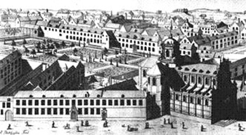 Afbeelding 8 Het jezuïtencollege te Leuven met Sint-Michielskerk op een prent uit 1725. De gebouwen verleenden onderdak aan de Facultas Sacrae Theologiae, opgericht in 1432. De faculteit zou tot de sluiting door de Fransen in 1797 vele studenten trekken uit Staats-Brabant. Het jezuïtencomplex werd in 1778 omgedoopt tot Maria-Theresiacollege.
- De Brabantse Leeuw 8 (1959), p.20.
- SA 341, 27 okt 1731.
- SA 312, f.152-153.
- SA 341, de dato 29 juni 1731
VI-b
Willem Jan Mulders
zoon van V-a
Volgens zijn huwelijksakte geboren te Enschot, begraven te Moergestel 1 mei 1748. Een exacte doopdatum is niet
te achterhalen, de doopregisters van de parochie St. Caecilia te Enschot zijn
niet bewaard gebleven.
Borgemeester van De Heijzen en De Heuvel 1726 en 1742; Collecteur der Conincx Beeden 1734-1735. De eerste benoeming tot borgemeester is bijzonder, omdat Willem niet bij naam wordt genoemd. Het dorpsbestuur van Moergestel had de nalatenschap van Jan Adriaen Mulders aangewezen als borg voor de financiële dorpshuishouding, en liet in het midden wie van diens zoons de functie daadwerkelijk zou gaan vervullen. In een latere vergadering van het dorpsbestuur (6 februari 1726) blijkt dat het ondankbare baantje aan Willem was toebedeeld.
Willem woonde tot oktober 1731 in een 'steede' in de herdgang Kerkeinde
(Moergestel). Met de bijbehorende zaai- en weilanden huurde hij dit huis van
Annemarie Baten en haar moeder Geertruy Sleegers, weduwe Goyert Baten.59
Een Transportakte uit 1732 noemt Willem Jan Mulders expliciet als broer van Adriaen Jan Mulders, man ende momboir van Margriet Denys van Vessum.
Adriaan verkocht hem volgens deze akte een schuur met de helft van een perceel
grond uit de erfenis van Denis van Vessem, gelegen in de Heijzen op de Winckenbergh.60
 |
Met deze handtekening bezegelt Willem Jan Mulders op 12 juli 1740 de aankoop voor 108 gulden van een perceel weiland genaamd "Claas Hendricx voorste beemdeken" te Moergestel. Verkopers zijn Elisabet en Marie Glavimans. Bron: RA 313,f.101v-102r. |
Getrouwd 12 mei 1726 te Moergestel met Adriana Jan Timmermans (uit Middelbeers; begraven Moergestel op 19 december 1730). Getuigen bij het huwelijk: Adriaan Jan Mulders, Daniel Aert van der Achtert, Joannes Antonius de Bresser en Maria Aert de Louw (die dezelfde dag trouwden). Na de dood van zijn vrouw worden Jacobus Timmermans en Adriaan Jan Mulders tot respectievelijk momber en toeziender beëdigd over de twee kinderen uit dit huwelijk, waarvan het jongste twee jaar oud is.61
Vervolgens 8 juli 1731 te Moergestel getrouwd met
Uit het eerste huwelijk:
- Joannes Mulders
Gedoopt Moergestel 14 apr 1727, aldaar begraven 3 feb 1736. Doopgetuigen: Jacob Jan Timmermans & Johanna Denis van der Laet - Jacobus Mulders volgt VII-e
- Joanna Maria Mulders
Gedoopt Moergestel 12 nov 1730, aldaar begraven 14 nov 1730 als 'een craemkintje van Willem Mulders'.
Uit het derde huwelijk volgden:
- Adriaentje Mulders
Gedoopt Moergestel 15 maart 1746, aldaar begraven 3 juni 1746. Doopgetuigen: Jacobus Meulders & Agnes Meulders. - Adrianus Mulders
Gedoopt Moergestel 17 mei 1747, aldaar begraven 1 sep 1747. - Wilhelma Mulders
Gedoopt Moergestel 27 sep 1748. Doopgetuigen: Jacobus Meulders & Antonia van Irsel. Wellicht identiek met een niet nader genoemd 'kint van de weduwe Willem Mulders' begraven Moergestel 27 dec 1748.
- RANB, Raad en rentmeester generaal der domeinen, inv.nr.22.
- C. Prinsen, 'Het geschilderd portret van Adriaan Mulders uit Moergestel,' in De kleine Meijerij 41 nummer 3 (1990) 59-63. Zie ook A. Schillings, Matricule de l'université de Louvain (Brussel 1963) voor de inschrijving in Leuven.
Generatie VII
VII-a
Denis Mulders
zoon van VI-a
Gedoopt Moergestel 28 apr 1737, aldaar begraven 11 juli 1774. Doopgetuigen:
Wilhelmus Muijlders & Agnes Joannis Muijlders. Armmeester 1770. Een akte uit
1771 in het archief van de rentmeester generaal der domeinen vermeldt een boer
uit de heerlijkheid Moergestel genaamd Denis Mulders, die eigenmachtig een draaiboom
heeft laten aanbrengen met een slot, waar hij bovendien van de passanten weggeld
vordert. Over deze zaak zijn attestaties verschenen van de drossaard en regenten
van de heerlijkheid, alsmede van de stadhouder van het kwartier Oisterwijk.
Na een gedwongen afbraak van de draaiboom heeft hij hem toch weer opgebouwd
en wederom weggeld geheven.62
Denis deelt in 1770 in de ouderlijke erfenis. Door loting komt hem drie percelen grond toe, inclusief De Ossewijde van 4 el en 34 roeden, en de helft in nog twee percelen.
Getrouwd Moergestel 24 mei 1767 met Johanna Maria van Rooij (Jennemie), gedoopt te Moergestel 23 maart 1745, dochter van Jan van Rooij & Adriana Mutsaerts. Jennemie hertrouwde na de dood van haar man te Moergestel 26 nov 1775 met Joannes Ketelaers.Uit dit huwelijk:
- Adriaan Mulders
Gedoopt Moergestel 13 juni 1768, aldaar overleden 22 dec. 1813). Doopgetuigen: Joannes van Roij & Margareta Adrianus Meulders. Schepen van Moergestel 31 maart 1803 tot 1813. - Helena Mulders
Gedoopt Moergestel 12 aug 1770. - Jan Mulders volgt
VIII-a
- Andries Mulders volgt VIII-b
VII-b
Andries Mulders
zoon van VI-a
Gedoopt Moergestel 14 sep 1739, aldaar begraven 27 juli 1793. Getrouwd
Moergestel 20 nov 1769 met Johanna Maria Marcelis, geboren te Hilvarenbeek. Getuigen: Willem Ketelaars (voogd van de bruid) en Joannes Meulders.
| 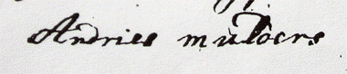 |
30 jan 1770: de handtekening van Andries Mulders. |
Uit dit huwelijk:
- Adriaan Mulders
Gedoopt Moergestel 14 november 1770, overleden aan griep Nijmegen 28 februari 1837. Pastoor van Eersel.
 |
| Afbeelding 9 Het beschadigde portret van Adriaan Mulders (1770-1837) |
Begon 1788 aan de Latijns-Griekse studie in Tongerlo, filosofie vanaf 1793. In 1794 aan de universiteit van Leuven ingeschreven bij de minorennes porcenses. Men doorliep deze pedagogie Het Varken van de Artes faculteit alvorens toegang te krijgen tot hogere faculteiten zoals kerkelijk recht en theologie. Ingetreden bij de Norbertijnen in Tongerloo in 1795 onder de klooosternaam Gerardus. Het klooster werd met geweld door de Fransen gesloten in december 1796. Begonnen met de studie theologie in Leuven rond Pasen 1797, maar ook de universiteit werd in september van dat jaar gesloten. Na een verblijf van zes maanden in Moergestel in mei 1798 opnieuw begonnen met de studie theologie in 's-Hertogenbosch. Priester gewijd te Emmerik 30 november 1799; benoemd tot kapelaan van Deurne 1800-1811; Deservitor van Eersel 1811-1814; Pastoor van Eersel 1814-1817. Hij begon in 1817 in Parijs aan zijn noviciaat bij de Jezuïten-orde; Vice-praeses Klein Seminarie Culemborg 1818-1821; Kapelaan van de Regulierenkerk in Nijmegen 1821-1837.63
 |
Afbeelding 10
De norbertijner abdij van Tongerlo in de
Belgische Kempen op een 17e eeuwse prent. De abdij verkreeg in 1334 het
patronaatsrecht over Moergestel, en zou tot 1838 pastoors aan het dorp
blijven leveren.
|
- Marcelis Mulders volgt VIII-c
- Denis Mulders
Gedoopt Moergestel 28 juni 1775 (Norbert Mulders en Cornelia Joannis Hobbelen namens Joanna Marcelis) - Jan Mulders
Gedoopt Moergestel 20 juni 1777 (Andreas Mulders namens Joannis Mulders; Catharina de Bresser namens Joanna Maria Vingerhoets) - Cornelis Mulders
Gedoopt Moergestel 1 juni 1781) - Jan Mulders
Gedoopt Moergestel 8 feb 1783) - Johanne Maria Mulders
| 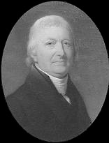 |
Johannes Hendricus van der Palm (1763-1840), van 8 dec 1801 tot 2 mei 1805 lid en voorzitter van de Raad voor Binnenlandse Zaken, belast met onderwijs en kerkelijke aangelegenheden. |
-
De Kleine Meijerij 27 (1976), p.54.
- Ibidem, 33 (1982), p.94. Zie ook de originele akte in SA 14, f.100v-101v.
- SA 318, f.26v-33r.
- RANB, 1375, vonnis 10990. In Bles herkennen we natuurlijk de
toenmalige heer van Moergestel. De drie dorpsgenoten zijn Peter van de
Wouw, Adriaan Reynen en Cornelis de Kordt.
VII-c Norbert Mulders zoon van VI-a
Gedoopt Moergestel 24 okt 1743, aldaar overleden 4 nov 1823. Schepen van Moergestel 1787-1790 en 1792-1797; Borgemeester in 1771 over de herdgangen Kerkeijnde en Over 't Water en in 1803 over De Heijzen en De Heuvel; Belastingzetter 1774 en 1782; Armmeester 1778; Kerkmeester 1780. Koning van het Sint Jorisgilde te Moergestel 1788; zijn schild toont een ploeger met ploeg en twee paarden, een bloemenrand en het zilvermerk 'A M' (Adamus van Mierlo).64 Met schepen Simon van Lommel begin 1803 uitgezonden naar de Raad voor Binnenlandse Zaken te Den Haag om te pleiten voor teruggave van de Moergestelse kerk aan de katholieke gemeenschap.65
| 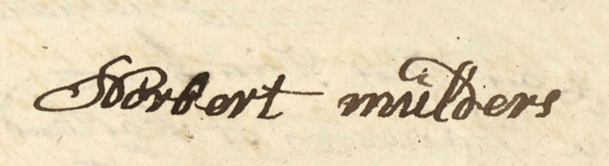 |
Deze handtekening zette Norbert op 30 jan 1770 onder de akte waarin de boedel van zijn ouders werd verdeeld |
Bij de erfdeling van de ouderlijke boedel vielen aan Norbert 20 percelen grond toe, waaronder een huys, schuur met kruyd en koolhoff groot 1 el 5 roeden. Oost: de straat, west en noord: Goyaert Walschots, zuid: Denis de Cort.66 Andere met naam genoemde percelen zijn Het Hoogveld, De Vlasroot, Den Kattendonk en Den Agtersten Blommendaal. Deze laatste drie namen vinden we terug in de erfdeling Denis van Vessem van 1726. Een kadastrale legger uit 1834 geeft 27 percelen met een totale grootte van 12 bunder, 68 roeden, 50 ellen, die op naam staan van de weduwe Norbert Mulders sinds een deling in 1833. De boerderij draagt kadastraal nummer 684, sectie A. Dit perceel is terug te vinden op het minuutplan uit 1832.
 |
De boerderij van de weduwe Norbert Mulders (de vier rood gekleurde gebouwen) op het kadastraal minuutplan 1832. De kaart toont het gehucht Vinkenberg onder Moergestel, met van noord naar zuid de Vinkenbergstraat, rechts van oost naar west de Aboomse straat en links het Lommestraatje. De groene lijn geeft de grens aan tussen secties A -Kerkeind - en D, De Heijzen. Voor invoering van het kadaster werd Vinkenberg meestal tot de Heijsen gerekend. De bovenkant van deze afbeelding wordt tegenwoordig doorsneden door de snelweg A58. De boerderij heeft tegenwoordig het adres Vinkenbergstraat 10, kadastraal perceel nummer 5458, tegenwoordig (2006) toebehorend aan Maria Johanna Norberta Wolfs. In 1832 behoorden de omliggende boerderijen toe aan: de weduwe Adriaan van den Meijdenberg (noorden); de erven Martin van den Biggelaar (zuiden); Denis Perkin (hoek Lommestraatje); Johannes Vriens (overkant Vinkenbergstraat). De familiebanden waren nauw: Perkin was een zoon van Cornelia Denis de Kort en die was weer een achterkleindochter van Denis Wouters van Vessem (zie boven). Detail, klik op de afbeelding voor volledige weergave |
De weduwe was mede-eigenaar in nog eens zes percelen, waaronder twee percelen moeras (no. 557 in de Moergestelse Broek sectie C; en no. 1073 in sectie B). De memorie van successie uit 1824 geeft ook een lijst onroerende goederen die aan Norbert toebehoorden, maar de perceelnummers komen niet overheen met die van het in 1832 ingestelde kadaster.
Op 8 juni 1797 bekent Norbert Mulders met drie andere inwoners van Moergestel ten overstaan van een Bossche notaris dat hij zich neerlegt bij een veroordeling door het Hof van Justitie van Bataafs Brabant. Het viertal belooft in twee termijnen 143 gulden te betalen aan Marcellus Bles als tiendheffer, wegens recht van parate executie en andere approbatie over den niet verpagten oogste van den jaare 1795. Kennelijk hadden ze bij de eerste oogst sinds de inval van de revolutionaire Franse legers in 1794 geweigerd de heerlijke tienden te betalen. Het blijft gissen, maar de verwachting dat de oude feodale orde definitief plaats ging maken voor een wereld van Vrijheid, Gelijkheid en Broederschap, kan een motief zijn geweest voor deze daad van burgelijke ongehoorzaamheid. Of misschien dachten ze er gewoon mee weg te kunnen komen. Hoe dan ook, uit de akte blijkt duidelijk dat Bles er flink werk van maakte om zijn gelijk te krijgen. De betrokken boeren moeten de kosten betalen van een gijzeling, een door Bles ingeschakelde advocaat, een deurwaarder en een voorschot aan zegels: bij elkaar nog eens 241 gulden 11 stuiver.67
Voor schepenen van Moergestel getrouwd 23 mei 1768 — het kerkelijk huwelijk volgt op 24 mei — met Maria Aart (Arnoldus) Cuijpers, die op 29 maart 1770 te Moergestel ten grave wordt gedragen. Getuigen bij het huwelijk: Petrus Vrindts & Arnoldus Thomas Cuijpers.
Hertrouwd te Moergestel op 13 jan 1771 met Antonet Jan Mutsaerts, weduwe van Peter Adriaan van de Pol, dochter van Jan Jacob Mutsaerts bij Maria Goijert de Cort, gedoopt te Moergestel 10 nov 1729 en begraven aldaar op 31 aug 1781. Getuigen bij het huwelijk: Jacobus Mutsaerts & Wilhelmus van de Laeck.
Ten derde maal getrouwd op 11 feb 1787 voor schepenen van Moergestel met Adriana Jacobus van Dijk, dochter van Jacobus Ansems van Dijk en Cornelia Peter van der Sande, geboren te Dun onder Hilvarenbeek, gedoopt te Hilvarenbeek op 17 feb 1764, overleden te Moergestel op 10 aug 1840. Getuigen bij het huwelijk: Thomas Cuijpers & Joannes van de Wouw.
Uit het eerste huwelijk:
- Adriaan
Gedoopt Moergestel 3 mei 1769, aldaar kinderloos overleden 25 sep 1830. Zijn testament is gepasseerd voor notaris David van Kelckhoven 25 aug 1830. Woonde aan het Kerkeinde nummer 4. Getrouwd 26 feb 1797 te Moergestel met Johanna Wolfs (gedoopt Moergestel 23 okt 1771, aldaar begraven 22 okt 1812) dochter van Cornelis Wolfs (1747-1819) & Maria Jacobus Melis. Ten tweede maal gehuwd te Moergestel 14 nov 1813 met Digna Rijnen (gedoopt Moergestel 11 apr 1789) dochter van Adrianus Reijnen & Joanna Marcelis.
Uit het tweede huwelijk volgden:
Uit het derde huwelijk volgden:
- Anthony volgt VIII-f
- Joanna Maria
Gedoopt Moergestel 19 sep 1788. Getrouwd Moergestel 24 april 1814 met Denis Ketelaars (gedoopt Moergestel 5 jan 1785, aldaar overleden 2 feb 1842) zoon van Joannes Ketelaars en Joanna Maria van Rooij. - Cornelia
Gedoopt Moergestel 8 maart 1790, aldaar overleden 1 nov 1868. Getrouwd Moergestel 12 nov 1815 met Jacobus Bierkens (gedoopt Moergestel 25 aug 1769, aldaar op 78-jarige leeftijd overleden 1 okt 1842) zoon van Joannis Aegidius Bierkens en Maria Michiel Antonie (Anthoniusdr) van de Wouw. Cornelia Mulders hertrouwde op 53-jarige leeftijd te Moergestel op 2 nov 1843 met de 25-jarige (!) Cornelis van Laarhoven. De bruidegom wordt vermeld als natuurlijke zoon van Adriana van Laarhoven te Moergestel, geboren aldaar op 24 jan 1818. Van Laarhoven was als schoenmaker werkzaam in Moergestel. Dit verklaart de handtekening onder de huwelijksakte van getuige Josephus van Bommel (1796-1855), schoenmakersbaas en telg uit de bekende fabrikantenfamilie. - Peter Josef volgt VIII-g
- Denis volgt VIII-h
- Margaretha
Gedoopt Moergestel 18 apr. 1796, aldaar overleden 14 sep 1814. - Jacoba
Gedoopt Moergestel 18 dec 1797, op 74-jarige leeftijd overleden te Tilburg op 4 jan 1872. Getrouwd Moergestel 23 feb 1827 met Willem Driessen, zoon van Peter Driessen & Margarita van Mierloo - Francis
Gedoopt Moergestel 23 april 1800. Komt in de memorie van Norbert Mulders uit 1824 niet meer voor. - Adriana
Gedoopt Moergestel 11 juli 1801, aldaar op 39-jarige leeftijd (aldus de akte!) op 3 mei 1845 overleden. Getrouwd Moergestel 3 april 1826 met Cornelis Dekkers, landbouwer, gedoopt Moergestel op 22 april 1793 als zoon van Cornelis Dekkers & Maria Ketelaars. In de huwelijksakte wordt Adriana's leeftijd wél correct opgtekend: 24 jaar. Haar 56-jarige broer Adriaan Mulders, winkelier, treedt op als een van de huwelijksgetuigen.
- De Kleine Meijerij 27 (1976), p.54-55
- RANB, Memories van successie kantoor Oirschot inv.nr. 7, nummer 51
Gedoopt Moergestel 30 jan 1746, aldaar overleden 17 dec 1823. Doopgetuigen: Jacobus Meulders & Adriana Meulders.
Borgemeester van de herdgangen Kerkeinde en Over 't Water 1769 en 1777, belastingzetter 1790; armmeester 1792; president-schepen van Moergestel van 1 mei 1795 tot 5 april 1798. Opnieuw in de schepenbank benoemd 17 juli 1798. Koning van het Sint Jorisgilde te Moergestel 1773. Zijn schild, in bewaring bij het Gilde, toont een ploeger met ploeg en twee paarden.68
Hij verkrijgt met het 8ste lot op 30 jan 1770 uit de erfenis van zijn ouders den hoff in de Krijtestraat van 1 el en 2 roeden; den agtersten acker (6 L 20 R); een kwart in de Kerkacker (3 L 5 R); den Bosbeemd met Peeter Appels voor de helft (4 L 3 R); de helft in een beemd (3 L); de helft in nog een beemd (1 L) en Het Hoogbroeck.
Enkele dagen later, op 3 feb 1770, verkrijgt Francis nog een van de vier woonhuizen nagelaten door zijn ouders: 'een huys, schuur en schop gestaan en gelegen alhier inde Krijtestraat met den hoff groot 5 lopens 2 roeden aldaar tussen erve van Joanis van Arendonk en Jan Prinsen'. Het huis was eerst zijn zwager Arnoldus van der Agter toegevallen, maar die ruilt het nu tegen de woning van Francis in de herdgang Over het Water (SA 318,f.33v).
De memorie van zijn nalatenschap vermeldt als enige nakomelingen in mannelijke lijn een zoon Jan en de minderjarige kleinzoon Christiaan.69
| 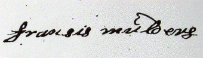 |
30 jan 1770: de handtekening van Francis Mulders |
Getrouwd Moergestel 8 nov 1767 met Anne Christiaan van de Pol. Zij is gedoopt te Moergestel op 10 okt 1742, aldaar overleden 24 nov 1813, en is een dochter van Christiaan Joannes van de Pol bij Wilhelmina Marten van Akeren.
Uit dit huwelijk:
- Wilhelmina Mulders (gedoopt Moergestel 12 jan 1769, aldaar overleden 3 nov 1843) Getrouwd Moergestel 14 apr 1799 met Jan Matthijssen. Getuigen: Christianus Mathijsen & Joannes Vrins. Mathijssen woonde in 1824 in de Heuvel, nummer 208, Moergestel
- Adriaan (gedoopt Moergestel 26 sep 1771, aldaar kinderloos begraven 3 mei 1798) Getrouwd Moergestel 7 mei 1797 met Johanna Serv. Meelis (geboren te Moergestel) die 2 nov 1806 te Moergestel hertrouwde met Martinus van de Voort. Getuigen bij dit tweede huwelijk: Christianus Meulders & Wilhelmus Baeten.
- Christiaan volgt VIII-i
- Margaretha (gedoopt Moergestel 18 juli 1775, aldaar begraven 7 jan 1782)
- Adriana (gedoopt Moergestel 21 nov 1777, aldaar overleden 03 nov 1813) Getrouwd met Martinus van de Pol (overl. Moerg. 26 mei 1811)
- Jan (gedoopt Moergestel 26 jan 1780) in 1824 landbouwer, wonende te Moergestel
- Cornelius (gedoopt Moergestel
10 jan 1784) niet meer genoemd in de memorie van successie van zijn vader,
23 april 1824
VII-e Jacobus Mulders zoon van VI-b. Gedoopt Moergestel 22 dec 1728, aldaar begraven 27 jan 1786. Benoemd tot Collecteur der Verponding voor De Heijzen en De Heuvel voor het jaar 1753; Gezworene in 1766; Raadsman in 1770 en 1774; Zetmeester in 1778.
Jacobus ging op 9 april 1757 een erfdeling aan met Adriaan Jan Mulders, zie noot 49. Aan Jacobus kwam door loting toe een huis te Winkenbergh, aldaar oostwaars de straat, west en noorwaarts de kinderen van Peter Walschots, suijtwaars Denis de Cort, bewoond door Adriaan Mulders; en enkele percelen land, waaronder De Osseweijde, den voorsten Blommendaal, en De Vlasroot.
Getrouwd Moergestel 26 mei 1754 met Maria Johanna Roosen (begraven Moergestel 10 feb 1786).
Uit dit huwelijk:
- Adriana Mulders
Gedoopt Moergestel 25 mrt 1755, begraven aldaar 21 mei 1793. Getrouwd (kerk) te Moergestel 13 april 1783 met Willem van Erk, geboren te Hilvarenbeek en wonende te Moergestel & Hilvarenbeek. Hij hertrouwde Moergestel 15 sep 1793 met Catharina Hoeven. - Maria Mulders
Gedoopt Moergestel 23 dec 1756, jong gestorven. - Cornelia Mulders
Gedoopt Moergestel 7 mei 1758, aldaar begraven 4 maart 1786. Getrouwd Moergestel 1 maart 1778 met Jan Baptist Marcelissen, gedoopt Baarle-Hertog 1 november 1754, begraven Moergestel 5 oktober 1802, zoon van Marcelis Cornelis Marcelisse en Jenneke Jan van Haeren. - Willem Mulders
Goopt Moergstel 10 nov 1760, kinderloos begraven aldaar 22 dec 1785. - Jan Mulders volgt VIII-j
- Maria Mulders
Gedoopt Moergestel 23 feb 1765, aldaar overleden 7 jan 1809. Getrouwd met Joanes Moonen, gedoopt Loon op Zand 1 nov 1760, overleden Moergestel op het Kleijn Logt 6 nov 1812. Hun dochter Maria Anna Moonen (1794-1872) trouwt te Udenhout op 18 feb 1822 met Cornelis Snoeren. - Adriaan Mulders
Ggedoopt Moergestel 2 maart 1767, aldaar begraven 30 dec 1785. Ongehuwd. - Elisabeth Mulders
Gedoopt Moergestel 18 nov 1769, aldaar begraven 16 sep 1802. Getrouwd met Adriaan van Amatum. - Johanna Maria Mulders
Gedoopt Moergestel 25 maart 1772.
- Ibidem, inv.nr. 25, nummer 116.
- Jan Baptist Mulders
Gedoopt Moergestel 13 maart 1775, aldaar overleden 31 maart 1835. Ongehuwd. Zijn nalatenschap omvatte onder meer een boere steede met huis, stal, schuur en erf ter grootte van 9 bunders, 20 roeden, 28 ellen, in de Heijsen (op de Broekzijde) in Moergestel. Deze stede was belast met een tweetal renten: 3 gulden jaarlijks aan de Armen van Moergestel; en 2,42 1/4 gulden jaarlijks aan de parochiale kerk van Moergestel. Erven waren onder anderen Jacobus Mulders; Cornelia, Johannes, Maria Anna, en Jacoba Moonen; Jacoba van Erk; Johanna, Cornelia en Elisabeth, kinderen van Jan Marcelis bij Cornelia Mulders.70
Generatie VIII
VIII-a Jan Mulders zoon van VII-a. Gedoopt Moergestel 2 jan 1772, overleden op 57-jarige leeftijd te Poppel 9 juni 1829, in zijn woonhuis in het gehucht Hulsel, vlakbij de latere Nederlands-Belgische grens. Omschreven als ackerman. Getrouwd met Joanna Maria van Gils, geboren te Poppel, België, aldaar overleden 14 nov 1842. Beiden vetrokken eerder naar Hilvarenbeek, borgbrief afgegeven 14 mrt 1804.
Uit dit huwelijk:
- Denis volgt IX-a
- Petronilla (gedoopt Moergestel 17 sep 1803, overleden Poppel 19 nov 1820)
- Joannes (gedoopt Hilvarenbeek 03 okt 1805)
- Joannes Baptist (gedoopt Poppel 19 feb 1807, aldaar overleden 29 maart 1807)
- Cornelius (gedoopt Poppel 28 mei 1808, aldaar overleden 29 mei 1808)
- Cornelia (gedoopt Poppel 29 jan 1810, aldaar overleden 15 feb 1810)
- Cornelius (gedoopt Poppel 16 april 1811, aldaar overleden 24 april 1811)
- Maria (* Poppel 14 nov 1812) Getrouwd Poppel 7 feb 1844 met Joannes Baptista Keysers (* Poppel 26 dec 1808) zoon van Nicolaus Keysers & Maria Christina Aerts.
- Adrianus
Geboren Poppel 11 aug 1816, aldaar overleden 13 aug 1816. In de geboorteakte heet de vader Jan Mulders ackerman oud dry en veertig jaeren geboortig van Moergestel woonende tot Poppel.
VIII-b Andries Mulders zoon van VII-a. Gedoopt Moergestel 18 dec 1773, aldaar overleden 31 dec 1833. Doopgetuigen: Henricus van den Boer namens Norbert Mulders & Adriana Petrus Vrinds. Woonde kort voor zijn dood in de Heizen nummer 184. Zijn nalatenschap omvat de helft in 10 percelen zaai- en weiland, nog een vierde deel in een perceel zaailand en een vierde deel in een perceel moeras, alle gelegen in de Heijzen, het perceel moeras 'op den Haaghorst.' Getrouwd Moergestel 22 april 1804 met Anna Roosen, gedoopt te Moergestel 2 mei 1771, dochter van Frans Roozen & Catharina de Roij.
Uit dit huwelijk:
- Johanna (gedoopt Moerg. 16 maart 1805) Getrouwd Moergestel 18 apr 1833 met Antonius Kluijtmans (* Sint-Oedenrode 27 dec 1794) zoon van Willem Kluijtmans & Johanna van den Borsch)
- Adriana (gedoopt Moerg. 22 dec. 1806) Getrouwd Moergestel 1 aug 1840 met Cornelis Jansen (* Oisterwijk 29 mei 1812) zoon van Hendrik Jansen & Adriana de Jong
- Cornelia (gedoopt Moerg. 13 sep. 1809) Getrouwd Moergestel 14 apr 1836 met Gijsbertus Looijkens (* Diessen 15 juni 1811) zoon van Francis Looijkens & Anna Maria Slegers
- Denis (* Moerg. .. nov. 1817, aldaar overleden 31 okt. 1832) Ongehuwd
- Adriaan volgt IX-b
- Jan (* Moergestel 13 april 1817, aldaar overleden 25 jan. 1833) Ongehuwd
- Helena Maria (* Moergestel 13 dec 1819, aldaar overleden 23 maart 1859) Getrouwd Alphen & Riel 29 maart 1845 met Huijbertus Wijnen (* Hooge- en Lage Mierde) zoon van Willem Wijnen & Catharina Reibergs
- Johanna Maria (* Moerg. 29 okt. 1822)
- Johanna Maria (* Moergestel 25 jan 1826) Getrouwd Oisterwijk 27 feb 1851 met Hubertus Brekelmans (* Tilburg) zoon van Gerardus Brekelmans & Maria [NN]
VIII-c Marcelis Mulders zoon van VII-b. Gedoopt Moergestel 7 sep 1772, aldaar overleden 22 apr 1831. Bakker. Schepen van Moergestel sinds 31 maart 1803, waarschijnlijk tot aan de Franse inlijving in 1810. Zijn nalatenschap omvatte onder meer 'eene boere hoeve, nr. 89, op Het Stokse, gehucht van Over 't Water', en een 'perceel broekland en heide genoemd De Hondsdonk, nr.1948, groot 5 bunder, 69 roeden, gelegen Over 't Water, Heikant, op den Hilt'.
Getrouwd Moergestel 26 juli 1795 met Anthonetta Timmermans, geboren te Moergestel
Uit dit huwelijk:
- Andries volgt IX-c
- Johanna Maria
Gedoopt Moergestel 16 juni 1798. - Jan Baptist volgt IX-d
- Adriaan volgt IX-e
- Ludovicus Mulders (Louis, Lodewijk)
Gedoopt Moergestel 12 okt 1804, overleden Loon-op-Zand 24 feb 1886. Doopgetuigen: Eerwaarde heer Joannes Meulders (pastoor in Hedel) en Maria Catharina Vivie. In 1831 beschreven als molenaar te Moergestel; in 1861 en 1869 als molenaar te Loon-op-Zand.
Akte van verkoop van een huis, een klein huisje, schuur, erf en tuin, gelegen in de Kreitenmolenstraat , sectie E nrs. 40, 41, 43, 43a, 44 en 812, te Udenhout, door Willem van den Bosch, leerlooier te Udenhout, als gemachtigde van Gerardus Bertens te Loon op Zand, van Johanna Bertens, weduwe van Francis van Bussel, te Asten, van Ludovicus Mulders, molenaar te Loon op Zand, gehuwd met Cornelia Bertens en Theodorus van Bebber, wever te Tilburg, gehuwd met Wilhelmina Bertens, aan Adrianus Johannes van den Heuvel, notaris ter Udenhout, voor fl. 1650,- (GAT, Notarieel archief A.J. Verschure, inv.nr.423,f.10 dd 17 jan 1862)
Getrouwd Udenhout 22 nov 1838 met Cornelia Bertens (* Udenhout 22 jan 1805, overleden 1883) dochter van Judocus (Joost) Gerardus Bertens, leerlooier en schoenmaker te Udenhout, bij Anna Maria Burgmans. - Johanna Mulders
Geboorteaangifte te Oirschot 11 september 1839, overleden op 22-jarige leeftijd te Loon op Zand 4 aug 1861. - Arnold
Gedoopt Moergestel 3 april 1807, overleden te Oirschot februari 1899. In 1831 schoenmaker te Moergestel volgens de memorie van zijn vader. Getrouwd te Oirschot op 11 juni 1843 met Maria Catharina van Hout, geboren te Oirschot 11 feb 1810, aldaar overleden 13 okt 1888, dochter van Peter van Hout en Wilhelmina van den Heuvel
Uit dit huwelijk:
VIII-d Peter Norbert Mulders zoon van VII-c. Gedoopt Moergestel 6 juni 1772, aldaar overleden 5 aug 1831. Woonde kort voor zijn dood in de Heizen, nummer 151. Zijn nalatenschap wordt gedeeld door drie kinderen, Antonij, Maria en Jacoba, en omvat 17 percelen grond in Moergestel. Hiertoe behoren een negende part in twee boerderijen in de Heijzen, nummers 192 en 147. De grootste boerderij beslaat 14 bunder.
| 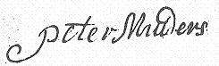 |
| Afbeelding 11 De handtekening van Peter onder de memorie van successie van Norbert Mulders, 3 april 1824 |
Getrouwd Moergestel 14 apr 1799 met Wilhelmina van Dijk (geboren te Hilvarenbeek)
Uit dit huwelijk (niet volledig):
- Antony volgt IX-f
- Cornelia (* Moergestel 27 juli 1802, aldaar overleden 18 feb 1827) Ongehuwd
- Maria (* Moergestel 15 dec 1804, overleden Helvoirt 30 sep 1859) Getrouwd Moergestel 15 feb 1835 met Johannes van Laarhoven (* Berkel-Enschot 1 dec 1810, overleden Helvoirt 2 mei 1860) zoon van Lambertus van Laarhoven & Arnolda Jan Aarts
- Jacoba (* Moergestel 05 jan 1807) Getrouwd Moergestel 11 feb 1831 met Arnoldus van Gestel (* Moerg. 13 juni 1803) zoon van Adriaan van Gestel & Johanna Aarts
VIII-e Jan Mulders zoon van VII-c. Gedoopt Moergestel 1 aug 1774, aldaar overleden 12 okt 1842. Woonde ten tijde van de Volkstelling van 1840 als weduwnaar in de Heijzen (Broekzijde, nr. 154) met drie ongehuwde zoons. Zijn nalatenschap omvatte 41 percelen grond in Moergestel, in secties B, C, en D.
Getrouwd Moergestel 19 april 1807 met Catharina Wolfs (gedoopt Moergestel 15 feb 1779, aldaar overleden 19 juni 1821) dochter van Cornelis Wolfs (1747-1819) & Maria Jacobus Melis.
| 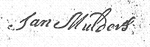 |
| Afbeelding 12 De handtekening van Jan Mulders, 3 april 1824 |
Uit dit huwelijk:
- Antony volgt IX-g
- Jan volgt IX-h
- Cornelis volgt
IX-i
- Adriaan (* Moergestel 12 sep. 1817, aldaar overleden 6 jan 1821)
- Martinus (* Moergestel 10 aug. 1820, aldaar overleden 06 sep. 1820)
VIII-f Anthony Mulders zoon van VII-c. Gedoopt Moergestel 24 maart 1787, aldaar overleden op 50-jarige leeftijd op 17 mei 1837. Landbouwer te Moergestel. Zijn dood wordt aangegeven door zijn zwager Denis Ketelaars en een 27-jarige buurman, Jan Baptist Storimans. De memorie van van successie van Anthonij bevat geen lijst van onroerende goederen. De nalatenschap van zijn vrouw Adriana, overleden in 1831, omvatte 'een twaalfde part onverdeeld in eene boere steede bestaande in huis, stal, en schuur..' [..] 'gequoteerd nr. 114' [..] 'in het gehucht van Over 't Water aan den Heikant', en een twaalfde part in een identiek gelegen stede, kadastraal nummer 120.
Getrouwd op 31-jarige leeftijd te Moergestel op 5 april 1818 met de 30-jarige Adriana van den Meydenberg, dochter van landbouwer Francis van den Meydenberg en Jacoba den Rooij. Zij is gedoopt te Moergestel op 10 jan 1789 en is aldaar overleden op 42-jarige leeftijd op 30 juni 1831. Haar dood wordt aangegeven door een zwager, de 57-jarige landbouwer Jan Mulders, en een buurman, de 36-jarige Willem Becx, eveneens landbouwer. (deze laatste, getrouwd met Wilhelmina Peynenburg, woonde in 1820 nog in de Tilburgse herdgang Veldhoven)
| 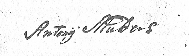 |
| Afbeelding 13 De handtekeningen van Anthonij en Adriana onder de memorie van successie van Norbert Mulders, 3 april 1824 |
Uit dit huwelijk:
- Margaretha (Margo) Mulders
Geboren Moergestel 23 feb 1819, overleden Goirle 11 nov 1858. Getrouwd Moergestel 29 juli 1848 met Josephus van Roessel (* Tilburg 6 sep 1820, overleden Goirle 19 juni 1893) zoon van Martinus Jozef van Roessel & Anne Brouwers. - Jacoba Mulders
Landbouwster. Geboren Moergestel 10 okt 1820, aldaar op 69-jarige leeftijd overleden 20 juni 1890, in het huis staande op de Heijze wijk C nummer twee honderd. Getrouwd Moergestel 23 april 1846 met Willem van Rooij (* Moergestel 6 maart 1814) zoon van Peter van Rooij & Johanna Maria van Asveld. Ten tweede maal getrouwd Moergestel 6 sep 1858 met Martinus Wolfs, zoon van Gerard Wolfs & Goverdina van Akeren. - Jan Mulders volgt IX-j
- Anna Catherina Mulders
Geboren Moergestel 30 jan 1825, overleden op 85-jarige leeftijd te Hilvarenbeek op 3 maart 1910. Overlijdensaangevers: Cornelis van den Pas (72) en Cornelis Hendrikus van de Ven (72), inwoners van Hilvarenbeek. - Norberta Mulders
Geboren Moergestel 18 feb 1827, ongetrouwd overleden Goirle 3 mei 1913. Haar overlijdensakte vermeldt: Elisabeth Mulders, dochter van Anthonij Mulders bij Adriana van den Meijdenberg, geboren te Moergestel oud 86 jaar. Aangezien er geen geboorteakte te vinden is met die naam, moet deze persoon wel identiek zijn aan Norberta Mulders. De memories van Anthonij en Adriana vermelden immers slechts 6 kinderen: Margo, Jacoba, Johannes, Anna Catharina, Norberta en Adriana. Woonde in bij haar zwager Josephus van Roessel in Goirle. Bij haar leven bekend als Betje Mulders, ging de familie Van Roessel er bij de doodsaangifte misschien ten onrechte van uit dat haar doopnaam Elisabeth was. - Adriana Mulders
Geboren Moergestel 23 feb 1831, aldaar overleden op 72-jarige leeftijd op 2 mei 1903, in het huis staande in het Dorp wijk A nummer negen en dertig. Getrouwd Moergestel 10 jan 1861 met Johannes van Roij (* Moergestel 22 juni 1825) zoon van Jan van Roij & Johanna Verhoeven
 |
Afbeelding 14 Betje Mulders. Zij woonde in bij haar zwager Josephus van Roessel op de Leeuwenhoeve aan de Abcovenseweg in Goirle |
VIII-g Peter Josef Mulders zoon van VII-c
Gedoopt Moergestel 5 jan 1792, overleden Boxtel 8 feb 1862 op 70-jarige leeftijd. Beroep: jager. Getrouwd Hilvarenbeek 11 mei 1818 met Maria Elisabeth van Esch, gedoopt Hilvarenbeek 19 aug 1783 als dochter van Adriaan van Esch bij Johanna Theresia van der Loo, en vóór 7 mei 1840 overleden te Haaren. Ten tweede maal op 48-jarige leeftijd als inwoner van Haaren getrouwd te Oisterwijk op 7 mei 1840 met Dorothea (Theodora in haar overlijdensakte) van Opstal, gedoopt Oisterwijk 7 jan 1806 als dochter van Laurentius van Opstal bij Maria Catharina van Spaandonk, overleden Boxtel 1 nov 1897 op 95-jarige leeftijd als 'weduwe van Piet Mulders'.
Uit het eerste huwelijk (onvolledig):
- Joanna Mulders
Geboren Hilvarenbeek. Getrouwd Oisterwijk 4 mei 1844 met Henricus van Reijt (* Bladel & Netersel) zoon van Joannes van Reijt & Elisabeth van Nunen - Norberta Mulders
Gedoopt Moergestel 26 maart 1819, overleden Oisterwijk 2 jan 1862. Getrouwd Oisterwijk 17 juli 1851 met Gijsbert de Groot (* Oisterwijk 2 dec 1821, aldaar overleden 16 jan 1886) zoon van Cornelis de Groot & Adriana van Oort - Adriana Mulders
Geboren Moergestel 2 juni 1821. - Jan Mulders
Geboren Moergestel 8 dec 1822, aldaar overleden 22 dec 1822. - Jan Mulders
Geboren Moergestel 23 mei 1824, aldaar overleden 10 jan 1825.
- Johannes van Elderen
Geboren Moergestel 27 april 1825, overleden aldaar op 4 mei 1898, oud 73 jaar. Getuigen bij de geboorteaangifte zijn Cornelis de Brouwer (35 jaar) en Antonij Mulders (38). De vader wordt omschreven als landbouwer, wonende in Moergestel. Jan van Elderen was kleermaker. Hij overlijdt in de wijk Kerkeind, Wijk A, huis nr. 44. Getrouwd met Anna Cornelia van Britsem, die overleed te Moergestel op 14 juni 1858. Hertrouwd Moergestel 11 oktober 1862 met de 21-jarige Adriana Peijnenburg, geboren 18 maart 1841 te Moergestel als dochter van Cornelis Peijnenburg en van Johanna Maria van Britsem. Opvallend detail: getuige bij het tweede huwelijk is de 61-jarige Jan Baptist Mulders, winkelier te Moergestel. Hij is een achterneef van de bruidegom, maar niet als zodanig vermeld in de trouwakte. Sterker, hij verklaart (met nog vier getuigen) 'te zijn geene bloedverwanten der echtgenooten'. De natuurlijke vader van de bruidegom wordt in de trouwakte niet genoemd. Jan en Adriana blijken al een bastaarddochter te hebben verwekt; in de trouwakte verklaren zij dit kind te erkennen.Zoons uit dit huwelijk:
- Cornelis van Elderen
Geboren Moergestel 13 april 1864. - Francis van Elderen
Geboren Moergestel 14 november 1871. Ten tijde van zijn huwelijk 'stoker op eene stoombierbrouwerij' en wonende te Moergestel. Getrouwd aldaar op 25-jarige leeftijd 11 februari 1897 met de 22-jarige Petronella Francisca van Hamond, geboren te Oisterwijk op 3 oktober 1874 als dochter van Adriaan van Hamond bij Wilhelmina van de Ven.Uit dit huwelijk:
- Johannes Cornelis van Elderen
Geboren Moergestel 21 juni 1897, overleden 4 dec 1994. Getrouwd met Johanna van de Wouw, geboren 16 juli 1907, overleden 12 mei 1970. - Wilhelmina van Elderen
Geboren Moergestel 12 jan 1899, overleden 1 aug 1977. Getrouwd met Adrianus van de Wouw, geboren 19 april 1893, overleden 3 mrt 1938. Hertrouwd met Petrus Wolfs, geboren 18 mrt 1906, overleden 22 dec 1980. - Adriana van Elderen
Geboren Moergestel 17 mrt 1901. - Adrianus van Elderen
Geboren Moergestel 12 april 1905, overleden 23 mei 1999. Getrouwd met Adriana Swinkels, geboren 23 mrt 1906, overleden 1 aug 1995. - Cornelis van Elderen
Geboren Moergestel 27 mei 1907. - Maria Francisca van Elderen
Geboren Moergestel 28 okt 1909. - Helena Maria van Elderen
Geboren Moergestel 20 dec 1911. - Antonia Maria van Elderen
Geboren Moergestel 20 dec 1911. - Lambertus Franciscus van Elderen
Geboren Moergestel 21 jan 1914. - Petronella Francisca van Elderen
Geboren Moergestel 30 nov 1915.
- Johannes Cornelis van Elderen
- Lambertus van Elderen
Geboren Moergestel 12 april 1874. - Hubertus van Elderen
Geboren Moergestel 24 april 1878. Kleermaker. Aldaar getrouwd op 22 april 1903 met de 26-jarige Antonia Wolfs, geboren te Moergestel als dochter van Willem Wolfs bij Martina de Laat.Uit dit huwelijk (incompleet):
- Johannes van Elderen
Geboren Moergestel 7 april 1904, op 86-jarige leeftijd overleden 7 januari 1991. Partner van Johanna van Iersel, geboren 9 juni 1906, overleden 4 augustus 1981. Beiden zijn begraven te Moergestel.
- Johannes van Elderen
- Adrianus van Elderen
Geboren Moergestel 22 september 1880. Kleermaker. Aldaar getrouwd op 4 mei 1905 met de 26-jarige Clasina Wolfs, geboren Moergestel als dochter van Willem Wolfs en Martina de Laat.
- Cornelis van Elderen
| 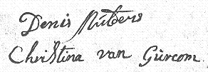 |
| Afbeelding 15 De handtekeningen van Denis en Christina onder de memorie van successie van Norbert Mulders, 3 april 1824 |
Uit dit huwelijk:
- Adriana (* Moerg. 19 maart 1817, aldaar overl. 11 april 1817)
- Margo (* Moergestel 25 jan 1819, aldaar overleden 6 aug 1902) Getrouwd Moergestel 23 april 1846 met Jan Ketelaars (* Moergestel 16 april 1816, aldaar overleden 6 sep 1881) zoon van Adrianus Jan Ketelaars & Maria van Beek
- Clasina (* Moerg. 03 feb. 1822)
- Norbert (* Moergestel 15 nov 1824, aldaar ongehuwd overleden 15 nov. 1878) Woonde 1869 in het ouderlijk huis te Moergestel (Heikant, sectie B nr. 131) met zijn ongetrouwde zuster Clasina en dito broer Christiaan
- Christiaan volgt
IX-k
- Adriaan volgt IX-l
- naamloos kind (overl. Moerg. 25 nov. 1837)
 |
| Afbeelding 16 Militair zakboekje van Norbert Mulders (1824-1878) met signalement, aangelegd 1844. Privécollectie Ton Heijkants (klik op afbeelding voor grotere weergave) |
Uit dit huwelijk:
- Adriana (* Moergestel 16 feb 1812) Getrouwd Moergestel 30 april 1832 met Adriaan Hoeven (* Moergestel 8 feb 1807) zoon van Johannes Hoeven & Maria van den Houdt
- Christiaan (* postuum Moergestel 06 sep 1814, aldaar overleden 22 sep 1824)
VIII-j Jan Mulders zoon van VII-e. Gedoopt Moergestel 8 dec 1762, aldaar begraven 25 januari 1790. Getrouwd 4 feb 1787 te Moergestel met Pieternella Peter Appels (begraven Moergestel 6 okt 1794 met achterlating van man en kinderen dus, waarschijnlijk hertrouwd)
Uit dit huwelijk:
- Jacobus Mulders
Gedoopt Moergestel 1 juni 1788, aldaar ongetrouwd gestorven 18 april 1872 op 83-jarige leeftijd. Akkerbouwer. Volgens de Volkstelling van 1869 woonde hij aan het Rootven in Wijk A (Kerkeind) met de ongehuwde Hendrika van Drunen (* Moergestel 16 jan 1826) en 5 knechts. Volgens de memorie van zijn nalatenschap gestorven zonder bloedverwanten, en daarmee vrijwel zeker ultimus stirpis Wilhelmi Molitoris, de laatste van de lijn Willem Mulders. De overlijdensaangifte werd gedaan door Jan Snoeren, een 46-jarige 'neef' (strikt gesproken een achterneef). De erfgenamen waren leden van de familie Moonen, nakomelingen van zijn oom Joannes Moonen. - Cornelius (gedoopt Moergestel 17 dec. 1789)
Generatie IX
IX-a
Denis Mulders
zoon van VIII-a.
Gedoopt Moergestel 25 feb 1802, overleden Poppel 29 jan 1841. Getrouwd Poppel
23 okt 1833 met Dingena Vromans (* Poppel 3 mei 1812, dochter van Wilhelmus
Vromans en Henrica Smolders)
Uit dit huwelijk (onvolledig):
- Joannes
Overlijdensaangifte Poppel 9 juni 1829 - Petrus
Geboorte aangegeven te Poppel 1 aug 1834; overlijdensaangifte Poppel 10 juni 1850 - Anna Cornelia
Geboren Poppel 28 jan 1836, aldaar overleden, overlijdensaangifte 9 maart 1876. Getrouwd aldaar 27 juli 1858 met Henricus Govers (* Weelde 4 nov 1822) - Adriana Maria
Geboren Poppel 13 juni 1839, aldaar overleden 5 okt 1872. Getrouwd Hilvarenbeek 7 jan 1870 met Andreas Petrus (Andries) van Oirschot (* Hilvarenbeek) zoon van Andries van Oirschot & Johanna Catharina Keijzers
Uit dit huwelijk:
- Denis Mulders volgt
X-a
- Martin Mulders volgt X-b
- Andries Mulders
Geboren Moergestel 28 okt 1844, aldaar overleden 18 mrt 1845. - Andries Mulders
Geboren Moergestel 11 maart 1846, overleden te Udenhout (vermoedelijk ongehuwd) op 20 aug 1902 op 56-jarige leeftijd.
Uit dit huwelijk:
- Dorothea Maria Mulders
Geboren te Deurne 17 apr 1829. Getrouwd Deurne 9 okt 1852 met kleermaker Gerardus Brangers (* Deurne 20 juni 1823) zoon van Pieter Brangers & Maria van Hout. Een zoon Antonius Franciscus Brangers, geboren te Deurne trouwt op 27-jarige leeftijd te Rotterdam 1 feb 1893 met Johanna Geertruida Bernardina Pierik (25) dochter van Antonij Pierik en Maria Theresia Lindemans; en hij hertrouwt aldaar 9 okt 1918 met de 38-jarige Anna Maria Josephina Tenback. - Willem Mulders
Geboren Deurne 21 okt 1830. In 1855 omschreven als molenaar wonende in de Limburgse gemeente Sevenum, zie een veilingakte van onroerende goederen van zijn overleden ouders: notarieel archief Deuren, inv. nr. 51, akte nr. 182 de dato 12 nov 1855. Volgens het bevolkingsregister van Sevenum vestigde de 23-jarige molenaarsknecht Willem Mulders zich op 8 maart 1854 in die gemeente, om op 19 november 1856 alweer te vertrekken naar Maastricht. - Marcellis Mulders
Geboren te Deurne 19 jan 1833, overleden Rotterdam 26 aug 1914. Woonde in 1862 als 29-jarige smid in Leiden, in de Groenesteeg. Aldaar getrouwd op 14 mei 1862 met de 24-jarige winkelierster Catharina Cecilia Laken, wonende in de Groenesteeg, geboren Leiden 22 nov 1837, overleden Rotterdam 30 dec 1912, dochter van Dirk (Theodorus) Laken en Catharina van den Meel. - Johanna Maria Mulders
Geboren Leiden 28 feb 1863, overleden Rotterdam 10 januari 1896. Getrouwd te Rotterdam 15 okt 1884 met Matthijs Hageraats, 23 jaar oud, zoon van Nicolaas Jacobus Hageraats en Hendrika Aanstoots. - Theodorus Hyacinthus Mulders
Geboren Leiden 4 oktober 1864, in de Groenesteeg. Overleden te Rotterdam, op het ouderlijk adres Lommerstraat 8-163, op 1 februari 1867 in de leeftijd van twee jaar en vier maanden. - Anna Klazina Mulders
Geboren Leiden 23 januari 1866. Haar vader is een 33-jarige smid, wonende in de Groenesteeg. Overleden op 8 september 1867 in Rotterdam in de leeftijd van een jaar en zeven maanden, op het adres Lommerstraat 8-163. - Theodorus Andreas Mulders
Geboren te Rotterdam 9 feb 1868, overleden aldaar op 8 november 1916. Zijn vader is volgens de geboorteakte smid, wonende in de Lommerstraat 8-163; een van de getuigen is de 34-jarige, beroepsloze Antonius Mulders, die op hetzelfde adres inwoont. Getrouwd Rotterdam 16 april 1890 met de 27-jarige Hermina Carolina Johanna Fellinger, geboren te Den Haag, dochter van Ernestina Josephina Fellinger (geen vader vermeld in te trouwakte). Volgens de huwelijksakte waren zowel Theodorus als zijn vader kastelein. Getuige in 1906 bij het huwelijk van zijn broer Antonius Wilhelmus en bij die gelegenheid omschreven als schoenenfabrikant. - Adriana Maria Mulders
Geboren Rotterdam 29 nov 1869, aldaar overleden 9 feb 1871. - Andreas Hyacinthus Mulders
Geboren Rotterdam 16 okt 1871. Getrouwd Rotterdam 24 okt 1894 met Jacoba Rust, 23 jaar oud, dochter van Johannes Arnoldus Rust en Maria Smeets. Getuige in 1906 bij het huwelijk van zijn broer Antonius Wilhelmus en bij die gelegenheid omschreven als suikerwerker. - Antonius Wilhelmus Mulders
Geboren Rotterdam 28 nov 1873, overleden 1875. - Marcellus Ludovicus Mulders
Geboren Rotterdam 12 april 1875, overleden 11 dec 1875. - Marcellus Antonius Mulders
Geboren Rotterdam 1 dec 1877, aldaar overleden 29 sep 1939. Getrouwd Rotterdam 30 mei 1900 met Maria Catharina Goossen (* Rotterdam 24 maart 1880, aldaar overleden 25 aug 1956) dochter van Antonie Goossen en Maria Catharina Gräfer. Getuige in 1906 bij het huwelijk van zijn broer Antonius Wilhelmus en bij die gelegenheid omschreven als fondsbode.Uit dit huwelijk:
- Marcellis Mulders
Geboren Rotterdam 20 juli 1901, overleden 8 juni 1979. Getrouwd 23 nov 1922 met Clazina Kloos - Maria Johanna Catharina Mulders
Geboren Rotterdam 22 nov 1902, aldaar overleden 12 mei 1903. - Catharina Cecilia Mulders
Geboren Rotterdam 12 aug 1904, aldaar overleden 26 dec 1998. Getrouwd 9 feb 1937 met Leen van Dalen - Antonie Mulders
Geboren Rotterdam 28 maart 1906, overleden 1 sep 1906. - Maria Catharina Mulders
Geboren Rotterdam 3 april 1907, overleden 11 dec 1938. Getrouwd met Gerard Mahieu - Antonie Mulders
Geboren Rotterdam 25 april 1909, aldaar overleden 8 aug 1972. Getrouwd 7 mei 1936 met Hendrica (Jet) de Beer (* Rotterdam 11 april 1913, aldaar overleden 10 okt 2003. - Johannes Marinus Mulders
Geboren Rotterdam 8 jan 1915, aldaar overleden 10 jan 1915. - Johanna Maria Mulders
Geboren Rotterdam 12 jan 1922.
- Marcellis Mulders
- Catharina Cecilia Johanna (* Rotterdam 5 feb 1880)
- Antonius Wilhelmus Mulders
Geboren te Rotterdam 20 juli 1883. Getrouwd Rotterdam op 10 mei 1906, als 22-jarige ‘suikerwerkersknecht’, met de 24-jarige Maria Lena de Sain, geen beroep, dochter van Marinus Leendert de Sain (overleden) bij Elizabeth van Gelderen, ‘strijkster’.Uit dit huwelijk:
- Marcellis Antonius Wilhelmus Mulders
Geboren te Rotterdam 1 augustus 1920, overleden Capelle aan de IJssel 20 juni 1999. Getrouwd te Rotterdam 7 januari 1945 met Emma Johanna van Engelen, geboren Rotterdam 13 juli 1922, aldaar overleden 20 mei 1993.
- Marcellis Antonius Wilhelmus Mulders
- Antonie Mulders
Geboren te Deurne op 15 maart 1834. In 1857 nog omschreven als ‘religieus’, wonend te Weert. Getrouwd Rotterdam 18 aug 1869 met Catharina van Dale (35 jaar) dochter van Kornelia van Dale, die in Rotterdam overleed op 21 juni 1870. Hertrouwd 28 dec 1870 te Rotterdam met de 43-jarige logementhoudster Maria Hendrika van Sonsbeek, weduwe van Peter van der Koll (overleden Rotterdam 26 feb 1870), geboren te Rotterdam 24 juli 1827 als dochter van Pieter van Sonsbeek bij Catharina van Riel.
Uit dit huwelijk (nader onderzoek volgt):
Uit dit huwelijk:
- Martina (* Moerg. 22 mei 1833)
- Francisca (* Moerg. 12 mei 1835, overl. Nijmegen 21 april 1903) Getrouwd Moergestel 28 okt 1861 met Cornelis Teurlings (* Tilburg 4 okt 1828) zoon van Francis Teurlings & Maria van Gorp. Teurlings was molenaar te Nijmegen.
- Antonia (* Moerg. 22 feb. 1837) Getrouwd Moergestel 16 feb 1882 met Jacobus Ebben (* Udenhout 11 feb 1837) zoon van Jacobus Ebben en Maria Berkelmans
- Cornelia (* Moerg. 25 feb. 1839, aldaar overleden 15 maart 1839)
- Cornelia (* Moerg. 19 maart 1840, aldaar 15 mei 1841)
- levenloos kind (overleden Moerg. 19 maart 1842)
- Adrianus Johannes Mulders
Geboren te Moergestel 6 april 1843, overleden op 92-jarige leeftijd te Hilversum op 14 mei 1935. Als 22-jarige inwoner van Moergestel, van beroep molenaar, aldaar getrouwd op 9 jan 1865 met de 19-jarige boerendochter Maria van Lommel (geboren te Moergestel 29 juli 1845) dochter van Christiaan van Lommel, bouwman, bij Johanna Ketelaars. Getuigen bij het huwelijk waren de 60-jarige rentenier Lodevicus Mulders, 'oom des bruidegoms' en de 26-jarige Lodevicus van Gils 'neef van bruidegom en bruid'. Hertrouwd op 40-jarige leeftijd te Geertuidenberg op 13 sep 1883 met de 25-jarige Everdina Sophia Hamer, geboren 7 april 1858 te Doesburg als dochter van Johannes Hamer bij Everdina van Rees. Mulders woonde op dit moment als molenaar te Geertruidenberg.Werkzaam als molenaar, soms als machinist, in achtereenvolgens Breda, Heerewaarden, Dreumel, Geertruidenberg, Bussum en Lunteren. Verhuist rond 1890 naar Kaulille (Belgisch Limburg) waar hij in 1891 een stenen korenmolen liet bouwen, die hij in 1902 voor BFr 9000 verkocht aan de familie Sevens; de molen kreeg daarop zijn huidige naam Sevensmolen.
Het echtpaar Mulders-Hamer vestigt zich op 23 maart 1903 in Soest, waar Mulders molenaar is op de molen De Vlijt, gebouwd in 1852. Op 5 nov 1925 vertrekt het echtpaar volgens het Bevolkingsregister naar Hamburg
Uit het eerste huwelijk:
- Jacoba Maria Mulders
Geboren te Breda 18 januari 1870. Vader omschreven in de geboorteakte als �molenaarsknecht wonende alhier�. Getrouwd op 22-jarige (minderjarige!) leeftijd te Haarlem op 15 juni 1892 met de 27-jarige Cornelis Wester, timmerman, geboren te Obdam als zoon van Ide Wester en Katje Windt, �wonende alhier, laatst te Tilburg�. De bruid heet nu te zijn geboren in de Belgische plaats Kaulille (in Belgisch Limburg) uit Adrianus Johannes Mulders, korenmolenaar wonende te Caulille en van Maria van Lommel overleden. De vader verscheen voor de ambtenaar van de burgelijke stand te Haarlem om toestemming te geven voor het huwelijk van zijn dochter. - Cornelia Maria Mulders
Geboren Breda 25 mrt 1871, ongehuwd overleden te Lunteren (Geld.) op 11 juni 1889. Getuige bij de geboorteaangifte is de 37-jarige molenaarsknecht Adrianus Voeten. In de overlijdensakte wordt de vader vermeld als korenmolenaar wonende te Lunteren; de moeder, laatst gewoond hebbende te Dreumel, is dan al overleden. - Johanna Maria Mulders
Geboren te Heerewaarden (Geld.) op 3 dec 1879, overleden te Dreumel op 9 sep 1880. De vader heet in de geboorte- en overlijdensakten machinist te zijn, wonend te Heerewaarden respectievelijk Dreumel.
Uit het tweede huwelijk:
- Johannes Baptist Mulders
Geboren Geertruidenberg op 16 aug 1885, overleden Soest 7 dec 1961. Zijn vader wordt in de geboorteakte omschreven als molenaarsknecht wonende in deze gemeente. Als 21-jarige molenaar en inwoner van Soest getrouwd aldaar op 18 jan 1907 met de 31-jarige Barbara Clara Valkenet, geboren te Hilversum als dochter van Cornelis Anthonie Valkenet bij Alida van der Wardt.Mulders kocht op 3 januari 1921 windmolen De Windhond in Soest van Jan Willem Smits jr. voor 5030 gulden. Deze heette ook wel de molen opden Eng en den Oude Molen en was sinds 1737 geheel van steen. In november 1925 liet Mulders de molen stilleggen omdat deze niet meer rendeerde. De concurrentie van een lokale co�peratieve elektrische maalderij was moordend en in 1926 dreigde sloop. In de Soester Courant van 10 sep 1926 werd nog eens herinnerd aan het verleden van die molen. Op 26 okt 1682 had Constantijn Huygens, 'de geheimschrijver van stadhouder Willem III', tijdens een verblijf op Soestdijk met prinses Maria van Engeland, de vrouw van de stadhouder, de molen (toen nog van hout) beklommen, 'om met myn verrekycker de clock van Uytrecht te sien', aldus Huygens in zijn dagboek. Op 12 aug 1911 hadden ook koningin Wilhelmina en de 2-jarige prinses Juliana de molen beklommen. 'Belangstellend liet H.M. zich door den molenaar alles uitleggen', aldus de lokale courant. Dit was niet Mulders, maar de toenmalige eigenaar Smits. Zijn familie had de molen sinds 1774 bezeten en had er vijf generaties op gemaald. In 1930 werd met de sloop begonnen, maar in 2008 is de molen herbouwd.
- Franciscus Johannes Mulders
Geboren Bussum 7 dec 1888, overleden Hilversum 5 april 1889. Vader in de geboorteakte omschreven als molenaar, wonende alhier. - Christina Everdina Mulders
Geboren Kaulille (België) 6 april 1893. - Wilhelmus Franciscus Mulders
Geboren Kaulille (België) 18 jan 1898. Vestigde zich op 16 aug 1923 vanuit Utrecht in Soest. Hij trouwt aldaar als 25-jarige chauffeur op 12 sep 1923 met Maria Hubertina van den Akker, 26 jaar, geboren te Geullen en inwoonster van Soest, dochter van Leonardus van den Akker en Maria Josephina Pluis. Zijn broer Johannes Baptist, molenaar te Soest, is een van de getuigen bij het huwelijk.
- Jacoba Maria Mulders
- Petrus Johannes volgt
X-c
Uit dit huwelijk:
- Antonius Mulders
Geboren te Moergestel 8 aug 1841, aldaar overleden 21 okt 1841. - Marcelis Martinus Mulders
Geboren te Moergestel 2 okt 1842, overleden aldaar op 17-jarige leeftijd op 1 okt 1859, zaterdagnacht om 4 uur. Aangevers van het overlijden zijn twee ooms, de 44-jarige Peter van de Wouw, secretaris, en de 59-jarige winkelier Jan Baptist Mulders. - Johanna Mulders
Geboren te Moergestel 30 aug 1847, aldaar overleden op 13-jarige leeftijd op maandag 7 jan 1861.
Uit dit huwelijk:
- Willem Mulders
Geboren te Moergestel 12 apr 1827. In 1860 omschreven als dagloner. Hij kon niet schrijven, zo blijkt uit de geboorteaangifte van zijn zoon Martinus. Getrouwd met Helena van de Biggelaar (* te Moergestel), hertrouwd Haaren 14 jan 1863 met Wilhelmina de Lepper (* Haaren 6 nov 1816) dochter van Zegerus de Lepper & Adriana Verhulst, weduwe van Martinus Smits en Wilhemus Witlox.Uit het eerste huwelijk:
- Johanna Mulders
Gestorven te Moergestel 26 januari 1861, oud 20 maanden. - Martinus Mulders
Geboren te Moergestel (op den Logtschendijk aldaar) op 7 oktober 1860, overleden Moergestel 18 augustus 1861, oud 10 maanden, in het ouderlijk huis aan het Lindeind.
- Johanna Mulders
- Maria Mulders
Geboren Moergestel 5 feb 1830, aldaar overleden 25 feb 1830. - Adriaan Mulders
Geboren Moergestel 25 aug 1832, aldaar overleden 13 nov 1852 oud 20 jaar. - Peter Mulders
Geboren Moergestel 20 apr 1834, aldaar overleden 8 juni 1834, oud zeven weken. - Cornelia Mulders
Geboren Moergestel 9 mrt 1838, aldaar overleden 23 mei 1840. - Cornelia Mulders
Geboren Moergestel 11 juli 1842, overleden Oisterwijk 24 jan 1917. Getrouwd Oisterwijk 28 april 1870 met Cornelis Neggers (* Berkel Enschot & Huijklom) zoon van Josephus Neggers en Maria [NN] - Jan Mulders
Geboren Moergestel 26 aug 1844, aldaar overleden 24 mrt 1845.
Uit dit huwelijk:
- Anna Katharina Mulders
Geboren Moergestel 31 juli 1849. Getrouwd Moergestel 17 juni 1875 met Wilhelmus Hendriks (* Hilvarenbeek 27 juli 1843) zoon van Jacobus Hendriks & Adriana Pellen. Ten tweede maal getrouwd Moergestel 8 juni 1899 met Mathijs Walschots (* Moerg) zoon van Adriaan Walschots & Adriana de Bekker
Uit dit huwelijk:
- Catharina Mulders
Geboren Moergestel 8 februari 1842. - Johanna Maria Mulders
Geboren Moergestel 19 januari 1844. - Cornelia Mulders
Geboren Moergestel 24 augustus 1845 in de ouderlijke woning in de Heizen. - Catharina Mulders
Geboren Moergestel 14 maart 1847. Getrouwd Moergestel 27 april 1876 met Adriaan Bierkens (* Oisterwijk 17 okt 1844) zoon van Johannes Bierkens & Anna Maria van Straten. - Antoinette Mulders
Geboren Moergestel 27 maart 1849. Getrouwd Moergestel 6 mei 1879 met Adrianus Hoeven (* Moergestel 6 feb 1853) zoon van Adriaan Hoeven & Adriana Mulders. - Elisabeth Mulders
Geboren Moergestel 9 februari 1851.
Uit dit huwelijk:
- Jan Mulders
Geboren Moergestel 17 feb 1846, aldaar overleden 31 jan 1898. Landbouwer, inwonend bij zijn broer Theodorus volgens het bevolkingsregister 1890-1900. Ongehuwd. - Maria Catharina Mulders
Geboren te Moergestel in de ouderlijke woning in de Heizen op 16 november 1847, overleden op 26-jarige leeftijd te Moergestel op 25 september 1874. - Theodorus Mulders volgt
X-d
 |
| Afbeelding 17 Jan Mulders, gefotografeerd in 1867 met andere leden van de Nieuwe Koninklijke Harmonie te Tilburg. Collectie Regionaal Archief Tilburg. |
|
|
| 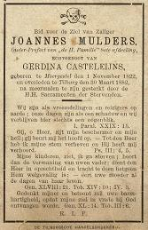 |
| Afbeelding 18 Bidprentje voor Jan Mulders, 1882 (klik op afbeelding voor grotere weergave) |
|
|
| 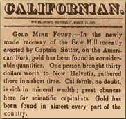 |
Afbeelding 19
|
Verloor op 8-jarige leeftijd zijn moeder, zes jaar later zijn vader. Zijn oom Denis Ketelaars moet zich vervolgens over de minderjarige wees hebben ontfermd: volgens het Bevolkingsregister woonde Jan in 1839 met drie zusters (Catharina, Norberta en Adriana) bij het gezin Ketelaars aan het Kerkeinde nummer 69 in Moergestel. Ketelaars overleed in 1842. In de volkstelling van 1849 komt Jan niet meer voor. Volgens verhalen die in de familie rondgaan is hij in deze periode goud gaan zoeken in Amerika. Hij vond het ook en stond eenmaal terug in Nederland bekend als 'Jantje de Goudzoeker'.
De Burgerlijke Stand vermeldt hem weer in 1865, als hij op 17 oktober in het gemeentehuis van Moergestel trouwt met Gerardina Kastelijns. Het bruidspaar is kort daarop naar Tilburg verhuisd, naar de buurt Oerle. Het Bevolkingsregister aldaar noemt hem winkelier in 1879, net als het Adresbroek van dat jaar. Die laatste bron meldt zijn adres als Piusstraat, Sectie N (dat toen onder de wijk Heuvel viel) nummer 222. Uit notariële archiefstukken blijkt dat hij daarnaast een timmerbedrijf uitbaatte en opbrengsten ontving uit de verhuur van huizen die hij bezat in Tilburg.
| 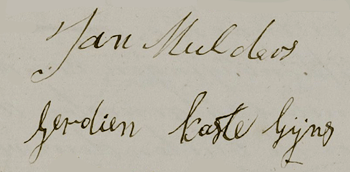 |
De handtekeningen van de 42-jarige Jan Mulders en 28-jarige Gerardina Kastelijns onder hun huwelijksakte, Moergestel 17 oktober 1865. |
Op 21 april 1869 koopt 'Jan Mulders, timmerman wonende te Tilburg' een bouwplaats ter grootte van 1809 vierkante ellen en 55 vierkante palmen van architect en plaatsgenoot Hendricus Jacobus van Tulder. De grond is deel van het voormalige koninklijk park en grrenst ten zuidoosten aan de Venschendijk, ten zuidwesten aan de Prinses Sophiastraat, ten noorden en noordoosten aan de verkoper en verder grenzend aan de erven van Adriaan Tromp. De koopsom bedraagt 528 gulden, omgerekend naar de koopkracht in het jaar 2018 ongeveer €5920.
Het terrein was Van Tulder aangekomen door koop van koning Willem III, diens broer prins Hendrik der Nederlanden en zuster groothertogin Sophie van Saksen-Weimar, blijkens akte van 8 juni 1866 verleden bij notaris J.A. Damen. Zij hadden het Willemspark bij het koninklijk paleis in Tilburg van hun vader geërfd. Van Tulder betaalde 18.000 gulden voor de grond. Hij koesterde ambitieuze plannen om er herenhuizen en villa's op te bouwen, maar daar ging het stadsbestuur niet in mee. Er kwamen arbeiderswoningen te staan. Zoals in 1894 blijkt bij de deling van Jans nalatenschap benutte ook hij zijn grond voor het bouwen van huurhuizen. De bebouwing is in de jaren 60 en 70 gesloopt.
Bron: archief notaris J.A. Daamen, inv.nr.343, aktenummer 138 dd 21 apr 1869.
Bron: archief notaris Martens, inv.nr. 513, akte 122.
| 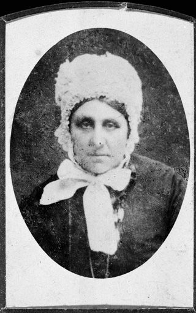 |
| Gerardina Kastelijns in 1890. |
Zijn nalatenschap wordt in 1882 geschat op 12.255,34 gulden, omgerekend ongeveer 140.000 euro. Meegerekend zijn 13 percelen huizen, erven en tuinen te Tilburg in Sectie M ter waarde van 7.400 gulden (NA Damen, inv.nr.365,f.104 en Memorie Tilburg inv.nr.99, nr.69). Als Gerardina is overleden, blijkt de waarde van de percelen in twaalf jaar tijd ruim te zijn verdubbeld naar 14.875 gulden (nu ongeveer 172.000 euro). Het Adresboek uit 1889 vermeld de weduwe J. Mulders, winkelierster, tapster, koopvrouw in steenkolen, wonende in de Piusstraat Sectie N nummer 501. Ze had een vergunning voor het verkoopen van sterken drank in het klein.
Bron: NA 547/286, Minuutakten gepasseerd
voor notaris P.W. Maas, 23 oktober 1894: Akte van deling van de boedel van
Johannes Mulders en Gerardina Castelijns.
| 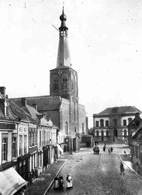 |
| Afbeelding
20 De Oude
Markt van Tilburg met de St. Dionysiuskerk, ook wel Heikense kerk genoemd, vlak v��r 1894. In dat jaar werd de huidige, neogothische gevel opgetrokken, waarbij de oorspronkelijke toren werd ommetseld. De heilige Dionysius, sinds de Karolingen beschermheilige van de Franse koningen, is een zeldzame kerkpatroon in deze streek en duidt op een verband met Frankische grootgrondbezitters die in de 12e eeuw op de plek van de kerk het domeingoed Ter Rijt bezaten. De kerk zou dan zijn ontstaan als familiekapel. Het geslacht 'Van Tilburg', van wie opeenvolgende leden de voornaam Giselbert droegen, bezat tevens goederen tussen Leuven en Landen, omtrent de plaatsjes Nodebais en Piétrebais. Patroon van de kerk van Piétrebais is Saint Denis. Het is niet helemaal duidelijk hoe de familiekapel in Tilburg uiteindelijk de status van parochiekerk verwierf. Eén theorie luidt dat de oudste parochiekerk, onder patronaat van het bisdom Luik, in De Schijf stond. Dit patronaat ging in 1232 over naar de abdij van Tongerlo. Deze kerk was in de 15e eeuw te klein geworden, waarna werd besloten tot nieuwbouw. Maar dan wel op de plek van de kapel, waarbij de patroonheilige werd overgenomen. Dit gebouw werd voltooid in 1483 en ingewijd op 9 oktober, het feest van de heilige Dionysius. De theorie wordt gesteund door het feit dat de Dionysiuskerk in de 16e eeuw nog wordt omschreven als capella, niet ecclesia. Op de foto is rechts naast de kerk het neoclassicistische stadhuis zichtbaar, in de jaren 1848-1849 gebouwd naar een ontwerp van architect Van Tulder. Dit gebouw ging in november 1971 tegen de vlakte om plaats te maken voor het nieuwe stadhuisplein. (klik op de afbeelding voor grotere weergave) |
Gerardina, als voogd over haar vijf nog minderjarige kinderen, verhuurt in 1893 voor jaarlijks 156 gulden een huis 'aan het Ven sectie M nummer 1947' met grond voor zes jaar aan de in Tilburg wonende molenaar Adrianus van Gorp als voogd over de minderjarige Adrianus Pigmans, voerman te Tilburg. De huur gaat 1 september in. Bron: Archief notaris P.W. Maas, inv.nr.546,aktenummer 147 dd 19 juli 1893.
Op 19 juni 1894, tweeënhalve week na het overlijden van Gerardina, verkopen haar kinderen roerende goederen uit de nalatenschap bij opbod per openbare veiling. Deze vindt plaats ten woonhuize van de overledene en in aanwezigheid van notaris Peter Willebrordus Maas. Een kast brengt het hoogste bedrag op (60 gulden) en de lijst goederen bevat verder alleen basaal huisraad, tot een wastobbe aan toe. Vermoedelijk zijn sieraden, contanten en andere waardevolle bezittingen reeds onderling verdeeld. Totale opbrengst van de veiling: 333 gulden.
Bron: Archief notaris P.W. Maas, inv.nr.547, aktenummer 202.
Op 11 juli 1894 veilen de kinderen 'ten koffijhuize van de weduwe Voskens te Tilburg' onroerende goederen uit de nalatenschap:
- twee huizen met erven in de Piusstraat te Tilburg, kadastraal sectie M nummers 3758 en 3759. Wilhelmus Franciscus Beerens, koopman te Tilburg, koopt ze voor 1875 gulden.
- twee huizen met erven aan de Prinses Sophiastraat, kadastraal M nummers 3541 en 3542; Petrus Johannes Jongbloets, 'agent eener verzekering Maatschappij' en getrouwd met de dochter Joanna Wilhelmina Mulders, koopt ze voor 1645 gulden.
- twee huizen met erven en tuin op het Heike, kadastraal 1178, 1179 en 1180. Hendrikus Groenen, metselaar te Tilburg, koopt ze voor 1565 gulden.
Bron: Archief notaris P.W. Maas, inv.nr.547, aktenummer 221, scans 384-385.
Op 23 okt 1894 volgt de erfdeling van de nalatenschappen (sic) van Jan Mulders en Gerardina Kastelijns. De erven valt ieder een achtste gedeelte toe. Toeziender over de vijf minderjarige kinderen is landbouwer Gerardus Claassen. De nalatenschap bevat (naast enkele opgesomde vorderingen) de volgende bezittingen:
- twee huizen met erven aan de Prinses Sophiastraat te Tilburg, gewaardeerd op 1645 gulden (kadastraal sectie M 3541 en 3542); deze zijn gekocht voor notaris Martens te Tilburg op 4 juni 1879;
- zeven huizen met schuur, erven en tuin te Tilburg op het Heike, gewaardeerd op 7925 gulden (sectie M 1942, 1943, 1944, 1946, 1947, 1948, 3389 en 3390); de percelen zijn gekocht ten overstaan van notaris Daamen te Tilburg op 21 april 1869;
- winkelgoederen, gewaardeerd op 386 gulden en 61,5 cent;
- 333 gulden in contanten, 'voortgesproten' uit publiek verkochte goederen uit de inboedel;
- 3440 gulden in contanten, voortgesproten uit op 11 juli verkocht vastgoed;
Bron: Archief notaris P.W. Maas, inv.nr.547, aktenummer 286.
Uit dit huwelijk:
- Adriana Elisabeth Mulders
Geboren te Tilburg op 17 aug 1866, aldaar overleden 19 mei 1947. Getrouwd Tilburg 11 feb 1890 met Peter Johannes van Riel (* Tilburg 13 apr 1861, aldaar overleden 14 okt 1897) zoon van Peter van Riel en Maria Catharina Peijnenborg. Een zoon uit dit huwelijk, Gerard Henri Louis Maria van Riel (geboren te Tilburg op 14 juni 1897, overleden Goirle 27 mei 1974) werd pastoor van Goirle (St. Jans Onthoofding). - Johanna Wilhelmina Mulders
Geboren te Tilburg op 7 sep 1867, aldaar overleden op 7 jan 1949. Getrouwd met Petrus Johannes Jongbloets, verzekeringsagent te Tilburg (* Tilburg 6 mei 1868, aldaar overleden 23 apr 1929). - Antonia Maria Mulders
Geboren te Tilburg 21 april 1869, overleden aldaar op 5 nov 1946. Getrouwd Tilburg 3 okt 1893 met Adrianus Josephus Pigmans (* Tilburg 10 mrt 1871, zoon van Adriaan Pigmans en Elisabeth Adams, aldaar overleden 4 sep 1949). - Wilhelmina Huberdina Mulders
Geboren te Tilburg 3 nov 1870, overleden aldaar (wijk Oerle) op 21 sep 1871, oud tien maanden. - Maria Margaretha Mulders
Geboren Tilburg 15 jan 1872, overleden aldaar (wijk Oerle) op 14 apr 1872, oud drie maanden. - Wilhelmina Elisabeth Mulders
Geboren te Tilburg 19 sep 1873. Getrouwd Tilburg 21 juli 1896 met Peter Lambertus Maas (* Stratum 22 juni 1871, slager, wonende te Tilburg) - zoon van Hendrikus Maas en Maria Naaijkens. - Antonius Josephus Cornelius Mulders
Geboren te Tilburg op 11 maart 1875, aldaar overleden op 3 feb 1958. Hij trad op 2 februari 1895 in bij de fraters van Tilburg, werd geprofest op 27 augustus 1898 en kreeg de kloosternaam frater Maria Rembertus.
Antonius Josephus Cornelius Mulders (1875-1958),
frater Rembertus, in 1900.
- Margaretha Maria Josephina Mulders
Geboren Tilburg 14 juni 1877. Per 24 okt 1900 ingeschreven als dienstbode bij een familie in de Nieuwstraat in Veghel; aansluitend op 17 mei 1902 ingeschreven als dienstbode in Oosterhout; vervolgens per 5 juni 1903 uitgeschreven en vertrokken naar Arendonk in België. - Jan Josef Mulders (Jef) volgt X-e
- Johannes Marinus Christianus Mulders (Jan) volgt X-f
Geboren Moergestel 15 mei 1828, aldaar overleden 11 nov 1901. Getrouwd Moergestel 1 mei 1871 met Maria Hoeven (* Moergestel 13 maart 1839) dochter van Adriaan Hoeven & Adriana Mulders. Ten tweede maal op 62-jarige leeftijd gehuwd Moergestel 12 mei 1891 met Adriana Roozen (* Moergestel 17 nov 1866) dochter van Adriaan Roozen & Wilhelmina van de Wouw. Het gezin is 21 mei 1913 ingeschreven in Berkel.
Uit dit huwelijk
- Denis volgt X-g
- Cornelis Adriaan (* Moerg. 15 juli 1895) Ingeschreven in het Bevolkingsregister van Berkel 11 apr 1919
- Christiaan (* Moergestel 12 mrt
1897, overleden Haaren 21 sep 1973) Woonde in Haaren in een boerderij aan Het Eind. Gehuwd met Adriana van Beers (* Haaren
2 dec 1899, aldaar overleden 4 april 1986)
Uit dit huwelijk (7 dochters, 2 zoons):
- Adriana Cornelia Mulders
Overleden te Haaren januari 1928. - Adriana Maria Mulders (Sjaan)
Geboren Haaren 28 nov 1928. Getrouwd 11 nov 1952 met Frans op 't Hoog (* Moergestel 20 dec 1927), die was opgegroeid in boerderij De Eendracht aan de Tilburgseweg in Moergestel. Later 31 jaar werkzaam bij drankenhandel De Kroon aan de Dorpsstraat te Oisterwijk.
- Adriana Cornelia Mulders
- Wilhelmina (* Moergestel 22 mrt 1899)
- Cornelia (* Moergestel 24 apr 1901, overleden Tilburg 13 okt 1979) Getrouwd 1) M.J. Maton, 2) M.C. Op 't Hoog 3) H.J.Fr. Hommen
Geboren Moergestel 22 juni 1833, aldaar overleden 18 feb 1905. Hij zat van 1875 tot 1905 in de gemeenteraad van Moergestel, van 1890 tot 1893 was hij bovendien wethouder. Getrouwd Moergestel 12 apr 1866 met Elisabeth Ketelaars (* Moergestel 23 jan 1836, aldaar overl. 26 sep 1874) dochter van Adriaan Ketelaars & Maria van Beek
Uit dit huwelijk:
- Christina (* Moerg. 27 aug. 1867, aldaar overl. 26 juni 1941)
- Adriaan (Jaon) volgt X-h
- Maria (* Moerg. 30 dec. 1869, aldaar overl. 16 sep. 1949)
- Adriana (* Moerg. 14 okt. 1870, aldaar overleden 25 okt 1936)
 |
| Drie ongetrouwde zussen van Jaon Mulders, datum onbekend (vóór 1936). |
Generatie X
X-a Denis Mulders zoon van IX-b
Geboren Moergestel 24 jan 1839, aldaar overleden 20 aug 1910. Woonde bij zijn dood aan het Kerkeinde, wijk A. Getrouwd Moergestel 1 mei 1877 met Elizabeth Vermulsch (* Moerg. 5 juli 1845) dochter van Gijsbert Vermulst (sic) & Johanna van de Pol.
 |
|
| Denis Mulders en Elizabeth Vermulsch. | |
Uit dit huwelijk:
- Maria Johanna (* Moerg. 30 juni 1878)
- Lambertus Josephus volgt XI-a
- Adriaan volgt XI-b
- Johannes volgt
XI-c
Geboren Moergestel 4 nov 1841, overleden Berkel 25 maart 1879. Getrouwd als 34-jarige inwoner van Heukelom, van beroep dienstbode, in Berkel op 1 mei 1876 met de 28-jarige dienstmeid Catharina Vermeer uit Berkel, geboren te Udenhout 20 nov 1847, overleden Poppel 19 aug 1907, dochter van Jacobus Vermeer bij Gerardina de Jong. Zij hertrouwde met Jan van Steen uit Weelde. Getuigen bij het huwelijk in 1876 zijn onder anderen de 36-jarige Dionisius Mulders en de 30-jarige Andries Mulders, broers van de bruidegom, beiden landbouwers uit Moergestel.
Uit dit huwelijk:
- Johanna Mulders
Geboren Berkel 1 dec 1877, overleden Weelde 17 dec 1959. Getrouwd met Anton van Loon (* Weelde 15 aug 1875, overleden Reet 19 sep 1965) - Martinus Mulders volgt
XI-d
Geboren Moergestel 7 feb 1846, aldaar overleden 3 sep 1919. Leerlooier en telefoonkantoorhouder. Getrouwd Moergestel 21 mei 1878 met Martina Maria van Lommel (* 13 maart 1851, overleden 14 maart 1954) dochter van Christiaan van Lommel (overleden in 1882) & Johanna Ketelaars.
Uit dit huwelijk:
- Johannes Josephus Mulders
Geboren te Moergestel op 9 maart 1879, op 96-jarige leeftijd overleden, op 13 januari 1976. Begraven te Moergestel. Onderwijzer. Hij woonde in Moergestel, naast Het Fortuintje. - Johanna Maria (Sjaan)
Geboren te Moergestel 26 jan 1881, overleden 14 feb 1931. Getrouwd Moergestel 21 juli 1913 met Sjef (Josephus) van de Wouw, geboren Moergestel 22 aug 1880, overleden 6 juni 1941, zoon van Marinus van de Wouw & Johanna van Arendonk. Hij bezat een bakkerij annex kruidenierswinkel te Moergestel.
- Christina Maria
Geboren in Moergestel op 23 okt 1882, aldaar overleden 6 dec 1966. Getrouwd Moergestel 23 nov 1921 met Johannes Josephus van de Sande (* Liempde 25 feb 1873, aldaar overleden 15 aug 1948) zoon van Bernardus Hubertus van de Sande en Elisabeth Helena van Haaren - Jacoba Maria Mulders
Geboren Moergestel 2 december 1885. - Maria Franciska Mulders
Geboren Moergestel 14 april 1889. Onderwijzers in Tilburg. - Simon Petrus Mulders
Geboren Moergestel 22 juli 1893, overleden 5 mei 1894. - Simon Petrus Mulders
Geboren Moergestel 8 juni 1895, overleden 28 okt 1972. Postkantoorhouder. Gehuwd met Jacoba Maria van Hulten, geboren 26 sep 1886 overleden 4 feb 1954. Hertrouwd met Anna Maria Petronella Horrevorts, geboren Moergestel 5 feb 1913, overleden aldaar 3 feb 2003.
Geboren Moergestel 9 juli 1851, aldaar overleden 27 jan 1922. Landbouwer, woonde in de Heizen volgens de bevolkingsregisters 1900-1930. Getrouwd Moergestel 9 feb 1887 met Adriana Wolfs (* 2 dec 1861, overleden Moergestel 18 maart 1950) dochter van Martinus Wolfs & Jacoba Mulders
Uit dit huwelijk:
- Cornelis volgt XI-e
- Catharina (Cato) Maria (* Moergestel 11 juli 1889, overleden Riel 1 feb 1978) Getrouwd Moergestel 22 mei 1920 met Wilhelmus (Willem) Adrianus van Roessel (* Riel 12 dec 1922, aldaar overleden 16 juni 1954) zoon van Adriaan van Roessel & Johanna Maria van der Pol
- Martina Jacoba (Koos) * Moergestel 16 juli 1891, overleden Tilburg 7 juli 1963. Getrouwd met Wilhelmus Hendrix (* 22 nov 1885, overleden Moergestel 9 aug 1969)
- Johannes Wilhelmus volgt XI-f
- Augustinus Wilhelmus volgt XI-g
- Maria (Marie) Catharina (* Moergestel 20 feb 1899, overleden Goirle 7 april 1981 op 82-jarige leeftijd) Getrouwd met Marinus de Laat. Hertrouwd met Johannes Josephus van der Meijden (* Moergestel 4 jan 1908, overleden Tilburg 9 juli 1961)f
- Josephus (Sjef) geboren Moergestel 21 feb 1901, overleden Tilburg 31 okt 1978. In 1928 ingeschreven in Berkel (aantekening in het Bevolkingsregister: "Huize Padua")
| 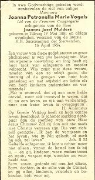 |
X-e
Jan Josef Mulders
zoon van IX-j
Geboren te Tilburg 14 feb 1879, aldaar overleden 19 dec 1964. Het Adresboek 1911 noemt hem als broodbakker in de Zwijsenstraat nummer 37. Hij woonde daar nog in 1931 (Adresboek), maar nu met zijn zoon Jos als partner in de broodbakkerij. Deze informatie was bij publicatie al gedateerd: uit het Bevolingsregister blijkt dat hij in of kort na 1930 is verhuisd naar de Watertorenstraat nummer 1. In het Adresbroek 1934 blijkt het duo J.J. en A.G.A. Mulders zowaar over een telefoon te beschikken, toen nog een luxe. Wie de bakkers aan de lijn wilde krijgen moest de telefoniste vragen door te verbinden naar 1-6-8-8. In 1953 blijkt de bakkerij - althans volgens het trouwe Adresboek - te zijn uitgebreid met een derde partner: A.G.J.M. Mulders, de jongste zoon Louis. Twee andere zoons hadden inmiddels eigen bakkerijen, aan de Laarstraat en de Eikstraat. Een van hen, Piet Mulders, staat in 1958 en 1963 vermeld als uitbater van de ouderlijke bakkerij in de Watertorenstraat.
| 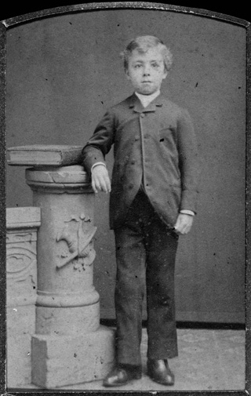 |
| Afbeelding 21 Jan Josef Mulders in 1885. |
Getrouwd te Tilburg 8 juni 1904 met Joanna Petronella Maria Vogels (* Tilburg 19 mei 1881, aldaar overleden 16 apr 1954) dochter van Adrianus Cornelis Vogels (* Tilburg 3 juli 1851), bakker, en Elisabeth van Lent (* Oss 4 nov 1848).
Uit dit huwelijk:
- Johannes (Jan) Adrianus Antonius Josephus Mulders volgt XI-h
- Adrianus (Jos) Gerardus Antonius Mulders volgt XI-i
- Gerardus (Gérard) Petrus Johannes Mulders
volgt XI-j
- Antonius
(Antoon) Adrianus Petrus Maria Mulders
Geboren Tilburg 14 jan 1910, overleden Renkum 1 nov 1994. Missionarisopleiding Mill Hill; priester gewijd 14 juli 1935. Van 1952 tot 1970 pastoor van St. Mary's Mission in Sandakan, in Brits-Borneo, tegenwoordig de Maleisische deelstaat Sabah. Vanaf 1971 verbleef hij in Australië, om in 1976 naar Nederland terug te keren. Woonde later in het Mill Hill-kloosterverzorgingshuis Vrijland te Oosterbeek (Gld.). - Josephus (Jef) Adrianus Maria Mulders volgt XI-k
- Bernardus Antonius Adrianus Mulders
Overleden Tilburg 23 juli 1913, oud twintig dagen - Petrus Julianus Maria Mulders
Overleden Tilburg 20 feb 1917, oud twee jaren - Elisabeth
(Lies) Gerardina Antonia Maria Mulders
Geboren Tilburg 9 juli 1916, aldaar overleden 9 jan 1999, begraven te Berkel. Getrouwd Tilburg 20 jan 1941 met Gijsbertus (Bert) Helena Seelen, geboren Gilze-Rijen 8 juli 1915, overleden Tilburg 1 okt 1977, begraven te Berkel. Vijf kinderen: Cees, Hans, Marjan, Monique, Toon. - Gerardina
(Ger) Johanna Cornelia Maria Mulders
Geboren Tilburg 17 mei 1918, overleden Venlo 1 aug. 1995, 77 jaar oud. Als Zuster Willibrorda ingetreden in het karmelietessenklooster te Sittard vóór 1954. Woonde later samen met Pauly Ott, geboren 18 aug 1922 in Stuttgart, overleden Blerick 28 nov 2003. - Petrus
(Piet) Johannes Adrianus Mulders volgt
XI-l
- Margaretha
(Greet) Martina Maria Mulders
Geboren Tilburg 5 aug. 1921, aldaar overleden 17 nov 2014. Getrouwd met Frans Smit, geboren 25 april 1921, overleden Tilburg 27 mrt 1994. Vier kinderen: Fons, Sjef, Joannie en Frank. - Elisabeth
(Beb) Allegonda Maria Mulders
Geboren Tilburg 1 aug. 1922, aldaar overleden 16 sep 1988. Getrouwd te Tilburg 28 nov 1956 met Martinus Henricus Joseph van de Lisdonk (Martin), geboren Tilburg 28 feb 1929, aldaar overleden 3 aug 2012, zoon van Antonius Petrus Adrianus van de Lisdonk en Johanna Maria Adriana Wittens. Drie kinderen: Toon (1958), Mart (1960), Magret (1963) - Henricus
(Harry) Aloysius Johannes Maria Mulders
Geboren Tilburg 14 sep 1923, overleden Heythuysen 16 okt 2012, aldaar begraven 19 oktober op de begraafplaats van de Witte Paters. Opgeleid tot missionaris kleinseminarie van Mill Hill, Sterksel, St. Charles bij Boxtel, ´s-Heerenberg, Rossington-Hall, en het Schotse Monteviot. Op 30 mei 1950 de Missionariseed afgelegd aan de Sociëteit van de Witte Paters. Priester gewijd 31 mei 1951 te Galashiels (Schotland). Van januari 1952 tot juni 1993 missionaris in het bisdom Kigoma in Tanzania, met een onderbreking van vier jaar als leraar op het klein seminarie van Ujiji (Kigoma), waar hij Engels, Latijn en geografie doceerde. Op 26 december 1955 ging Harry naar een nieuw kleinseminarie te Kaengesa, in het bisdom Sumbawanga. Begin 1957 keerde Harry terug in het parochiewerk, eerst in de stad Kigoma, in 1958 in Kakonko als pastoor en in oktober 1960 als pastoor in Mabamba, waar hij dertien jaar bleef. In december 1973 werd hij pastoor van Kasangezi, wat hij twaalf jaar zou blijven. In september 1986 verving hij voor een jaar een priester in Kakonko, daarna verbleef hij zes jaar in Makere als assistent-pastoor. Kwam in 1993 voorgoed terug naar Nederland, woonde in Heelsum (1993-2000), Vaassen (2000-2002), Dongen (2002-2012) en Heythuysen. - Aloysius (Louis) Gerardus Johannes Maria Mulders volgt XI-m
X-f Johannes Marinus Christianus Mulders (Jan) zoon van IX‑j
Geboren Tilburg 25 dec 1881, aldaar overleden 29 aug 1971. Al op vroege leeftijd wees geworden, belandde hij via een oom in de aannemerij. Later in hout- en bouwmaterialen in de Magazijnstraat in Tilburg. Woonde verder op: Hoogvensche straat 89 (een pension waar hij zijn vrouw leerde kennen); Bosscheweg; NS Plein 22 te Tilburg.
Getrouwd zomer 1917 met Martina Joanna Douwes Douwes (geb. Tilburg (?) 01 sep. 1890, overl. Tilburg 28 okt. 1982), dochter van Jacobus H. Douwes & Maria van der Avoird. Martina was eerder getrouwd met Ludovicus Kems
Uit dit huwelijk:
- Johannes Antonius Gerardus Maria (Jan) volgt XI‑n
| 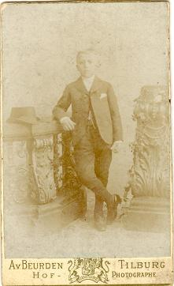 |
| Afbeelding 22 Johannes Marinus Christianus Mulders (1881-1971) in 1893 (klik op afbeelding voor grotere weergave) |
X-g Denis Mulders zoon van IX-k.
Geboren Moergestel 5 nov 1892, overleden te Haaren 18 aug 1978. Bewoonde een boerderij aan de Moergestelseweg in Heukelom. Getrouwd Hilvarenbeek 26 april 1926 met Johanna Lucia Roozen (* Oisterwijk 13 feb 1894, overleden te Heukelon, gemeente Berkel-Enschot, 18 dec 1956)
Uit dit huwelijk:
- Christina Johanna Mulders (Tiny)
Geboren Berkel-Enschot 14 feb 1927, overleden Tilburg 21 dec 1993, 66 jaar oud, begraven te Berkel. Getrouwd te Berkel-Enschot 8 mei 1957, op 30-jarige leeftijd met Adrianus Laurentius van der Loo (Jos, 30 jaar oud), geboren in Berkel-Enschot 29 dec 1926, overleden 1 feb 2004, begraven te Berkel. - Adrianus Johannes Wilhelmus (Jos) Mulders
Geboren Berkel-Enschot 27 juli 1929, gestorven Tilburg 25 juni 2016. Nam met zijn broer Jan rond 1960 de ouderlijke boerderij over. Deze is later afgebroken, waarna zij een boerderij betrokken in de Moergestelse Broek, de Dionysius-Hoeve aldaar. - Johannes Maria (Jo) Mulders
Geboren Berkel-Enschot 4 maart 1928, gestorven Tilburg 23 aug 2014. Getrouwd met Sjaan Schellekens. Drie zoons en een dochter uit dit huwelijk: Dion, Bertus, Joop en Arian. - Adrianus Maria Engelbertus (Dré) Mulders
Geboren Berkel-Enschot 27 sep 1930, gestorven Haaren 13 feb 2012. Getrouwd met Nellie van der Linden. Drie zoons uit dit huwelijk: Denis, Karel en Frank - Cornelia Martina (Corry) Mulders
Geboren te Heukelom, gemeente Berkel-Enschot, 17 juni 1932, overleden te Merselo op 11 okt 2003. Getrouwd met Frans van der Linden. Twee kinderen: Karel en Angelique van der Linden. - Jan Mulders
Geboren Berkel-Enschot 26 sep 1934, ongehuwd gestorven Moergestel 9 nov 2010. Boer, eerst in Berkel-Enschot, later op een boerderij in de Moergestelse Broek die hij omdoopte tot Dionysius-Hoeve ter ere van zijn vader. - Josephus Adrianus Cornelis ( Sjef) Mulders
Geboren te Heukelom, gemeente Berkel-Enschot, 30 nov 1939. Getrouwd 29 nov 1968 met Netty Bijvelt (gesch.). Kinderen uit dit huwelijk: Marcel Mulders, Esther Mulders en Dimitri Mulders.
X-h Adriaan (Jaon) Mulders zoon van IX-l.
Geboren Moergestel 21 nov 1868, aldaar overleden 29 sep 1952. Landbouwer, woonde tot circa 1941 in een boerderij aan de Oirschotseweg 44 te Moergestel; later aan het Rootven. Hij was medeoprichter van de Noordbrabantsche Christelijke Boerenbond in Moergestel (29 januari 1901), werd directeur van de Boerenleenbank en vanaf 1927 tevens voorzitter van de Boerenbond. Hij zat van 1905 tot 1909 in de gemeenteraad, waar hij in 1906 hevig protesteerde tegen een voorstel tot hogere bezoldiging van de burgemeester en de gemeentesecretaris. Verder was hij lid van de jachtcommissie van de NCB en namens deze organisatie toezichthouder bij de ontginning van de Moergestelse Broek, waarmee in 1930 werd begonnen. Tevens fervent jager en visser, aldus zijn kleinzoon Ton Heijkants. In 1909 klaagden Jaon en andere boeren in een ledenvergadering van de Boerenbond over het aloude heerlijke jachtrecht van de familie Van den Bogaerde van Terbrugge. Het recht was verpacht aan de Tilburgse textielmagnaat Van den Bergh en deze hield volgens de Moergestelse boeren de wildstand onvoldoende onder controle. Wildschade door koolduiven, fazanten en konijnen was het gevolg. Op 8 september probeerde een menigte van zo'n 200 boeren de familie Van den Bergh het jagen onmogelijk te maken. In 1913 volgden een moordaanslag op de jachtopziener van de familie Van den Bergh en de moord op een veldwachter. De nieuwe jachtwet van 1923 bracht enige rust omdat volgens een nieuwe regel het heerlijke jachtrecht door bewoners kon worden afgekocht.
Getrouwd Berkel-Enschot 5 mei 1908 met Johanna Petronella Bergmans (* Berkel-Enschot 27 maart 1872, † Moergestel 12 sep 1947) dochter van Johannes Bergmans en Maria Pijnenburg.
| 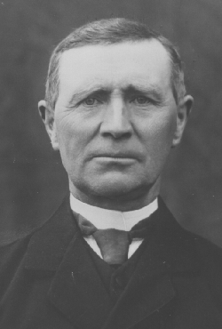 |
| Adriaan Mulders (1868-1952) |
Uit dit huwelijk:
- Christina Elisabeth (* Moergestel 12 apr 1909, overleden Tilburg 10 mei 1987) Getrouwd 25 mei 1936 met Petrus Johannes Verhoeven (* 14 april 1906, overleden Udenhout 18 sep 1982)
- Maria (Miet) Johanna (* Moergestel 4 juli 1910, overleden Tilburg 3 juli 2004, begraven Moergestel 8 juli 2004) Getrouwd 2 juli 1941 met J.P. (Jan) Verhoeven (* 31 jan 1909, overleden 20 feb 1997) Miet woonde op de Oirschotseweg 44, waar zij samen met haar man de zorg had over de boerderij. Uit hun huwelijk zijn acht kinderen geboren. Miet was meer dan 70 jaar lid van de K.V.O.; daarvoor werd zij in het begin 2004 nog door de burgemeester van Moergestel gehuldigd.
- Adriana Maria (* Moergestel 17 jan 1912, overleden Veghel 20 aug 1999) Getrouwd Moergestel 15 juni 1953 met Adrianus Johannes Wilhelmus Jozef Heijkants (* Erp 22 maart 1911, aldaar overleden 17 maart 2002)
- Johanna Cornelia (* Moergestel 1 feb 1913, overleden Tilburg 7 okt 1969) Getrouwd 3 juli 1941 met Cornelius Antonius Maria Prinsen (* Hilvarenbeek 2 juli 1914, aldaar overleden 27 dec 1977).
- Adrianus Johannes (* Moergestel ca.12 maart 1914, aldaar overleden 21 mrt 1914)
- Anna (Anneke) Petronella
Geboren Moergestel 25 okt 1916, aldaar overleden op 6 maart 2007, begraven parochiekerkhof St. Jans Onthoofding. Getrouwd 30 okt 1945 met S.A. (Toon) Dirkx, geboren op 9 aug 1922, overleden Moergestel op 22 mei 2001.
Generatie XI
Kort voor de tweede wereldoorlog zijn er nog maar drie takken Mulders in Moergestel: die van 'den Heikant, van 't Heerengoed en van de Broekzijde, respectievelijk X-h, de broers XI-b en XI-c, en XI-f
XI-a Lambertus (Bart) Josephus Mulders zoon van X-a
Geboren Moergestel 13 mei 1880, aldaar overleden 24 sep 1935. Getrouwd Diessen 9 mei 1916 met Johanna van Corven (* Diessen 26 juni 1889, overleden 19 mei 1966) dochter van Antonij van Korven & Cornelia Timmermans. De weduwe Mulders is per 24 maart 1937 met het gehele gezin ingeschreven in Middelbeers.
Uit dit huwelijk:
- Denis * Moergestel 2 okt 1917, overleden 19 aug 1989. Getrouwd met Jans van Ham (* 10 feb 1924)
Uit dit huwelijk:
- Joke * 2 mrt 1945. Getrouwd met Jan Somers (* 17 feb 1944)
- Bart * 15 sep 1946, overleden 26 nov 1960
- Adriaan (Ad) Lambertus Antonius * Middelbeers 6 okt 1949. Getrouwd 17 sep 1971 met Maria Cornelia Martina van der Staaij (* Middelbeers 9 dec 1950)
- Monique Mulders * Eindhoven 16 okt 1975
- Ester Mulders * Bladel 13 jan 1978
- Mariet * 19 apr 1964, overleden 10 nov 1965
Uit dit huwelijk:
- Cornelia (Kee) * Moergestel 29 mei 1919. Getrouwd met Willem Wolfs (* 16 feb 1910)
- Antonius (Toon) * Moergestel 25 jan 1921. Getrouwd met Tonny Vlemminx (* 6 nov 1920)
- Bart * 3 mei 1955. Getrouwd met Elly Mariën (* 4 aug 1957)
- Marian Mulders * 19 aug 1983
- Jos Mulders * 27 juni 1985
- Huub Mulders * 19 sep 1986
- Irene Mulders * 18 jan 1989, overleden 1989
- Niek Mulders * 11 sep 1991
- Rian * 5 aug 1956. Getrouwd met Ben Kaal (* 22 sep 1956)
- Piet * 18 okt 1957. Mulders-sierteelt, Middelbeers. Getrouwd met José Smetsers (* 22 mrt 1958)
- Toon Mulders * 21 jan 1987
- Harry Mulders * 7 feb 1982
- Els Mulders * 28 nov 1983
- Piet Mulders * 22 nov 1985
- Bert Mulders * 7 nov 1987
- Jan * 8 mrt 1959. Getrouwd met Rianne Janssen (* 4 dec 1963)
- Daan Mulders * 6 sep 1990
- Neeltje Mulders * 17 dec 1991
- Pien Mulders * 2 dec 1993
- Jannes Mulders * 3 okt 1996
- Ans * 7 apr 1961. Getrouwd met Jan Janssen (* 17 dec 1961)
- Mary * 22 nov 1962. Getrouwd met Jack Kolsters (* 7 dec 1962)
- Dimphie * 18 dec 1964. Getrouwd met Sjef Evers (* 8 apr 1961)
- Elisabeth (Lies) * Moergestel 27 juni 1922, overleden Tilburg 12 aug 1996. Getrouwd in Oost- West- en Middelbeers 22 juli 1948, op 25-jarige leeftijd met Cornelius (Kees) Petrus Schellekens, geboren in Tilburg 10 sep 1917
- Johanna (Anneke)
Geboren Moergestel 16 maart 1925, overleden in Canada, in 2001. Getrouwd in 1952 met Petrus Jacobus (Piet) de Kort, geboren Hilvarenbeek 12 mei 1926, overleden Dutton, Ontario, 1 juni 2007, zoon van Johannes Adrianus de Kort en Cornelia Maria Timmersmans. Vier kinderen uit dit huwelijk. - Johanna (Jo) Maria
* Moergestel 24 juni 1926, † te Bladel op 22 mei 2005. Getrouwd met Jan van Hoof (* 26 apr 1918, overleden) - Lamberta (Bertha) Maria * Moergestel 1 feb 1928. Getrouwd met Huub de Kort (* 4 apr 1926)
- Lambertus (Bart) Johannes * Moergestel 26 april 1932. Getrouwd 25 april 1932 met Riek van Gils (* 1 nov 1935) Geen kinderen uit dit huwelijk
Uit dit huwelijk:
Uit dit huwelijk:
Uit dit huwelijk:
Uit dit huwelijk:
Geboren Moergestel 25 sep 1882, aldaar overleden 2 juni 1955. Getrouwd Moergestel 30 mei 1921 met Jacoba van Dijk (* 10 februari 1895, overleden Moergestel 3 april 1986) dochter van Jacobus Johannes van Dijk & Adriana Ketelaars
Uit dit huwelijk:
- Johannes Dionisius (* Moerg. 30 april 1922)
- Johannes Jacobus
Geboren te Moergestel 2 maart 1924, overleden 9 januari 2001. Begraven te Moergestel. Getrouwd met Pietje Ketelaars. - Elisabeth Maria (* Moerg. 14 mei 1925, aldaar overl. 09 nov. 1966)
- Adriana Henrica (* Moerg. 5 dec 1928)
- Adrianus (* Moerg. 31 juli 1930)
XI-c Johannes Mulders zoon van X-a
Geboren Moergestel 25 dec 1885, overleden Vught 15 april 1975. Getrouwd met Wouterina van Ingen (* Helvoirt 25 feb. 1896, overleden Tilburg 12 jan. 1976, begraven Moergestel 15 januari).
| 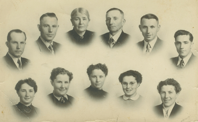 | |
Uit dit huwelijk:
- Beth (* 26 april 1925) Getrouwd met C. de Bakker. Canada
- Theo (* 1926) Getrouwd met Thea van Roessel
- Jan Mulders Getrouwd met Theresia Vermeer
- Denis volgt XII-a
- Cornelis (Kees) Maria
Geboren 6 nov 1928, overleden 19 nov 2006) Getrouwd met Margaretha (Greet) Maria Catharina Merckx (* Hooge Mierde 6 jan 1929, overleden Tilburg 6 sep 1988)
Uit dit huwelijk:
- Jan Mulders
- Karin Mulders
Getrouwd met Roland Marcelis (* 13 juli 1961, overleden Roosendaal 1 april 1992) - Lilian Mulders
- Maria Catharina (Marie)
Geboren Moedergestel 12 juni 1930, overleden Oisterwijk 21 sep 2009. Getrouwd met Jo de Ruijter (* 1925) - Jo (* 25 jan 1932) Getrouwd met Ton Verheijen
- Jan (* 1933) Getrouwd met Ida van den Bighelaar (* Veldriel 23 juli 1930)
Uit dit huwelijk:
- Gerrie Mulders (* Moergestel 16 dec 1964) Getrouwd
- Mien (* 18 feb 1935) Getrouwd met Tijn van de Loo
- Bertha (* 1936) Getrouwd met Marinus Verhoeven
Uit dit huwelijk:
| 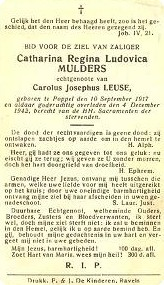 |
XI-d Martinus Mulders zoon van X-b
Posthuum geboren Berkel 4 sep 1879, overleden Poppel 9 mei 1955. Getrouwd Poppel 6 jan. 1913 met Maria Cornelia Adriaensen (* Poppel 29 aug. 1890, aldaar overl. 12 sep. 1965)
Uit dit huwelijk:
- Johannes Cornelius Martinus Mulders volgt XII-b
- Catharina Regina Ludovica Mulders
Geboren Poppel 10 sep 1917, aldaar overleden 4 dec 1942. Getrouwd Poppel 3 juni 1942 met Carolus Josephus (Jozef) Leuse (* Tessenderlo 21 jan 1911, overleden Turnhout 3 mei 2001) - Jan Mulders
Geboren Poppel 23 jan 1920, overleden rusthuis Lindelo te Lille 26 feb 1988. Ongehuwd. - Antoon Mulders
Geboren Poppel 26 juni 1922, aldaar overleden 16 nov 1994. Ongehuwd. - Lucia Mulders
Geboren Poppel 30 dec. 1924. Getrouwd Poppel 27 april 1954 met Jan Maes (* Weelde 17 aug 1927) zoon van Johannes Antonius Maes & Antonia van der Sauwen. - Regina Mulders
Geboren Poppel 9 dec 1926, overleden Leuven 7 juli 2000. Getrouwd Poppel 10 sep 1949 met August Janssen (* Uden 21 nov 1918, overleden Herentals 17 maart 1984). - Florentius Mulders
Geboren Poppel 1 mei 1929, gestorven Ravels op 4 januari 2018. Ongehuwd. - Karel Mulders
Geboren Poppel 17 mei 1931, gestorven Turnhout 8 december 2014. Getrouwd met Maria Raeymakers (* Poppel 23 juli 1920, aldaar overleden 27 okt 2004). - Maria Mulders
Geboren Poppel 1 dec 1932. Getrouwd Poppel 6 juni 1956 Albert Vercammen (* 's Gravenwezel 12 jan 1933, overleden Poppel 5 feb 2001) zoon van Jef Vercammen en Amelie Covens. - Antoinette Mulders
Geboren Poppel 2 dec 1934. Getrouwd Poppel 3 aug 1960 Cornelius van der Zanden (* Goirle 15 juli 1934). - Julia Mulders
Geboren Poppel 30 aug 1936. Getrouwd Poppel 3 aug 1973 met August Hendrickx (* Meerle 1 juni 1933).
XI-e Cornelis (Knilles) Mulders zoon van X-d
Geboren Moergestel 15 mei 1887, overleden 27 mei 1980. Woonde volgens het Bevolkingsregister 1930 in Moergestel, wijk C nummer 180. Het gezin vertrok rond 1931 naar Biest Houtakker, en is in 1937 ingeschreven in de gemeente Hilvarenbeek. Getrouwd met Maria Margaretha (Mie) van Oirschot (* Biest Houtakker 21 mei 1898, aldaar overleden 1 nov 1982, aldaar begraven 4 nov) dochter van Cornelis van Oirschot & Adriana Ketelaars.
 |
|
| De eerste gemeenteraad van Moergestel gekozen volgens het algemene kiesrecht, voor de burgemeesterswoning Het Broothuys in 1919. Knillis Mulders (tweede van rechts) zat van 1919 tot 1931 in de zevenkoppige Raad. De andere raadsleden zijn vlnr: Cornelis (Kiske) Wolfs, Francis J. (Janus) van Bommel en Piet Willems. Op de trap staan op de voorste rij vlnr Christiaan van de Wouw (tevens wethouder), burgemeester Eduard Maeyer en Adriaan (Jaon) Ketelaars (tevens wethouder). Op de achterste rij zien we in het midden secretaris Jos van Hulten en rechts daarvan het zevende raadslid Kees Ketelaars. De overige drie personen zijn notabelen van het dorp. Links naast Knillis staat Adriaan (Jaon) Mulders, die van 1905 tot 1909 in de raad zat. | |
Uit dit huwelijk:
- Theodorus (Theo) Adrianus Cornelis Mulders
Geboren te Moergestel 18 feb 1926, overleden 4 maart 2004. Hij was van 1970 tot 1990 raadslid in Moergestel en vanaf 1979 tot 1982 wethouder, aanvankelijk namens de Partij voor Gemeenschappelijke Belangen (PGB). Later enige tijd fractievoorzitter van het CDA. Woonde in Broekzijde, Moergestel. Getrouwd met Petronella (Nel) van den Hout, geboren te Goirle 18 februari 1932, overleden 19 augustus 2008. - Cornelis (Nelis) Adrianus Theodorus Mulders
(* Moergestel 16 sep 1927) - Adriana Maria Johanna (Sjaan) Mulders
Geboren Moergestel 7 jan 1929, overleden 30 aug 0215. Getrouwd met Piet van Puijenbroek - Adrianus Johannes (Jos) Mulders
Geboren Moergestel 11 aug 1930, aldaar overleden 31 dec 1931 aan kinkhoest - Joannes (Jan) Josephus volgt XII-c
- Leonarda (Narda) Adriana Cornelia Maria Mulders
Geboren Hilvarenbeek 18 nov 1932, † Hilvarenbeek 9 okt 1999)
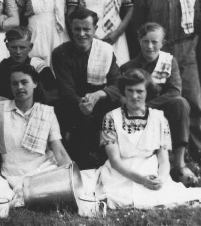 Melkcursus in de Biest-Houtakker, Hilvarenbeek, c. 1955.
Bovenste rij, vlnr: Cees van Oort, Jan Mulders, Hendrik de Kort.
Onderste rij, vlnr: Cato Prims en Narda Mulders.
XI-f Joannes (Jan) Wilhelmus Mulders zoon van X‑d
Geboren Moergestel 16 april 1893, aldaar overleden 20 dec 1976. Getrouwd 13 mei 1941 met Petronella Cornelia (Nel) van Roovert (* Diessen 16 okt 1904, overleden te Tilburg 16 sep 1997, begraven te Moergestel), dochter van Petrus van Roovert, landbouwer, en Catharina Paulina van Tilburg.
Uit dit huwelijk:
- Janus
Overleden 26 april 2014. Woonde in Moergestel op de Broekzijde - Theo
* Moergestel 22 juli 1943, † Diessen 25 april 2005. Getrouwd met Corry Nooyens. Uit dit huwelijk:- Chantal Mulders * 16 mei 1972
- Jurgen Mulders * 11 okt 1974
- Catharina Petronella (Toos)
* Moergestel 27 juni 1942, aldaar overleden 5 nov 1964. - Petrus (Piet) Johannes Maria
* Moergestel 8 nov 1946. Getrouwd met Klaartje Eltink, * Middelbeers 9 aug 1946.Uit dit huwelijk:
- Ielse Petronella Wilhelmina Maria Mulders
* Tilburg 30 mei 1972. Getrouwd 23 juli 1999 met Erwin Adrianus Franciscus Maria Pulskens. - Johannes (Jan) Theodorus Petrus Mulders * Tilburg 28 feb 1974. Getrouwd 31 aug 2003 met Adrienne van Roovert, * 18 jan 1977.
- Eva Cornelia Wilhelmina Maria Mulders
* Hilvarenbeek 18 jan 1976.
- Ielse Petronella Wilhelmina Maria Mulders
- Sjef
Getrouwd met Corry MoonenUit dit huwelijk:
- Robert Mulders * 3 dec 1972
- Geert-Jan Mulders * 4 juni 197x
- Jan
Broekzijde, Moergestel
XI-g Augustinus (Gust) Wilhelmus Mulders zoon van X‑d
Geboren Moergestel 23 mei 1896, overleden Tilburg 17 november 1983. Landbouwer, woonde 1930 in Wijk C nr. 181 (Heizen) waar zijn vader in 1920 ook nog woonde. Getrouwd Moergestel 16 juni 1924 met Adriana Cornelia Roozen (* Moergestel 28 juni 1899, aldaar overleden 17 okt 1969)
Uit dit huwelijk:
- Theodorus
(Theo) Adrianus
* Moergestel 25 april 1925, † Leende 2 okt 2003. Getrouwd met Liza de Groot, geb. Riel 19 jan 1926, dochter van Piet de Groot bij Kee van den Bosch. Twee zoons en twee dochters uit dit huwelijk. - Maria (Riet) Petronella Johanna (* Moergestel 24 april 1926, overleden 14 juni 2009). Getrouwd met J.A.C. Hesselmans, geboren Hilvarenbeek 31 mei 1925.
- Adriana (Jana) Theodora Catharina (* Moergestel 26 juni 1927)
- Gerardus (Geert) Petrus Maria
* Moergestel 17 juli 1928, † Tilburg 27 nov 2004, op 76-jarige leeftijd. Getrouwd met Corry Aerts. Kanoboerderij De Reusel aan de Heizenschedijk, MoergestelUit dit huwelijk:
- Drs.ing. A.A.W.G. (Guus) Mulders
Geboren Moergestel 3 maart 1964. Eigenaar dagrecreatiebedrijf Kanoboerderij de Reusel. Statenlid in Noord-Brabant voor het CDA sinds 20 april 2007. Voorzitter CDA-bestuur afdeling Oisterwijk-Moergestel, lid stichting Promotie Oisterwijks Toerisme, bestuurslid Land van de Hilver, voorzitter Scouting Moergestel, bestuurslid Stichting Moergestel fietsdorp.
- Drs.ing. A.A.W.G. (Guus) Mulders
- Jan
- Annie
- Sjef
- Toos
- Jo
- Nellie
XI-h Johannes Adrianus Antonius Josephus Mulders
Zoon van X-e. Geboren Tilburg 26 maart 1905, aldaar overleden 27 maart 1974. Aanvankelijk werkzaam als handelsreiziger voor de firma Hout- en Bouwmaterialen J. Mulders te Tilburg, het bedrijf van zijn oom Jan. Houtleveringen brachten hem geregeld naar de aannemerij van Albert van Loon, in de Heuvelstraat in Alphen. Schuin tegenover Van Loon woonden de zusters Vermeulen, mede-erfgenamen van de fa. Vermeulen-Van Baal, een van de grootste leerlooierijen van Alphen. Hij trouwt aldaar op 10 februari 1931 met de jongste dochter, Maria Johanna Josephina Vermeulen (* Alphen 12 dec 1903, overleden in Tilburg 28 juni 1953) dochter van Sebastiaan Vermeulen en Nicolasina Maria Petronella van Baal. Aanwezig bij het huwelijk op het gemeentehuis in Alphen zijn Jans ouders; de akte wordt mede ondertekend door de getuigen Jos Mulders (broer van de bruidegom) en J.F.J. Vermeulen, leerlooier, neef van de bruid.
Kort daarop begint hij een fruitkwekerij in Alphen, in 1934 onder de handelsnaam "Alfheim" opgenomen in het Handelsregister en opgeheven in 1964. Jan Mulders zit in de eerste naoorlogse gemeenteraad, die door de Commissaris van de Koningin in Noord-Brabant is benoemd en op 10 augustus 1945 voor het eerst bijeenkomt. Bij de eerste naoorlogse verkiezingen gehouden op 26 juli 1946 wordt hij in de raad gekozen. Op 22 juni 1949 wordt hij herkozen en opnieuw op 29 mei 1953. Hij is Kerkmeester van de parochie 1934-1967, bestuurslid Coöperatieve Tuinbouwveiling RBT te Breda (voorzitter van de afdeling Alphen en Riel vanaf 1942), bestuurslid Katholieke Boeren- en Tuindersbond KNBTB. Enkele jaren (onder meer in 1965) voorzitter van de Fruittelersvakbond van de KNBTB, die in Den Haag kantoor hield. Ook is hij tussen 1952 en 1956 lid van de vaste commissie tuinbouw van het Landbouw-Economisch Instituut. De Nieuwe Tilburgsche Courant meldt op 12 juli 1938 dat J. Mulders te Alphen en Riel is aangesteld als Commandant van den Luchtbeschermingsdienst voor Alphen Riel.
Op 5 oktober 1944 verwelkomt Alphen Poolse soldaten, die het dorp hebben bevrijd van de Duitse bezetter. De vreugde duurt niet lang, het dorp is van drie kanten omsingeld door vijandelijke troepen en zware beschietingen volgen. De bevrijders besluiten de bevolking van Alphen te evacueren. Op 8 oktober vlucht het gezin te voet naar Turnhout, dat op 24 september was bevrijd. Hij schrijft hierover op 17 februari 1945:
" 's Anderendaags moesten we ons melden in Baarle aan een school en hoorden dat we dien middag naar Turnhout zouden worden gebracht door Poolse legerauto's. Kinderwagens konden natuurlijk niet mee en dus leenden we koffers en maakten van dekens en ander materiaal twee groote pakken, die voor en achter over de schouder gedragen konden worden nadat ze met geleend touw aan elkaar gesjord waren. In Turnhout aangekomen moesten we zelf maar zien een onderdak te vinden, wat voor elf personen (man, vrouw, schoonzuster, mijn broer en zeven kinderen) een zware opgave was. Dien nacht sliepen we in een pensionaat en vonden door bemiddeling van goede menschen dinsdags een zeer goed tehuis bij een gegoede advocatenfamilie [hij noemt elders in zijn dagboek de naam: de familie Versteylen, RM], terwijl mijn broer en oudste zoon (13 jaar) op een andere plaats ook zeer goed terechtkwamen. Eindelijk hadden we nu een thuis en konden rustig zonder bovenkleeren gaan slapen."Op de 27ste oktober 1944 is de geallieerde bevrijding van het gebied een feit, Jan keert op de 29ste terug naar een zwaar beschadigd woonhuis. Op 6 februari 1945 valt een V1-bom op het kerkhof van Alphen, waarbij Jan en zijn vrouw, die thuis zitten, verwondingen oplopen en hun huis nog zwaarder beschadigd raakt.
In de jaren na de oorlog breidt Jan zijn bedrijf uit met een tweede boomgaard van 9 hectaren op de Gilzeheide aan de Fransebaan en een koelcel-annex-sorteercentrum achter zijn woonhuis. Voordat er bomen geplant kunnen worden op de nieuwe percelen, moet eerst de gele grond gekeerd worden om de vruchtbare diepere laag naarboven te halen. Enige tijd liggen er zelfs rails op het terrein om met gebruik van wagons de aarde te verplaatsen. Fruit kweken op zandgrond valt niet mee, en deze periode kent als gevolg van hagelbuien, strenge vorst, een verouderd bomenbestand en opkomende concurrentie van goedkoop buitenlands fruit ook veel tegenslagen. In 1955 en 1960 verkoopt Jan 26 hectaren bos, hem aangekomen van zijn eerste vrouw, in de Chaamse bossen (tegenwoordig munitiepark Gilze-Rijen).
 |
| Alphen, mei 1956. Jan Mulders aan het werk in zijn bloeiende boomgaard met (vlnr) zijn zwager heeroom Eduard Vermeulen, zijn zoon Ward en zijn tweede vrouw To. |
Begin jaren 60 besluit Jan een sloopvergunning aan te vragen voor zijn — mede door oorlogsschade — vervallen huis aan de Molenstraat nummer 8. Tot sloop komt het niet. Architect en overbuurman J. C. Backx wil het pand met karakteristieke 17de-eeuwse trapgevel redden en komt tot een ruilovereenkomst met Mulders. Backx maakt in mei 1962 in samenwerking met Rijksmonumentenzorg een ontwerp voor een ingrijpende restauratie en vraagt op 6 juni 1963 een bouwvergunning aan, die op 6 februari 1964 door burgemeester en wethouders wordt afgegeven op voorwaarde dat de bouw binnen zes maanden van start gaat. Geraamde bouwkosten: 131.047 gulden, zie Bouwvergunningen Alphen en Riel 1905-1980, 2151. Jan en zijn gezin verhuizen naar een naastgelegen woonhuis, dat door Backx is gebouwd op de plek waar tot circa 1960 de leerlooierij van de firma Vermeulen had gestaan.
Op 9 en 16 november 1964 laat Jan Mulders, ook namens mede-eigenaar Eduard Vermeulen (priester te Lewedorp, gemeente 's Heer Arendskerk) de gronden en gebouwen behorende tot zijn geliquideerde fruitkwekerij publiekelijk veilen. Dit vindt plaats in hotel-café-restaurant Den Brouwer in de Alphense Raadhuisstraat. Het deel tussen Zandstraat en Chaamseweg (7 ha 81 a 40 ca) blijkt achteraf via een tussenpersoon voor 161.000 gulden te zijn opgekocht door de gemeente, met het motief dat "gezien de ligging van het bedrijf vlak tegen de bebouwde kom, en de verwachtingswaarde van de gronden, deze kans aan de gemeente niet mocht ontglippen" (Bron: Archief gemeente Alphen en Riel, inv.nr. 52. Het bijbehorende notariële procesverbaal van de veiling is verleden te Alphen op 16 nov 1964 en mede-ondertekend door kandidaat-notaris A. Daverveldt, wonende te Breda, die als getuige aanwezig was).
Gedeputeerde Staten verleenden op 1 december 1964 toestemming voor de aankoop. Het restant, de tweede boomgaard aan de Fransebaan (in totaal 9 ha 67 a 50 ca), en een perceel bos aan de Chaamseweg (21 a 75 ca) wordt aan particulieren verkocht.
Hertrouwd 16 nov 1954 met Catharina (To) Johanna Dorothea Andriessen (* Utrecht 7 juli 1910, overleden Tilburg 16 december 2006), dochter van Pieter Andriessen, geboren in Hilversum, en Johanna Maria Adriana Putman uit Oudewater. Pieter Andriessen is een achterneef van componist Hendrik Andriessen (1892-1981).
Uit het eerste huwelijk:
- Josephus Sebastianus Joannes Maria volgt XII-d
- Christina Josephina Nicolasina Maria (Ien)
Geboren Alphen 19 nov 1933, gestorven op 88-jarige leeftijd Helmond 26 dec 2021. Aldaar getrouwd 27 nov 1958 met Louis Jacobs (* 28 juni 1929, overleden 22 dec 1996) uit Baarle Nassau. Drie kinderen: Ad (* 12 sep 1959), Jan (* 28 apr 1961) en Erik Jacobs (* 23 juni 1964) - Eduardus Hadrianus Joseph Maria (Ward) volgt XII-e
- Joanna Gerardina Josephina Maria Helena (Marleen)
Geboren Alphen 2 nov 1936, gestorven op 82-jarige leeftijd te Nieuwegein 2 aug 2019. Getrouwd Alphen 6 juni 1962 met Henricus (Henk) Johannes Maria Couwenberg, geboren Baarle-Nassau 11 jan 1937, overleden Nieuwegein 3 mei 2019. - Maria Margaretha Josephina (Marij)
Geboren Alphen 3 juni 1939. Aldaar getrouwd 4 juli 1964 met Jan van Son (* 12 aug 1937) uit Tilburg - Johanna Elisabeth Maria (Annelies)
Geboren Alphen 15 juli 1940. Aldaar getrouwd 15 mei 1965 met Albertus Marcelis Wilhelmus Maria de Jong, geboren Alphen 11 mei 1936 als zoon van Johannes Antonius de Jong (1909-1995) bij Augustina Johanna Cornelia van der Steen (1909-1999). - Lidwina
(geboren en gestorven Alphen 31 mrt 1942)
- Marcus
(Mark) Johannes Josephus Maria
volgt XII-f
- Gertrudis Christina Maria (Trudy)
Geboren Alphen 27 okt 1945, gestorven op 71-jarige leeftijd Brunssum 30 juli 2017. Getrouwd Groningen 2 sep 1968 met Jan Staal (gesch.). Hertrouwd met Lou Raedts. - Lidwina Christina Josepha Maria (Lidy)
Geboren Breda 9 aug 1950. Getrouwd Tilburg 3 feb 1971 met Joep Oomen (* Baarle-Nassau 18 dec 1945, aldaar gest. 28 juli 2007), zoon van Adrianus Oomen (1905-2002) en Engelina Maria Kennes (1902-1994). Hertrouwd Tilburg 23 november 2012 met Ton Vermunt, geboren Gilze 3 juni 1948, overleden Tilburg 14 maart 2013.
 |
| Vier generaties Mulders, in 1962. V.l.n.r.: Jan (1905-1974), Jan (geb. 1962), Jef en Jef (1879-1964). |
 |
|
De gemeenteraad van Alphen en Riel met de net geïnstalleerde nieuwe burgemeester, 1 januari 1956. Raadslid Jan Mulders staat in de achterste rij vierde van rechts. De 31-jarige burgemeester jonkheer J.J. Smits van Oyen zou slechts zeven jaar aanblijven, in 1963 werd hij burgemeester van Nuenen. (Klik op de foto voor volledige weergave) |
Geboren in Tilburg 3 dec 1906, gestorven op 104-jarige leeftijd te Penrith, New South Wales, Australië, op 29 aug 2011. Geëmigreerd naar Australië. Getrouwd met Antonia Francisca (Cis) Maria Thomas(* 11 mei 1912, overleden Emu Plains, New South Wales, 6 aug 2001).
Uit dit huwelijk:
- Jan (John) Mulders
- Lucas
(Luc, Luke) Gerardus Antonius Petrus Mulders
Geboren Tilburg 2 juli 1953. Getrouwd 5 jan 1985 te Emu Plains met Lorena Nesa.Uit dit huwelijk:
- Jacinta Maree
Geboren 18 jan 1988. - Grace Hye Jung Kim
Geboren 11 mei 1996 (geadopteerd).
- Jacinta Maree
- Mirjam
(Miriam) Jeanna Bernadette Mulders
Geboren Katoomba, New South Wales, 30 oct 1954. Getrouwd Emu Plains 30 sep 2000 met Peter Valdama Sorensen.
XI-j Gerardus (Gérard) Petrus Johannes Mulders zoon van X‑e. (* Tilburg 6 juli 1908, overleden Breda 4 juli 1993, 85 jaar oud). Sinds 1935 gemeenteambtenaar in Rijsbergen, koninklijk onderscheiden voor zijn verdiensten in 1973. Getrouwd Alphen 25 nov 1946 met Catharina Maria Huijbrechts (* Alphen 17 sep 1918, overleden te Rijsbergen 25 feb 2005)
Uit dit huwelijk:
- Adrianus Aloysius Antonius
(Ad)
Geboren te Breda 30 aug 1947, gehuwd aldaar 11 dec 1972 met A.P.M. Smits.Uit dit huwelijk:
Renske Mulders
Geboren te Etten-Leur 18 mei 1978Joost Mulders
Geboren te Etten-Leur 13 dec 1979
- Joannes Petrus Maria (Hans)
Geboren Rijsbergen 7 mei 1949. Kinderen bij A.M.G. Tindemans (geboren Weert 12 jan 1953):Bas Mulders
Geboren Bergen op Zoom 12 juni 1985Mirjam Mulders
Geboren Bergen op Zoom 14 feb 1987Ingrid Mulders
Geboren Bergen op Zoom 1 aug 1989
- Maria Wilhelmina Cornelia
(Marijke)
Geboren te Rijsbergen 8 mei 1950. - Henricus Joannes Maria (Henk)
Geboren te Rijsbergen 22 okt 1951, gehuwd Nieuw-Ginneken 5 aug 1980 met E.M. de Vree.Uit dit huwelijk:
Claudia Mulders
Geboren te Breda 2 juli 1983Astrid Mulders
Geboren te Breda 6 juni 1985Ivo Mulders
Geboren te Etten-Leur 14 aug 1988Alex Mulders
Geboren te Etten-Leur 14 aug 1988
- Elisabeth Maria Adriana Aloysia
(Marlies)
Geboren te Rijsbergen 1 april 1953. Gehuwd aldaar 28 okt 1975 met Frank van Damme.
XI-k Josephus (Jef) Adrianus Maria Mulders zoon van X‑e
Geboren Tilburg 10 nov 1911, overleden aldaar 3 sep 1995, begraven Loon op Zand 7 sep. Bakker in Tilburg, volgens het Adresboek 1943 gevestigd aan de Laarstraat nummer 15, in 1958 met een filiaal aan de Pijlijserstraat 63. Getrouwd Bergen op Zoom 10 sep 1940 met Johanna Cornelia Maria van Mansfeld (Jo), geboren in Bergen op Zoom 30 juni 1909, overleden Tilburg 6 feb 2001, begraven Loon op Zand.
Uit dit huwelijk:
- Josephus Joannes Maria (Sjoerd)
Geboren Tilburg 21 juni 1941, aldaar overleden 11 juni 2011, begraven Tilburg 20 juni. Getrouwd met Jeanne Heuvelmans (overleden 2 okt 1988), hertrouwd met Christina Maria de Nijs (overleden 23 juni 2002). Uit het eerste huwelijk:- Josephus Adrianus Johanna Mulders (Joost)
Geboren Arnhem 11 september 1965. - Bibiche Wilhelmina Allagonda Mulders (Bibi)
Geboren 's-Hertogenbosch 19 februari 1968.
- Josephus Adrianus Johanna Mulders (Joost)
- Petrus Johannes Maria (Peter)
Geboren Tilburg 25 juni 1942, overleden 10 augustus 2011, begraven Tilburg 15 aug. Broeder van het Sint Jorisgilde te Tilburg. Bakker in Tilburg, aan de Laarstraat. Getrouwd met Vike Mulders.Uit dit huwelijk:
- Dick Mulders
- Bas Mulders
- Antonia Maria Joanna (Anne-Marie) (* Tilburg 25 aug. 1943)
- Maria Antonia Joanna (Marianne) (* Tilburg 25 aug. 1943)
- Elisabeth Helena Maria (Liesbeth) (* Tilburg 07 jan. 1945)
- Rosaline Victorine Elisabeth (Rosemarie)(* Tilburg 21 feb. 1946)
- Antonius Henricus Maria (Anton)
Geboren te Tilburg 7 feb 1947. Getrouwd met Andrea Johanna Maria van Mil, geboren te Oss 24 nov 1948. Uit dit huwelijk:- Sarah Anne Mulders
* Maastricht 24 jan 1982 - Gijs Dirk Mulders
* Heerlen 16 juli 1984 - Wouter Mathijs Mulders
* Heerlen 5 april 1987
- Sarah Anne Mulders
- Paulus Franciscus Adrianus Maria (Paul) (* Tilburg 11 april 1949)
- Hugo Henricus Maria (Hugo) (* Tilburg 25 mei 1952)
| 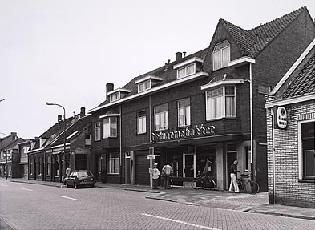 |
| Afbeelding 23 De bakkerij Mulders-Van Mansfeld, Laarstraat 17 in Tilburg. Een foto uit 1982 (klik op afbeelding voor grotere weergave) |
XI-l Petrus (Piet) Johannes Adrianus Mulders zoon van X‑e
Geboren te Tilburg op 17 dec 1919, aldaar overleden op 1 april 1997. In het Tilburgs Adresboek jaargang 1953 vermeld als bakker in de Eikstraat nummer 51. In 1958 is het adres Watertorenstraat 1. Getrouwd Tilburg 28 dec 1949 met Petronella (Elly) Josina Cornelia Beunis, geboren 30 juni 1928.
Uit dit huwelijk:
- Henricus (Harry) Josephus Antonius Maria (* Tilburg 31 mei 1951)
- Conny
- Marie-José
- Marion
- Petrus (Pierre) Aloysius Cornelis Maria (* Goirle 30 sept. 1960)
XI-m Aloysius (Louis) Gerardus Johannes Maria Mulders zoon van X‑e.
Geboren Tilburg 3 jan 1927, overleden 6 oktober 2012. In het Tilburgs Adresboek jaargang 1953 genoemd als bakker in het bedrijf van zijn vader in de Watertorenstraat. In 1963 is het adres Jan van Beverwijckstraat 62. Getrouwd met Corry van Hooft (* 12 juni 1926)
Uit dit huwelijk:
- Louis (* 29 juli 1955) Getrouwd
met Ans Vulto
Uit dit huwelijk:
- Bram (* 3 okt 1984)
- Rik (* 17 juli 1987)
- Rob (* 03 jan 1957) Getrouwd
met Hél�ne Koenraad, geboren Breda 24 maart 1960, dochter van Cornelis (Kees)
Koenraad & Maria Theresia van de Voort
Uit dit huwelijk:
- Marthe (* Udenhout 15 maart 1988)
- Ruben (* Udenhout 20 februari 1991)
- Marc (* 23 sep 1958) Getrouwd met Trudy Sas
- Ivo (* 16 feb 1961)
Internationaal erkend kunstschilder. Winnaar Prix de Rome Vrij Schilderen 1985; solo exposities in het Stedelijk Museum te Amsterdam (1991), Parijs (1997) en New York (1999). Marc Mulders werd door het Nationaal Comité Zilveren Regeringsjubileum Koningin Beatrix gevraagd een ontwerp te maken voor een raam in de Nieuwe Kerk in Amsterdam. Dit glas-in-loodvenster is op 29 april 2005 als Nationaal Aandenken aan de koningin aangeboden.
| 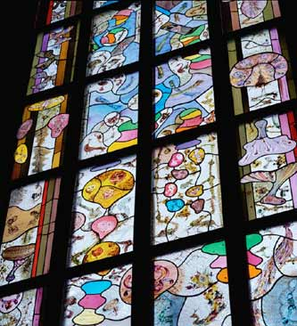 |
| Afbeelding 24 Marc Mulders, de Tuin, Nieuwe Kerk Amsterdam. |
XI-n Johannes (Jan) Antonius Gerardus Maria Mulders zoon van X‑f. (* Tilburg 18 juni 1918, overl. Tilburg 09 juni 1988) Architect & kunstschilder te Tilburg. Getrouwd Tilburg 25 nov 1954 met Maria Immaculata Antoinette (Immy/Pim) Adolfse (* Eindhoven 11 jan 1925, overleden Tilburg 27 dec 1989)
Uit dit huwelijk:
- Michel Jean-Paul (* Tilburg
31 aug. 1955) Getrouwd Driebergen 08 juni 1991 met Carolien Visser (* Brussel
29 nov. 1959)
Uit dit huwelijk:
- Sander Louis (* Den Bosch 29 mei 1992)
- Maurits Frederik (* Den Bosch 12 juli 1994)
- Wouter Michel (* Den Bosch 16 april 1998)
Uit dit huwelijk:
- Marijn Olivier (* Nieuwegein 18 april 1994)
- Floris Pepijn (* Nieuwegein 8 aug 1996)
Uit dit huwelijk:
- Mirthe Lucia (* Gorinchem 10 juli 1993)
- Casp�r Paul (* Gorinchem 10 nov 1995)
Generatie XII
XII-a Denis Mulders zoon van XI-cGeboren Moergestel 15 juli 1927, overleden Tilburg 9 augustus 2006, begraven te Moergestel. Getrouwd Moergestel 12 mei 1962 met Adriana Maria Joanna (Jeanne) Lambregts, geboren Oosterhout 16 juni 1929, overleden 21 mei 2005.
Uit dit huwelijk:
- Nicolaas (Niek) Johannes Theodorus
Geboren Tilburg 14 maart 1963. directeur Mulders Automatisering Nederland, Moergestel. - Johannes Lambertus (Bertjan) Dionisius Maria
Geboren Moergestel 1966. - Dionisius (Dion) Franciscus Johannes Maria
Geboren Moergestel 17 feb 1967. Kinderen bij Heidi Herrewijn (* Lo Reninge 10 okt 1975):
- Mike Mulders (* 4 juni 2001)
- Glenn Mulders (* 8 juni 2003)
- Conner Mulders (* 4 feb 2006)
XII-b Johannes Cornelius Martinus Mulders zoon van XI‑d. (* Poppel 4 juni 1914, aldaar overleden 1 mei 1963) Getrouwd Poppel 9 sep 1953 met Maria Koyen (* Alphen 13 okt 1921, gestorven Turnhout 11 oktober 2016) dochter van Adriaan Koyen en Cornelia Petronella Heykants
 |
|
| Cornelis Mulders (geheel rechts) met zijn ouders | |
Uit dit huwelijk:
- Cornelia
(Nellie) Maria Adriana
Geboren Turnhout 10 dec 1954, gestorven aldaar op 24 maart 2016. Getrouwd Poppel 13 aug 1976 met Piet van Doormaal (* Hilvarenbeek 2 mei 1951) - Lucia
Maria Martha Adrianus
Geboren Turnhout 12 mei 1956. Getrouwd Poppel 18 aug 1977 met Jozef Smulders (* Baarle-Hertog 28 apr 1950) - Greta
(Greet) Regina Petronella
Geboren Turnhout 19 aug 1957. Getrouwd Turnhout 21 aug 1981 met Willie Jacobs (* Eindhoven 5 aug 1952), gescheiden 2017. - Anna Joanna
(An) Maria
Geboren Turnhout 19 apr 1959. Woont samen met Ad Adriaansen (* Baarle-Nassau 12 feb 1940) - Antonius
(Toon) Christina Martinus
Geboren Turnhout 23 aug 1961. Getrouwd Poppel 13 sep 1985 met Liesbeth van de Pol (* Poppel 12 okt 1963) - Gert Mulders
Geboren Turnhout 21 maart 1988. - Marianne Mulders
Geboren Turnhout 12 maart 1990. - Wim Mulders
Geboren Turnhout 23 januari 1992. Bij Anke Van Den Brand (geb. 4 mei 1988) vader van:- Marcel Mulders
Geboren 18 juni 2018.
- Marcel Mulders
Uit dit huwelijk:
XII-c Joannes Josephus Mulders zoon van XI-e. (* Moergestel 6 aug 1931, overleden Tilburg 17 jan 1994) Gevangenisbewaarder in Nieuw Vosseveld, Vught. Getrouwd Goirle 21 jan 1966 met Elisabeth (Bep) Petronella van den Hout (* Goirle 10 jan 1937)
Uit dit huwelijk:
- Hubertus (Berry) Cornelius Adrianus Maria
* Hilvarenbeek 11 dec 1966. Doctoraal rechten februari 1992, Tilburg. Bedrijfsjurist. Getrouwd te Castro Urdiales (Spanje) 22 juli 1995 met Diana Maria Alonso Blas, privacyjurist, * 13 sep 1969 te Baracaldo (Spanje).Uit dit huwelijk:
- Rachel Rebecca Mulders
Geboren 12 nov 2004. - Mike Dylan Mulders
Geboren Roosendaal 1 augustus 2006.
- Rachel Rebecca Mulders
- Adrianus Michael (Marcel) Joannes Maria
Geboren Hilvarenbeek 14 feb 1968. - Adrianus (Arjan) Leonardus Theodorus
Maria
Geboren Hilvarenbeek 12 juni 1969.
XII-d ing. Josephus (Sjef) Sebastianus Joannes Maria Mulders zoon van XI-h.
Geboren te Alphen op 13 dec 1931, gestorven op 86-jarige leeftijd 14 jan 2018. Fruitkweker in Alphen, daarna in Zeewolde en Dronten. Bestuurslid (secretaris) van het Proefstation voor de Fruitteelt, onder meer in 1975; bestuurslid (secretaris) Coöperatieve Veilingvereniging Kampen-Zwolle-IJsselmeerpolders 1976-1986; op 21 sep 1983 voor het CDA verkozen in de 11-koppige eerste raad van de nieuwe gemeente Zeewolde; lid Provinciale Staten van Flevoland; lid in de Orde van Oranje-Nassau 1999. Getrouwd te Bavel 29 juni 1961 met C.M.A. (Cor) van Arendonk (* 29 mei 1936) uit Bavel.
Uit dit huwelijk:
- Jan Mulders
Geboren 28 april 1962. Getrouwd met Yvonne Groot-Rouwen (* 28 nov 1961)Uit dit huwelijk:
- Anouk
Geboren 20 juli 1993. - Ralph
Geboren 14 feb 1995. - Chantal
Geboren 28 maart 1997.
- Anouk
- Henk Mulders Geboren Alphen (N-Br) 28 dec 1963. Geëmigreerd naar Bowmanville, Ontario, Canada. Getrouwd 27 december 1986 met Lisa Zoelman (* 24 dec 1964), dochter van Jan Zoelman en Magda Castreels.
- Christopher Mulders
Geboren Bowmanville 13 aug 1989. - Nicholas Mulders
Geboren Bowmanville 9 juli 1993. - Carla Mulders
Geboren 4 mei 1967. Getrouwd met Jack v.d. Meer (* 14 feb 1964)
Uit dit huwelijk:
XII-e Eduard Mulders zoon van XI-h. (* Alphen 5 april 1935, overleden 12 dec 2004) Getrouwd met Lisa Versmissen (geboren 7 nov 1937, overleden 22 april 2019)
Uit dit huwelijk:
- Johan (* 28 aug 1963, jong overleden)
- Anja (* 20 dec 1964)
- Karin (* 3 feb 1969)
XII-f Marcus Joannes Josephus Maria Mulders zoon van XI‑h
Geboren Alphen 13 aug 1943, gestorven op 69-jarige leeftijd te Breda 19 april 2013.
Kinderen:
- M. Mulders
- Robert Mulders
 |
Afbeelding 25 Opkomende zon tijdens de beklimming van de Mont Blanc, 18 juni 2004. De groep bevindt zich op ongeveer 4.400 meter hoogte, tussen Mont Maudit en Rochers Rouger. Robert Mulders tweede van links. |
De hierboven gepresenteerde tekstuele vorm is die van de genealogie: enkel de mannelijke familieleden worden vervolgd. Op termijn uiteraard een achterhaald principe gezien de vrije naamskeuze die ouders vandaag de dag genieten. In strijd met deze vuistregel zijn van enkele 17de-eeuwse vrouwelijke leden de gezinsstaten opgenomen. Dit ten behoeve van toekomstig onderzoek naar de oudste generaties. De persoonsnummering volgt de in Nederland gehanteerde vorm, met Romeinse cijfers voor de generaties en letters voor de naamdragers. De schat aan data is evenwel nog verre van compleet, vooral de periode na 1812 zit vol gaten. Elke toevoeging van een nieuwe loot aan de stam zal de nummering onvermijdelijk overhoop gooien.
Deze web-pagina is opgemaakt op 17 augustus 1999 te Amsterdam. Reacties en aanvullingen zijn welkom, en kunt u sturen
aan:
Robert Mulders
© Het auteursrecht berust bij Robert Mulders. Verveelvuldiging van de gegevens op deze website is uitsluitend toegestaan voor eigen gebruik. Openbaarmaking alleen onder schriftelijke toestemming van de auteur.